Juli 2026
Fields and Abacus Medals 2026
Every four years, the math world’s preeminent awards are given to the finest minds of a generation. The young winners — all under 40 on the first day of the year — have reshaped ma...
Living Fully in the Math World Means Threading the Needle
Shmerkin, from the University of British Columbia, who had also worked on the Falconer distance problem, noticed Wang’s talent while visiting Guth at MIT. She struck him as creativ...
Sometimes Being First Means Seeing the End Before Anyone Else
After Tsimerman’s flirtation with finance, he confronted his lingering doubts about his fitness as a researcher. At Princeton, he had proved he could solve research problems, but m...
A Master of the Traveling Salesperson Problem Finds His Own Path
Researchers who draw connections between disparate fields often cultivate their breadth of knowledge at the expense of deep engagement with any one subject. But not Oveis Gharan. F...
How Fast Is the Universe Really Expanding?
One of the biggest mysteries in cosmology seems to keep getting bigger. Astronomers have known since the 1930s that the universe is expanding, but in the 1990s, the discovery that ...

Some People Are Better at Eavesdropping Than Others
You’re talking to someone at a crowded restaurant when their eyes unexpectedly widen. “Did you hear that?” they ask. It turns out that, while listening to you, they also caught a d...
How This Emerging Tick-borne Virus Escapes Your Immune System
2026 has seen an unusually rough tick season. Populations of the little bloodsuckersare surgingin the Midwest and northeast right now, meaning the risk of tick-borne illnesses is m...
What a Picture of a Dog Has to Do with Reason and Logic
If someone asked you to think about the idea of a dog, you’d likely conjure a specific image in your mind: a sleek labrador retriever bounding through the grass, or maybe a French ...
Small, Cheap, and Full of Teeth: Baby Tyrannosaurs Were Plentiful and Precocious
Tyrannosaurs, like T. rex and Gorgosaurus, were among some of the largest land predators to ever exist, but they didn’t start out that way. In fact, they were relatively tiny compa...
When Monkeys Enter the Uncanny Valley
As an avatar becomes more humanlike, it looks familiar to us until it eventually triggers creepy feelings of strangeness. This “uncanny valley” effect, coined by Japanese roboticis...
Thermodynamic Computers Go With the (Energy) Flow
But how does lactase get this useful shape? It is encoded into the sequence of amino acids that make it up. As the chain is synthesized in the cell, thermal fluctuations allow the ...

Why Am I Left-Handed?
When I was first learning to write, my letters and words ran from right to left, reversed as if in a mirror. Being left-handed, I was imitating the hand strokes of my right-handed ...
Early Americans Pioneered the Keto Diet
By about 16,000 years ago, humans were living in the Americas. Whether the Clovis people of North America centered in New Mexico, or the Fishtail Projectile Point people of South A...
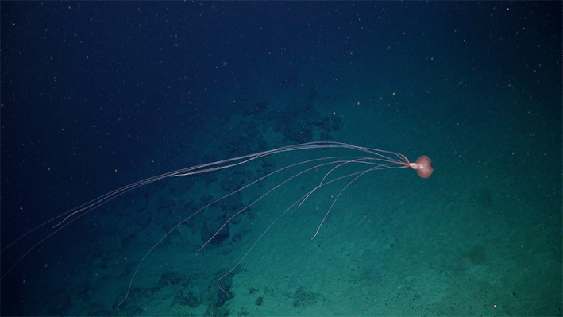
See the Odd-Looking Barreleye Fish in Its Natural Habitat for the First Time
Deep beneath the ocean where the African and South American tectonic plates meet lies the Doldrums Fracture Zone. Judging by its name alone, you might guess it’s not a particularly...
Here’s Why Some Humans Can Hear Super Low-Frequency Sounds
If you’ve ever experienced a feeling of unease in a spooky building at night, it might be caused by infrasound. These low frequency sound waves (below 20 hz) can come from furnaces...
Was This Fossil Creature the First Right-Hander Ever?
The Ediacaran Period marked the first time something on Earth became recognizable as life. During this era, which lasted from around 635 to 535 million years ago, microscopic singl...
How the Rule-Breaking Octopus Is Rewriting the Evolution of Intelligence
Humans have remarkably large brains for our bodies (no offense), but why?
We Know Simple Fluids Can Flow. Turns Out, Some Can Fracture.
Thamires Lima, a research professor in chemical engineering at Drexel University, studies the properties of thick, viscous liquids — think honey or molasses, though in a lab you’re...
Will We Ever Find Alien Civilizations?
Does intelligent life exist elsewhere in the universe? The question has captivated us for centuries, but despite decades of searching it remains frustratingly unanswered. Every so ...
Why Do Men Develop Parkinson’s Disease More Often Than Women?
Parkinson’s disease is an especially pernicious neurodegenerative disorder. Instead of a single cause, the illness develops as a result of a combination of genetics, aging, and env...
Can We Geoengineer Our Way Out of a Super El Nino?
Geoengineering has always had a certain allure. After all, the thinking goes, if we could just remove carbon from the atmosphere or reflect sunlight back into space, maybe we would...
The Surprising Evolutionary Trade-offs Between Fangs, Stingers, and Claws
When we choose our weapon, the situation matters—a sewing needle does a great job poking through cloth, but would fail as a paper hole puncher. In astudypublished today in the jour...
Hunting for a New Hallucinogen in the Lilliputian Psychedelic
A fictional race of humans who stand under 6 inches tall swarms the island of Lilliput inGulliver’s Travels,an 18th-century satirical novel by Jonathan Swift. That tribe now lends ...
When Galaxies Clash
We’re all hurtling through space right now. Despite sedentary appearances, all of us Earthlings along with our entire solar system are orbiting around the black hole at the heart o...

Is Life Just Different?
In 1993, a team led by the planetary scientist Carl Sagan tentatively concluded that there is life on Earth. Not much of a deduction, you might think — except that the researchers ...
Researchers Reveal the Power of ‘Quantum Proofs’
To put his idea to the test, Zhandry needed a candidate for a problem that has a quantum proof but no classical proof. The problem that he settled on, called the spectral forrelati...
Memory Loss May Not Be the Earliest Sign of Alzheimer’s
Memory loss is by far the most notorious symptom of Alzheimer’s disease, but it might not be the initial sign of the illness. According to a new studypublishedinNature Communicatio...
Synthetic Cells to Sell Synthetic Biology
The airwaves are crackling this week with news of the first synthetic cell, constructed and cultured by researchers from the University of Minnesota, under the auspices of biotechn...
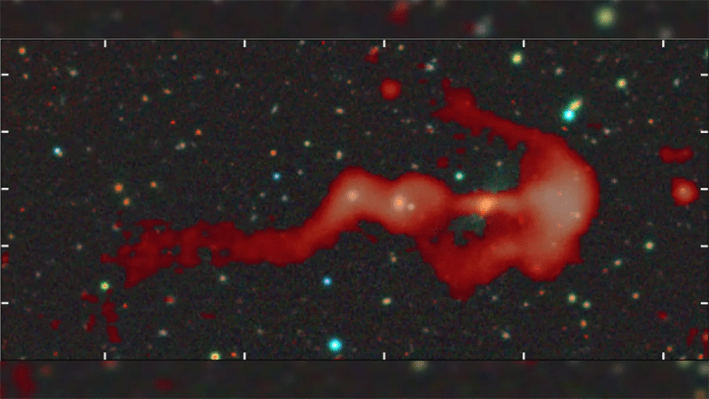
Cosmic Shockwave Reshaped a Newly Discovered “Bow and Arrow” Galaxy
A citizen astronomer examining radio telescope data recently flagged something unusual: massive streams of radio emissions shaped like a cosmic bow and arrow. The source of the emi...
How to Not Get Mauled on Your Hike This Summer
If you’re visiting a national park this summer, you’ll see plenty of signs warning you to steer clear of local wildlife. It’s good advice, but wild animals are famously unpredictab...
Here’s How Mosquitoes Survive the Deadly Viruses They Transmit
Mosquitoes are vectors for lots of viruses transmitted to humans—dengue fever, malaria, West Nile, yellow fever, and Zika among them. But why don’t mosquitoes get sick with the vir...
Astrophysicists Puzzle Over Webb’s New Universe
The galaxy on the screen represented an early population, but the most ancient galaxy discovered by JWST so far existed only 280 million years after the Big Bang. The telescope’s b...
For the First Time, a Cell Built From Scratch Grows and Divides
This was where the field had been stuck for some time. Researchers before Adamala had figured out different ways to feed and grow synthetic cells and to replicate their DNA. But ce...
Juni 2026
What Breaks a Cell’s Ribs Can Make It Stronger
The cells of animals, plants, and fungi start their lives by being torn apart. Cells are born by division, and just before a parent cell becomes two daughters, it doubles its nucle...
After 80 Years, Mathematicians Give Famed ‘Erdős Method’ an Upgrade
In 1947, Paul Erdős, the itinerant Hungarian mathematician, introduced what would become one of math’s most powerful tools. He wanted to prove that a certain kind of object existed...

Coincidences in My Life Have Me Wondering
After college, I went backpacking through Africa, and at the Khartoum airport in Sudan I met an American guy named Chris. We explored together for a few days and went our separate ...

Perseverance Scratches the Martian Surface, Finds Organic Carbon
Billions of years ago, water flowed on Mars, and NASA’s Perseverance rover has been trundling along an ancient riverbed flowing into Jezero Crater searching for any signs of life t...

Orangutans Seek Out Medicinal Plants
In 2024, biologists reported that a wild Sumatran orangutan named Rakutreated his own facial woundwith a poultice of chewed-up leaves. They weren’t just any leaves either—Raku sele...
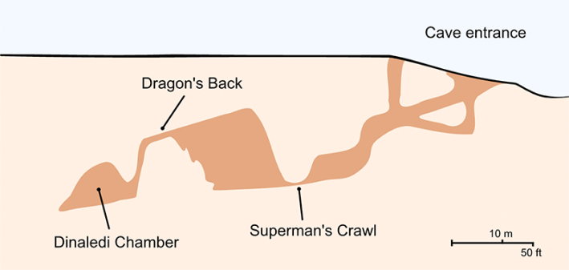
Archaic Hominin Species Buried Only Their Women
In an eyebrow-raising Facebook post in 2013, paleontologist Lee Berger madean interesting overture. He needed a team of people with paleontology and caving experience, with one oth...

Some Neanderthals Were Genetically Healthy Right Up Until the End
Neanderthals thrived on Earth for 200,000 years, living in Central Asia, throughout Europe, and into the Middle East. Around 40,000 years ago they mysteriously vanished. Their demi...
What Is the Positive Grassmannian and Why Does It Show Up Everywhere?
STROGATZ:Okay. And this word “orthant,” which isn’t totally familiar, is the 3D version of quadrant.

The Unlucky Ones: What It Feels Like to Get Struck By Lightning
Roy Sullivan came to be known as the “Human Lightning Rod.” The former Virginia park ranger and fire lookout survived seven direct lightning strikes between 1942 and 1977, belying ...
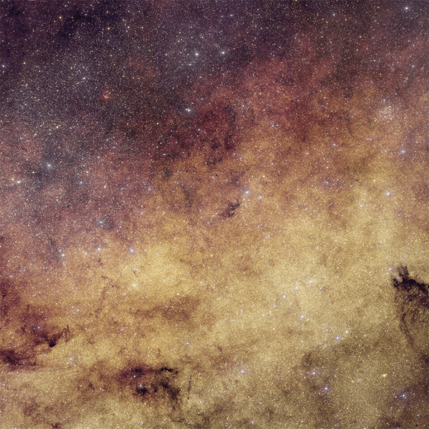
See the Milky Way’s Galactic Bulge, Captured in Unprecedented Detail
If the Milky Way were a Danish, the fruit filling would be its galactic bulge, a region in the center of the disk densely packed with stars. Astronomers from the European Space Age...

“Me, Myself, and I”: The Increasing Narcissism of Western Music
With the rise of social media and the splintering of media audiences, culture in America feels increasingly individualistic and personalized. Everyone has a different feed, mediate...

Can We Air-Condition Our Way Out of Climate Change?
The heat wave currently gripping Western Europe is killing people. In France alone, at least 48 people (many of them young) have drowned while trying to escape the heat by swimming...

Everyone’s Been Drawing Pterosaur Wings Wrong
Pterosaurs were the first vertebrates to evolve the ability to fly. Unfortunately, they didn’t leave a lot of clues about how they managed this feat. While there are plenty of pter...
How Physicists Track and Trap the Elusive Neutrino
Seventy years ago, the physicists Clyde Cowan and Frederick Reines took a custom-built 10-ton detector, surrounded it with thick lead walls and wet sandbags, and placed it near a p...

This “Roasted Exoplanet” Has a Wild Orbit
In 2009, astronomy students at University College London discovered something peculiar: a planet with four times the mass of Jupiter passing in front of a star 270 light-years from...

See the Southern Lights from Space in New ISS Video
Beyond being a massive sphere of turbulent incandescent plasma, the sun has a lot of internal drama, too. For example, every 11 years its north and south poles swap places and the ...
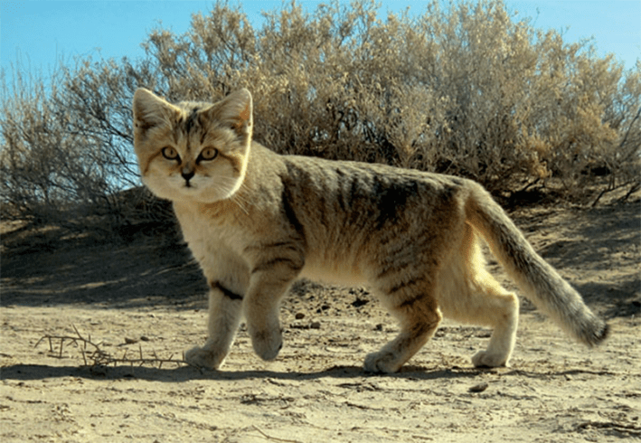
Qatari Sand Cats Caught on Camera for the First Time
The first thing you should know about sand cats is that they’re adorable. These small desert felines look like tawny house cats, with short legs, wide faces, large triangular ears,...

Today Was the Day Galileo Caved
It must have been a rough Wednesday for Galileo. It was late June, and the visionary scientist had arrived in Rome months prior to face trial under “vehement suspicion of heresy.” ...

How to Protect Earth Against Violent Space Weather
The weather in space can be pretty dramatic, and we’re not very good at forecasting it. A single solar flare can releasemoreenergy in a few minutes than human civilization has prod...
A Dark Dimension Could Link Two of the Universe’s Great Unknowns
According to the standard model of cosmology, that expansion rate should be the same no matter how you measure it. But in recent years, scientists have found that the expansion rat...
The Inventor of the Thinking Machine Didn’t Worry. Neither Should You
We’re all worried about artificial intelligence. At my small college, professors fret mostly about the use of AI to cheat. But students have much more profound anxieties about the ...

Can “Dante’s Inferno” Tell Us Something About Space Rocks?
An interloper recently crashed a European Geosciences Union conference: Timothy Burbery of Marshall University was the lone English professor among 18,000 geoscientists. He is also...

Science Is Political—and Spiritual
Physicist and cosmologist Chanda Prescod-Weinstein finished her latest book,The Edge of Space-Time: Particles, Poetry, and the Cosmic Dream Boogie,shortly before the 2024 election....

In the Midst of Tornado Season, a Surprisingly Short History of Predicting Twisters
Last night was another summer evening disrupted by the specter of destructive storms in my neck of the Midwestern woods. Severe thunderstorms and tornadoes were forecast in the St....
How to Dodge a Mountain Lion
I recently hiked through the Laguna Mountain range in California at dusk. At the trailhead, svelte mountain lions and shiny rattlesnakes greeted us from warning posters. We were hi...
Why the Human Genome’s Tangled Physicality May Confound AI
There are special enzymes involved in packaging and repackaging chromatin, thereby controlling transcription. In other words, what matters is not just the encoded information in th...
Seven Perfect Shuffles Randomize a Deck of Cards. But How Many Sloppy Ones?
In 1992, mathematicians famously proved thatseven “riffle shuffles”— the kind where a player splits a deck of cards into two piles, then uses their thumbs to interleave them back t...
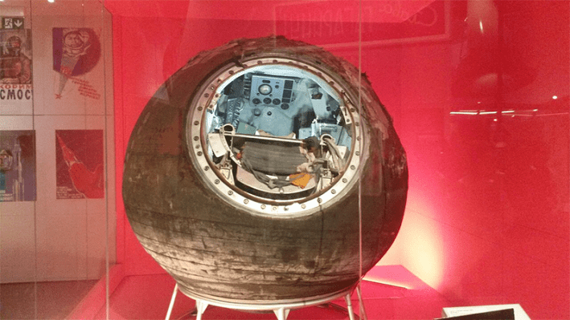
This Cosmonaut Was the First Woman in Space
NASA is catching some heat after it announced the crew of the Artemis III mission, which will launch in 2027 and attempt to “carry out a series of objectives in low Earth orbit des...

The Nautilus Reading List of Books on Evolution
Well, how did I get here?” That’s a very good question, David Byrne. Lucky for you and Talking Heads fans old and new,Nautilusis here with 10 books that explain how you and every l...

Saving a Tiny Endangered Porpoise One Pixel at a Time
What does the Chinese black market have to do with the world’s tiniest porpoise? Nothing and everything, it turns out.

Does This Protein Hold the Key to Differences in Aging Between Males and Females?
Aging, of course, is inevitable for everyone, but it affects men and women differently. Women, for example, live longer than men, but also become frailer later in life. Despite the...

If You’re Counting on Calcium and Vitamin D Supplements to Prevent Fractures, Think Again
It’s a cruel twist of fate that aging comes with the double whammy of a loss of balance and decreased bone density. The former puts us at risk for falls, and the latter makes us mo...

These Ancient Millipedes Paved the Way for Terrestrial Life
The first animals to crawl out of the muck for a life on land may have made the voyage on a lot of tiny legs. They were the millipedes, and 425-million-year-old fossils indicate th...
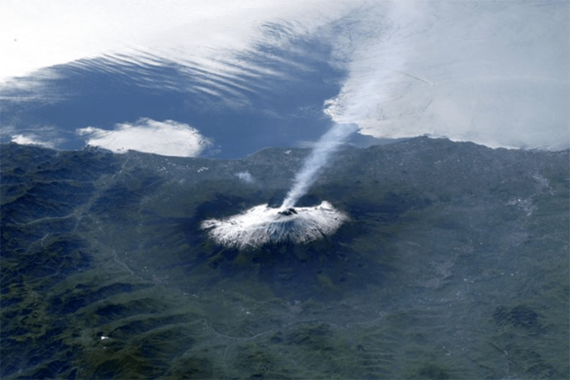
ISS Astronaut Shares Incredible Photos of Volcanoes Taken From Space
Life aboard the International Space Station is tough. The astronauts live and work in cramped quarters, carrying out difficult tasks without the luxury of gravity, and don’t get a ...

Bad Third-Grade Behavior Could be a Preview of Educational Failure
What were you like in third grade? A teacher’s pet, staying silently seated, soaking up knowledge? A rambunctious class clown who spent the school hours in and out of trouble? Acco...

What Is a Trillion, Really?
Elon Musk, SpaceX CEO, has made headlines recently for becoming the first human to amass $1 trillion. Putting debates about the harms of wealth concentration and income inequality ...

Is This the King of GLP-1s?
Trying to parse the never-ending deluge of GLP-1 studies can feel like trying to navigate a book-length diner menu. Some are pills, others are injectables, and all promise miraculo...

How Many Elementary Particles Are There, Really?
Every time I write about particle physics, I encounter a moment of uncertainty about a quantity that, at first glance, ought to be clear. How many kinds of elementary particles sho...

The Ancient Roots of Modern Winemaking
When you think of Chianti, you probably imagine the region’s dry red wine. Made from the Sangiovese grape, which gets its name from the Latinsanguis Jovisor “blood of Jupiter,” it’...

How to Feel at Home in the Modern World
Philosopher Ian Marcus Corbin first recalls feeling a deep sense of home when he watched the dawn unfold from a wild and overflowing backyard at his boyhood home in a rundown part ...
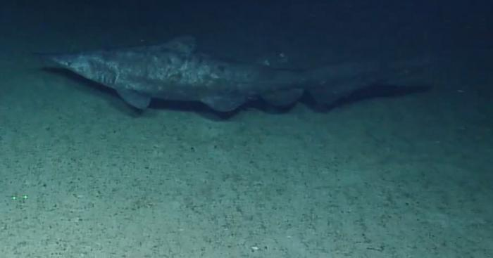
Goblin Sharks Caught on Camera in Their Natural Habitat for the First Time
Goblin sharks are far from nature’s cuddliest creations. With their long snouts, sharp, thorn-like teeth, and protruding jaws they’re downright ugly. These living fossils have been...

What Makes Sloths So Slow?
Watching a sloth in action is like watching a slow-motion clip on a loop. When they hang motionless in trees, they can shut off the normal regulatory system of mammals to instead a...

The Surprising Things You Find Digging Through Frozen Prehistoric Squirrel Poop
As permafrost thaws, it peels back the curtain on ancient life. In the Yukon’s warming tundra, for example, paleontologists have found camel bones, hyena teeth, mummified wolf pups...
Where Did Earth Get Its Oceans? Maybe It Made Them Itself.
When astronomers look at exoplanets — worlds outside our solar system — they see a diversity of atmospheres. But when they simulate the ways the planets took shape, scientists find...

Turning the Psychedelic Experience into a Math Problem
One psychedelic stands out from all the others: DMT. When the high priest of psychedelics Terence McKenna firsttookDMT in the 1960s, he noted that his understanding of the nature o...
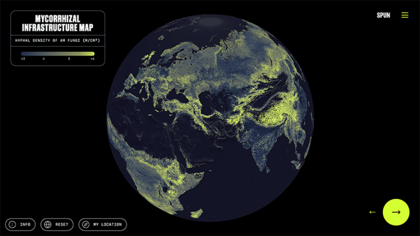
Hidden Fungal Networks Could Stretch from the Earth to the Sun a Billion Times Over
Beneath our feet lies a vast living network.

Inside the Largest Whale Graveyard on Earth
When whales die and sink to the ocean floor, their carcassesbecome buffetsfor a whole web of ocean organisms. To date, such “whale falls” have been documented as deep as about 4,00...

These Overlooked Pollutants Cause About 15 Percent of Global Warming
Everyone knows the major chemical culprits responsible for climate change—carbon dioxide and methane—but there are a handful of lesser emissions that contribute, too. Now, in a pol...

The Venus Flytrap Mystery That Vexed Darwin, Solved
Charles Darwin was fascinated by the Venus flytrap, so much so he called the carnivorous plant “one of the most wonderful plants in the world.”
What’s the Future of Gene Editing?
One of the most surprising and remarkable discoveries in recent scientific history has been CRISPR. Short for Clustered Regularly Interspaced Short Palindromic Repeats, CRISPR is a...
An Early Step on the Long, Strange Road to Photosynthesis
Every second, trillions of watts of solar energy — more than 10,000 times the energy used by modern humans — blast the Earth’s surface. Around 2.4 billion years ago, life took an e...

Here’s Why Our Walking Gets Slower as We Age
We all slow down as we age—quite literally. When we get older, our walking pace tends to decline, which can even be an indicator of anincreased risk of death. According to new rese...

How to Heal People with Science Fiction
Can science fiction shape future reality? Some people think so. Take the retired military officers who have actually credited novels such asDoctor Strangelove,Fail-Safe,On the Beac...
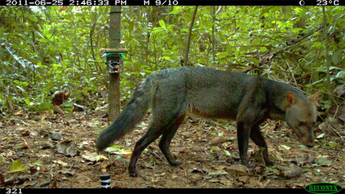
Mysterious Web-Footed “Ghost Dog” Caught on Camera
Deep in the Amazon rainforest lives a seldom-seen beast known as the short-eared “ghost dog.” There’s an air of mystery surrounding the wild dogs because it uses its keen sense of ...
See the First-Ever Photos of Cozumel’s Mysterious Dwarf Fox
Strange things happen to animals when they colonize islands. Some of them get larger, like the enormous rabbitNuralagus rexof ancient Menorca, while others get smaller, like the dw...

Koalas Were in Trouble Before Humans Arrived in Australia
Humans, who migrated to Australia as early as 65,000 years ago, have often been blamed for the decline in many marsupial species. Mammals like giant wombats and short-faced kangaro...

Your Saliva Knows How Sleepy You Are
How do you know the long-haul trucker in the 18-wheeler zooming down the highway next to you had a good night’s sleep? You don’t.

Human Ancestors Were Using Fire Earlier Than Previously Thought
For our early human ancestors, fire was a godsend. This transformative technology could provide warmth, ward off predators, offer illumination after dark, cook proteins, and more. ...

Vast Hidden Structure Discovered Beneath Antarctica
There’s a vast hidden structure buried deep beneath Antarctica. It’s not the ruins of a lost ancient civilization, though; it’s a nearly continent-sized network of hidden basins tw...

Check Out the Newest Fluorescent Amphibian
You’d think that a salamander well-known to science, the fire salamander (Salamandra salamandra), would harbor no secrets. Decades of research have focused on its bright yellow and...

How Big Tobacco Marketing Made it into Our Lunch Boxes
Any kid who grew up in the 1990s can tell you that Lunchables were a runaway hit. The slices of processed meats and cheeses were fun to cobble together into little sandwiches, and ...
How Terry Tao Became an Evangelist for AI in Math
Erdős was right. By the time Tao was 24, he had made enough new discoveries to have his choice of permanent faculty positions; he ultimately decided to settle at the University of ...

Check Out This New Colorful Sea Slug the Size of a Sesame Seed
Diving in the North China Sea off the coast of Taiwan is challenging. Between chilly waters and strong waves, conditions are prohibitive from October to April, and the short diving...
The Soul of Numbers
The Great Math Warby Jason Socrates Bardi is a history of the intellectual crisis that shook mathematics in the early 20th century. Bardi’s barnstorming narrative focuses on the in...

Ice Age CSI: Mammoth Cold Case Files
Construction workers digging near Regensburg, Germany unearthed something interesting back in 2020: an eight-foot-long tusk from a woolly mammoth. Archaeologists from the Bavarian ...

Newly Discovered Four-Winged Dinosaur Didn’t Need to Fly to Hunt Birds
What has four wings and can’t fly?Jian changmaensis, a newly described species of feathered dinosaur recently discovered in China.
Hell Heron: An Illustrated Story
Fossil records reveal Earth’s mass extinctions are followed by a rise of ocean cephalopods. They’re rising again.

Are Memories Transferable — or Edible?
This, after all, is what McConnell did. Rather than using laboratory strains of planarians, he sourced his from a lake near the University of Michigan. And so, not wanting to leave...

Screwworms Are Back. Here’s How We Eliminated Them the First Time
The dreaded screwworm fly is back. Yesterday, the USDAconfirmedthe first case of the parasitic larvae was found in a newborn calf in Zavala County, Texas near the border with Mexic...

Who Was Nancy Grace Roman?
She’s known as the “Mother of Hubble” to many of those at NASA who worked with her in the 20th century. Nancy Grace Roman was not only a pioneering astronomer who helped humanity u...

Newly Discovered Active Fault Line Could Threaten New Zealand’s Biggest City
Culturally, New Zealand might be closest to Australia, but geologically it’s an island unto itself. That’s because New Zealand’s two landmasses are actually the highest points of t...

Solving Feynman’s Formula for Eating Well, Parking Your Car, and Finding a Mate
At a Thai restaurant in the late 1970s, physicist Richard Feynman watched his friend Ralph Leighton waffle over whether to order his usual ginger chicken or try something new. Feyn...

Bumblebees Have Chimp-Like Problem-Solving Abilities Despite Tiny Brains
Just like humans, chimpanzees are adept at problem-solving. If you hang a banana out of reach and give a chimp some boxes (as psychologist Wolfgang Köhler did in the early 20th cen...
More Conversations, Complex Questions, and Bold Ideas in Season Five of ‘The Joy of Why’
What is the future of gene editing with CRISPR? Has AI changed mathematics forever? Will we find other civilizations in the universe? What if we’ve been wrong about dark energy all...

The Iceman’s Microbiome
When Ötzi the Iceman was felled by an arrow 5,300 years ago, he didn’t die hungry. According to ananalysisof his stomach contents, his final meal consisted of fat and dried wild me...

Food Noise Goes Quiet with GLP-1s
I don’t think about tacos all the time anymore,” Staci Klemmer, 57,toldThe New York Timesa few years ago. “I don’t have cravings anymore. At all. It’s the weirdest thing.”

Watch How “Trashy” City Bowerbirds Attract Their Mates
Bowerbirds are named for the elaborate structures the males build to charm would-be mates. Although they’re intricately woven from twigs, bowers aren’t nests. Instead, they’re orna...

Ancient DNA Illuminates the Uniqueness of the Extinct Cave Lion
Toward the end of the Pleistocene, 11,700 years ago, temperatures surged, ice melted, sea levels rose, and many large mammals became extinct. One of those was the Eurasian cave lio...

Stupid in the Land of Oz
Dr. Oz has quite the prognosis for anyone who disagrees with the policies of the Trump administration. Essentially this: There’s no cure for what ails you. The United States Admini...
Entanglement Builds Space-Time. Now “Magic” Gives It Gravity.
In 1973, John Archibald Wheeler described the relationship between space and matter in two sentences: “Space acts on matter, telling it how to move. In turn, matter reacts back on ...

This Non-Movie-Star Shark Is Feeding Close to Shore
Jawsis a summertime classic. It’s been terrifying moviegoers for more than 50 years. And many a beachgoer has at least a lingering memory of that unmistakable, two-note John Willia...
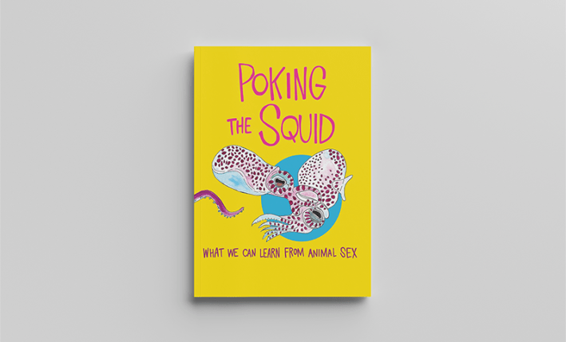
9 Books We’re Excited About This June
Did you know that female hyenas have to invert their external clitoris before a male can mate with them? On a different note, did you know we laid the first cables at the bottom of...

How Animals Pick and Choose the Sex of Their Offspring
Most parents may not care about the sex of their upcoming children, but red-shouldered hawks have a clear preference, depending on conditions. That’s according to a new studypublis...
See the Gravity Waves from a Super Typhoon
You may not notice it from here, but Earth is glowing. It’s not from the Northern or Southern lights, instead it’s “airglow.” When light from the sun strikes gases in the upper lay...
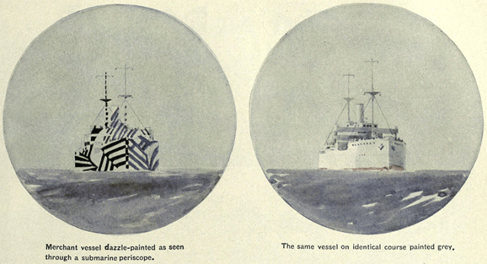
Tadpoles Use a World War I Naval Strategy to Dazzle Predators
During World War I, Allied ships got flashy new paint jobs featuring bold zig-zagging stripes. Known as “dazzle camouflage,” the purpose of the makeover wasn’t to conceal the ships...

Beavers Don’t Just Build Dams, They Build Nations
Gazing out the left-hand side of our boat, I caught my first glimpse of the rugged eastern perimeter of Wood Buffalo National Park in Alberta, Canada—a land saturated in superlativ...

Editing the Pesky Bones Out of a Popular Farmed Fish
There’s aFar Sidecartoondepicting a bunch of chickens splayed out flat on the ground unable to move, with a sign over them reading “Boneless Chicken Ranch.” According to research r...
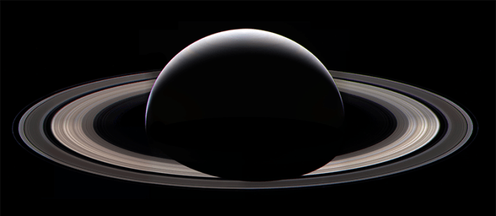
See Saturn Like You’ve Never Seen it Before
Anyone with a decent telescope can catch a glimpse of Saturn’s magnificent rings, but NASA released a photo of the side of the gas giant that’s impossible to see from Earth—the bac...

What Happened When the First Animals Started to Move
Nearly 560 million years ago during the Ediacaran period, life on Earth was still simple. The multicellular creatures that existed fed on large mats of bacteria on the seafloor and...

After the Black Death, Italy’s Oak Trees Came Back
When cities effectively shut down during the early days of the COVID-19 pandemic, wildlifetook notice. As humans retreated into their homes, curious animals started to venture more...

How the “Perfectionism Pandemic” Is Crushing Young People
Perfectionism among college students has become a public-health crisis, and the shape of our economy is likely to blame, according to newresearch. Rates of perfectionism have soare...

Did a Roman Legionnaire Wear Eyeliner?
Popular depictions of Ancient Egyptians are not complete without a distinctive, thick application of dark eyeliner. This particular makeup, called kohl, was indeed popular in ancie...
The Dirt That Refused To Die
For 15 years, Sébastien Fontaine has been trying to kill dirt. The biochemist, who runs a lab at the French National Institute for Agriculture, Food, and Environment, wanted to kno...
Maj 2026

This Blood-Sucking Fly Drastically Transforms When It Finds Its Prey
From the keen hearing of owls to the echolocating sonar of dolphins, a suite of animal senses have evolved to support their particular lifestyles. But sensory systems are energetic...

How Right-Wing Politics Make You Physically Ill
For at least a quarter of a century, public health advocates have understood how social factors like income and education shape health outcomes. But in recent years, where you sit ...
How a Tiny Bird Might Tell the Tale of Island Giants
Some island animals are notably bigger than their mainland relatives. Witness the giant tortoises on the Galápagos, the 300-pound Komodo dragons on Indonesian islands, and the colo...

Nightmarish Heron-like Dinosaur Unearthed in Patagonia
Southern Argentina during the Late Cretaceous didn’t have the cool, arid climate it does today. Instead it was temperate, muggy, and teeming with prehistoric life. Snails, fish, li...

The Cephalopods Are Coming
The quaint seaside village of Lyme Regis is precariously perched between rugged black cliffs in southwestern England. It sits astride one of the most famous fossil sites in the wor...

These Stars Swallowed Their Earth-like Planets
We’ve got around 5 billion years to plan for it, but at some point the sun is going to expand into a red giant and engulf the inner planets—up to and including the Earth. Now, new ...
Key Chemistry Question Answered, No Quantum Computer Required
For most of human history, the pressing question wasn’t how nitrogenase worked — it was how to get enough of what it produced. As late as the 19th century, the most reliable source...

The Many Ways to Build a Black Hole
We can’t learn everything about the universe by pointing telescopes at the sky. Gravitational waves, for example, are invisible. These tiny ripples in the fabric of spacetime move ...

Wearing DEET Might Be Like Ringing the Mosquito Dinner Bell
With a warm, humid“super El Niño” on the way, conditions are ripe for a bloodsucking bonanza. If you’re one of those unlucky people who happens to be irresistible to the tiny biter...

This Is What Gives Pigeons Their Excellent Sense of Direction
Beyond the senses we’re familiar with, many animals have a sixth sense: the ability to detect magnetic fields. It’s this sense that allows birds like pigeons to navigate hundreds o...

The Genetic Secrets of a Shark That Lives for 500 Years
With a lifespan that pushes 500 years, the Greenland shark is the longest-living vertebrate we know of. That means there could be Greenland sharks alive today that swam in the wate...
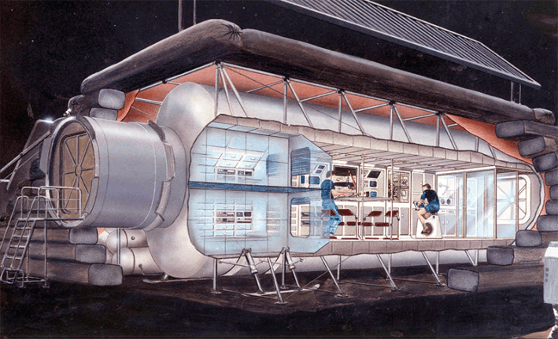
The Moon Bases of Yesteryear
The idea of lunar habitation is having a moment. But United States government officials have been thinking about the possibility of erecting a moon base for longer than you might s...
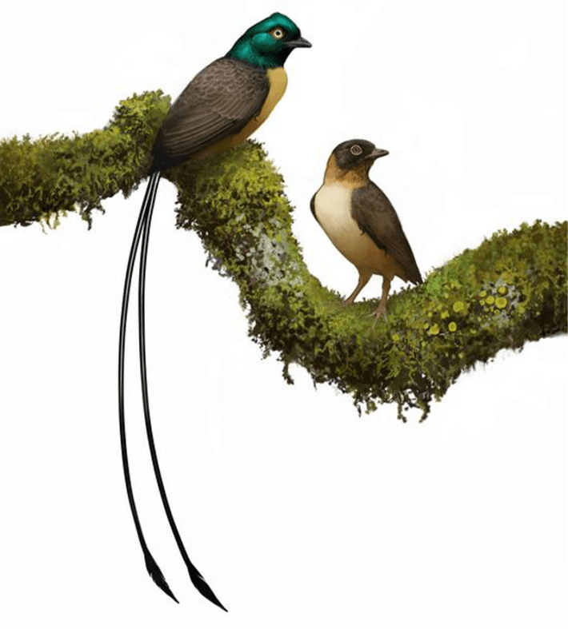
This “Feathered Dragon” Shook Its Tail Feathers in the Time of Dinosaurs
When a male king bird-of-paradise seeks a mate, it puts onan elaborate show. Perching on a branch, it puffs out its white chest, stretches its wings, and sways two spindly tail fea...

When a Century-Long Rodent Invasion Ends
What happens when rats are introduced to an island?

Watch Immune System Cells Gobble Up Cancer Cells
What makes cancer an especially insidious disease is its ability to evade your own body’s defenses. Tumors have a host of tools at their disposal to hide from, suppress, and even m...

Can Cells from a Sea Cucumber Live Forever?
There was a time when living cells were thought to be innately immortal. Given the right conditions—bathing in a sterile, nutrient rich solution—cells could be kept alive and divid...

Can a New Drug Combo Prevent Death by Suicide?
If you or someone you know is in crisis, confidential support is available by phone, text or chat at 988, or the Crisis Text Line (text TALK to 741741).

Why Do More Women Than Men Develop Alzheimer’s?
Alzheimer’s affects about7 million seniorsin the United States—a number that keeps rising. Almost two-thirds of the Alzheimer’s cases are in women, a bias that’s puzzled researcher...

The Supernova That Sparked the Original Scientific Revolution
An eccentric Renaissance astronomer described an unusual observation in the sky using the most uneccentric term. A “nova stella” (Latin for “new star”) is what Danish nobleman Tych...

The Surprising Calm at the Center of Wasp Nest’s Violent Power Struggle
When you play the game of thrones, you win or you die,” Cersei Lannister told Ned Stark after the death of her husband, the king. “There is no middle ground.” But according to new ...

This Toothless, Beaked Crocodile Ancestor Walked on Two Legs
During the Triassic period there was an explosion of animal diversity. A cataclysmic extinction event at the end of the Permian period had wiped out most species, leaving plenty of...

Schrödinger’s Kittens Are All Grown Up
In 1935, Erwin Schrödinger had had enough.

This Pope Weighed in on Modern Tech as Media Forever Changed
Almost 70 years before Pope Leo XIV weighed in on artificial intelligencethis week, in his first encyclical, one of his predecessors wrote a papal letter that similarly warned of t...
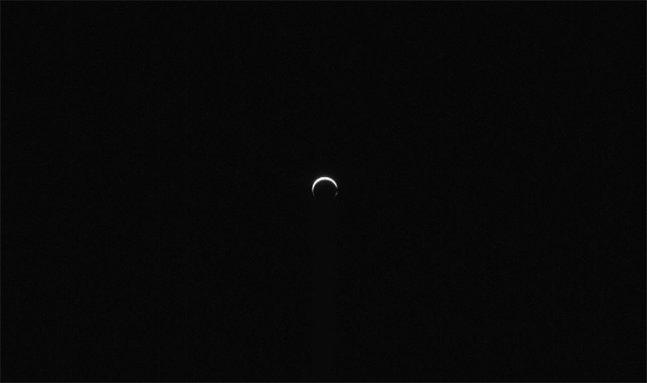
See the Stunning Images Psyche Beamed Back From Mars
Psyche, a spacecraft launched in 2023 to survey an asteroid of the same name, recently beamed back some amazing pictures of Mars. Of course, sightseeing wasn’t the only reason for ...

New “Happy-Face” Spider Species Discovered
What creature is smaller than a grain of rice but always has a smile?

Poop Cruises Are No Laughing Matter
Hantavirus is a zoonotic disease that has been hitherto unknown to the American public, with the potential exception of the1993 Four Corners outbreak. Only a few thousand cases of ...

How to Tame AI’s Voracious Appetite for Energy
This articleoriginally appeared inKnowable Magazine.
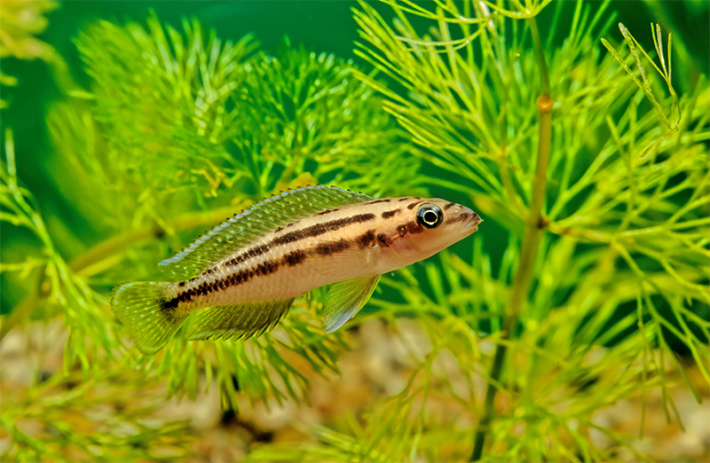
They Call It Stupid Hot For a Reason
This articleoriginally appeared inKnowable Magazine.
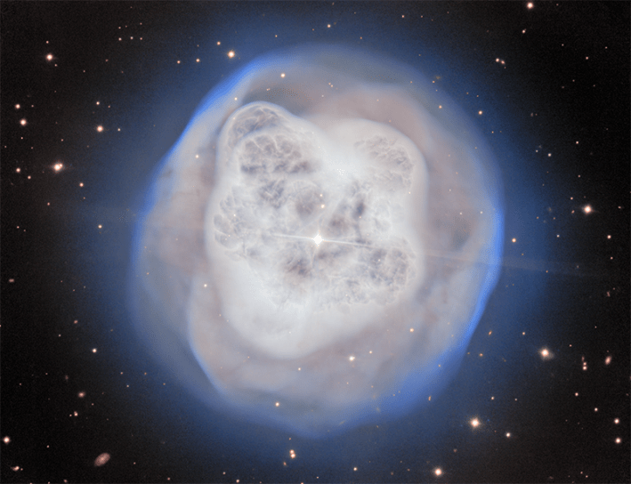
Gaze into the Stunning Crystal Ball Nebula
Crystal balls are typically used to gaze into the future, but this image of the Crystal Ball Nebula is actually a vision of the past. Captured by the Gemini North telescope located...
Finally a Commencement Speech That Gets AI Right
AI has been having a pretty rough go of it on this year’s college commencement circuit. Speakers at graduation ceremonies across the land have been met withchoruses of booswhen the...

Using Brain Waves to Translate Thoughts into Pictures
What if a machine could read your dreams for you, decode the hypnotic visions of a psychedelic trip, or even give shape to the thoughts of a patient locked in a coma or on their de...

How Your Brain Decides What Matters
This articleoriginally appeared inKnowable Magazine.

These Tiny Flies Survive, Even Thrive on Snow
As we head into the heat of summer in temperate regions of the world, many organisms are coming out of winter dormancy to become active again. Then there are those organisms that l...

There’s a New T. Rex in Town-and It Swims
Eighty million years ago, North America was split in half by a vast shallow sea known as the Western Interior Seaway. It was home to prehistoric sharks, colossal crocodiles, and th...

After Two Centuries of Mystery, This Is How Tobacco Plants Make Nicotine
Humans have been cultivating tobaccosincemammoths roamed the Earth. Fast forward several millennia and Europeans colonizing the Americas turned it into such a massive cash crop, th...

Are Humanoid Robots the End of Human Work?
Almost a decade ago,The New Yorkerran acovershowing a busy city street crowded by human-shaped robots and other whirring creatures. The drab machines amble down a sidewalk drinking...

These Odd Birds Flirt by Clapping in the Middle of the Night
If you’ve ever cracked a birding book, you’ll know it’s filled with onomatopoetic descriptions of bird songs (chirrups, coos, squawks, and so on). What you might not find in those ...

The Most Precarious Day in the Universe
W. H. Auden wandered into the Dizzy Club in midtown Manhattan and sat down at the bar. Amid jazz rhythms and stiff drinks, the poet tried to find balance in a world that, from a fa...

The Ancient Roots of “Sewer Socialism”
While the ancient Egyptians were busy building pyramids, the Harappans of the Indus River Civilization were becoming master urban planners. The cities they constructed, starting ar...

When One Dead Whale Becomes a Decades-Long Buffet
When they’re alive, whales comprise huge chunks of biomass thatmove thousands of miles through the world’s oceans. When they’re dead, their impressive biomass sinks to the ocean fl...

New Species of Deadly Box Jellyfish Discovered
Box jellyfish might look harmless, but they pack a powerful venomous sting that can cause excruciating pain, and even death. While masses of these “sea wasps” can threaten swimmers...

Illustrating the Precarious
We asked artist andNautiluscontributor Katherine Streeterto illustrate the cover for our new print edition,The Precarious Issue. We told her the issue teetered on stories that unde...

These World-Record Humpbacks Crossed 9,000 Miles of Open Ocean
Humpback whales (Megaptera novaeangliae) are renowned long-distance migrators. Both females and males travel seasonally from higher latitude summer feeding areas to lower latitude ...

Why These Bees May Be Killing the Plants They Feed From
In 2010, Australia was invaded. Myrtle rust, a fungal blight characterized by its yellow-brown spores, descended on the island continent and quickly spread, threatening up to 17 pe...

A Look Back at Hubble’s Most Breathtaking Images
Thirty-six years ago this month, NASA released the first images from the newly launched Hubble Space Telescope, a cluster of stars located in the Carina constellation. A side-by-si...

Commencement Boos for AI Platitudes
May is a joyous time of year at university campuses across the United States. The flowers are blooming, the birds are chirping, and newly fledged graduates are assembling to celebr...

How to Predict an Earthquake
We know from dense worldwide seismometer networks that the plate tectonic engine, the primary driver of earthquakes, has not meaningfully changed over our lifetime. But for geologi...

We Finally Have the Answer for T. Rex’s Tiny Arms
Tyrannosaurus rex may have been a fearsome predator, but there’s no getting around how ridiculous its tiny arms looked. Researchpublishedtoday inProceedings of the Royal Society B ...
The Science of Cities. 10 Books You Must Read
Every week an additional 2 million people, by way of migration and birth, join the urban population on Earth. By the end of the first half of this century, over 6 billion of us wil...

All Shook UpThe Earthquake Illusion
The ground began to shake beneath Mineral, Virginia, on a sultry August afternoon in 2011. Dense bedrock carried shockwaves unusually far from the rolling Appalachian foothills, ac...

NASA Astronaut Films Spectacular Fireball Over Earth
TheInternational Space Stationhas been whizzing around Earth for almost three decades, and for half that time it didn’t have a lot of windows. That changed when theCupolamodule was...

These Three Newly Discovered Mammals Survived the Extinction Event That Wiped Out the Dinosaurs
Around 66 million years ago, fallout from acataclysmic asteroid impactended the reign of dinosaurs on Earth. Mammals, then relative newcomers on the evolutionary scene, rapidly div...

Why Did Humans Evolve to Favor One Hand Over the Other?
If you’re reading this right now, odds are you’re right-handed. In fact, 90 percent of people across all human cultures prefer using their right hand. Strangely, handedness is a un...

Neanderthals Lounged on the Beach Slurping Shellfish
Club Náutico El Chalet is a hidden gem” reads thewebsitefor a restaurant located on Spain’s Mediterranean coast. “This restaurant offers stunning views of Cartagena Bay, creating a...

Mummified Peruvian Hairless Dogs Shed Light on Ancient Companionship
Hairless dogs get a bad rap. The Chinese crested, for example, has the dubious honor of being a perennial favorite inugly dog competitions. The Peruvian hairless dog wasregardedby ...

Other Animals Share Human Mothers’ Pain
Even in this era of advanced maternal healthcare, human birth is a difficult business, with long delivery times and numerous potential complications. Evolutionary biologists have b...

Nobody Could Save Timmy the Whale
Timmy the whale is dead. Over the weekend the juvenile humpback wasfoundoff the northern tip of Denmark, close to where he was released just two weeks ago. A barge had dragged him ...

How Did We Miss the Asteroid That Will Narrowly Miss Us?
An asteroid the size of a blue whale will pass within about 56,500 miles of Earth sometime this evening. That, by itself, is not terribly remarkable. It’s close, for sure. About 24...

We Got Lucky as a Species
Gorham’s Cave forms a magnificent arch on the eastern side of the Rock of Gibraltar, at the southern tip of the Iberian Peninsula. Backed by a sheer rock face that looms higher tha...

There’s Something Living in Fog
In the 2007 movieThe Mist(based on a Stephen King novella), a mysterious fog creeps over a small town in Maine, bringing all manner of Lovecraftian monsters with it. As the locals ...
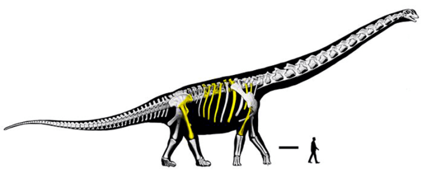
Meet “The Last Titan,” Southeast Asia’s Most Massive Dinosaur
Around 100 million years ago, a long-necked giant stalked the warm, subtropical grasslands of prehistoric Thailand—and it may have been the last of its kind. An international team ...

What’s Black and White and Reveals Historic Porpoise Distributions?
These days, there are many ways to survey a population of marine animals—by SCUBA, by boat, by drone, and by satellite. But sometimes, the most old-fashioned way still does the tri...

The Unbelievable Strength of the Testosterone Myth
My family is full of risk-takers. Or so goes the family lore. My father, who started riding motorcycles when he was 12, almost died zooming around a racetrack in his 40s. For many ...
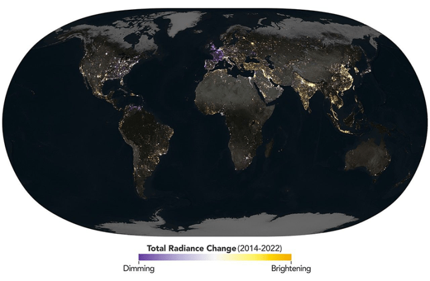
New NASA Graphic Captures Human Activity at Night
When you go to sleep at night, NASA is watching. High above the Earth, satellites monitor artificial light sources gleaming in the dark as part of NASA’sBlack Marble project. By co...

Why Penguins Don’t Fly
Sixty-six million years ago, flocks of aquatic birds living on the coast of New Zealand witnessed one of the most momentous events in the history of our planet. Halfway around the ...

Ancient Teeth Hint at Homo Erectus-Denisovan Interbreeding
Of all the early hominins in the human family tree,Homo erectusmight be the first that we recognized as “one of us.” That’s because, as the species name suggests,Homo erectuswas th...

Garlic: Culinary Staple, Birth Control for Flies
While garlic is a staple in many cuisines, it has a pungent aroma that can make it a spoiler on a date, such as whenthis woman’sboyfriend “smelled so garlicky [she] couldn’t stand ...
Stop Demonizing the Birdwatchers Who Contracted Hantavirus
Dutch ornithologist Leo Schilperoord is suspected to be patient zero for the hantavirus outbreak on a cruise ship that has been making global headlines for the past couple of weeks...

Newly Discovered Asteroid to Make Close Pass by Earth
An asteroid is going to whiz by Earth on Monday evening, but don’t worry, it’s not going to hit us. Astronomers say it’s somewhere in the ballpark of 50 to 100 feet wide, according...

Your Brain Can Learn Things When You’re Unconscious
Where does the mind go when we lose consciousness?

What Lamarck’s Giraffe Got Right
French naturalist Jean-Baptiste Lamarck proposed the first evolutionary theory of life in the early 1800s. But for centuries, he was mocked and undercut by those who came after him...

Coral Reefs Are at a Tipping Point
When I slide off the tiny panga, the water feels warmer than the air. It is late January in the Caribbean, and I am about to snorkel around a patch of reef immediately off the coas...

The Genetic Secrets of the Fruit Fly That Hunts Its Prey
In most fruit fly species, females lay eggs on rotting fruit, which hatch into tiny larvae inside the fruit and transform into the little telltale flies. But in apaperpublished rec...

Astronomers Capture Cosmic Web in Staggering Detail
The universe is unfathomably vast, but it’s not just empty space. There’s a superstructure spreading throughout it, composed of immense dark matter filaments and sheets spanning hu...

Can Selective Breeding Save Bulldogs from Their Breathing Problems?
What’s the most popular dog breed in America?

How Neanderthals Mastered Dentistry
If you’ve ever had the misfortune of getting a cavity drilled, you know it’s not an experience you subject yourself to on a whim. That’s why paleontologists were surprised to find ...

Why Do Regular Cannabis Users Tend to Weigh Less?
There’s a paradox surrounding regular cannabis use. Despite marijuana’s well-known appetite-stimulating effects, people who use it regularly tend to weigh less and have a reduced r...

Perseverance Snaps a Selfie on Mars
NASA’s Perseverance rover is busy analyzing the red planet’s geochemistry, but that doesn’t mean it doesn’t have time for a quick selfie. NASA recently published this image capture...

Thousands of Scientists Sign Letter to Combat Science Board’s Firing
The scientific community is imploring the United States Congress to intercede in the Trump administration’s war on science. The latest salvo in that war came in April, with Donald ...

Stare Into the Heart of an Ancient Iceberg
Nature photographer Jon McCormack notices patterns. He’s made a career out of noticing and documenting the patterns that flash across his field of view as he traverses the Earth, f...

New Fathers Are Dying, and We Don’t Know Why
Chicago pediatrician Craig Garfield noticed a few years ago that mothers in the neonatal unit where he works were often dealing with the sudden death of a partner, whether from a c...

A Powerful New Tool to Find Alien Life
Fatty acidson Mars! Amino acidson asteroids! Complex carbon chainsin interstellar clouds!

How Trump’s Science Cuts Threaten National Security
On April 28, President Donald Trump fired all 22 members of the National Science Board (NSB), the body that oversees the National Science Foundation, a 76-year-old research agency ...

Is This Why Science Advances One Funeral at a Time?
For centuries, science has been a top-heavy enterprise. A vanishingly small number of field-leading experts has the propensity to shape knowledge. They who win the Nobels. They who...

Doting Duck-Billed Dinosaur Parents Fed Their Young Like Birds
Animals can be doting parents, too—even dinosaurs. A new studypublishedin the journalPalaeogeography, Palaeoclimatology, Palaeoecologyshows just how far hadrosaur parents of the ge...

The Healing Powers of an Accidentally Caught Jellyfish
Every commercial fishing operation grapples with the incidental capture of animals other than the target species. Whether it’ssea turtles caught in shrimp trawlsorsalmon trapped in...

These Small Ants Act Like Cleaner Fish
Humans aren’t alone in their penchant for warfare. Ants have been known to launch full-pitched battles against competing colonies, and even abscond with slaves to serve their queen...

“Iceland Is Going to Erupt Again Very Soon”
In August 2024, I was driving with my children in Southwest Iceland toward the Blue Lagoon, a cluster of hot geothermal pools in the Reykjanes Peninsula, when the highway suddenly ...

The Tonga Volcano Cleaned Up After Itself
When the underwater Hunga Tonga-Hunga Haʻapai volcano off the coast of Tonga violently erupted in January of 2022, the force of the explosion was more powerful than the largest nuc...
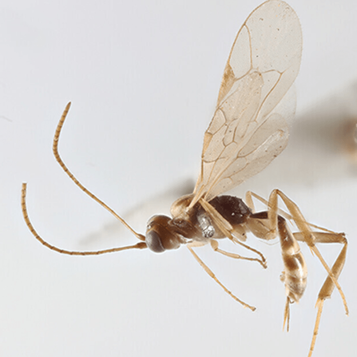
A Century of David Attenborough
In the minds of people like me, who were raised on nature documentaries, it’s as if Sir David Attenborough were the voice of nature itself. His inimitable near-whisper narrated muc...

Where Does Novelty Come From?
Evolutionary novelties abound,” writes paleobiologist Douglas Erwin in the introduction to his new bookTheOrigins of the New. Take grasses. They’ve carpeted the continents in undul...
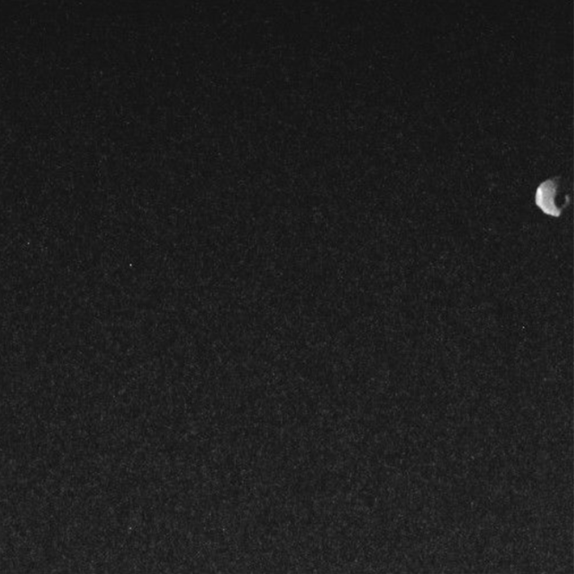
How Juno Can Still Beam Back Breathtaking Images of Jupiter
Juno reached Jupiter almost 10 years ago, and it’s been studying the gas giant and its many moons ever since. In fact, just a few days ago, Juno zoomed close (around 3,000 miles) t...

What I’m Watching This Weekend - Nautilus
In the tradition ofMy Octopus Teacher, there seems to have wriggled into existence in the past few years a new genre of film designed to engender an enhanced connection to nature i...

New Long-Necked Dinosaur Unearthed in Brazil Has European Roots
A team of paleontologists monitoring construction of a rail terminal in the Brazilian state of Maranhão made a surprising discovery circa 2021—a massive new species of long-necked ...
Hubble Captures Traveling Galaxy in Stunning Detail
The Hubble Space Telescope recently captured an image of a roaming galaxy 50 million light-years away called NGC 3137, but it’s not traveling alone. NGC 3137 is part of a galactic ...

How to Build a Trustworthy Robot
Paro the seal has large dark eyes, long whiskers, and soft antibacterial fur. It’s a robot, but for the elderly dementia patients who use it, it’s more like a cuddly, attentive nur...

Watch NASA’s Curiosity Rover Unstick Itself From a Rock
NASA’s Curiosity rover has been trundling around Mars since it touched down on the surface almost 14 years ago. The car-sized, nuclear-powered robot’s mission is exploring the geol...

These Whales Are Screaming in the Strait of Gibraltar
More than a century ago, the “Lombard effect” was coined to describe how humans raise their voices to be heard over loud noises. Now, ocean waters have become so noisy as to warran...

Most Bird Wings Aren’t Optimized for Flight
We like to think of natural selection as a ruthlessly efficient engineer, shaping organisms into their ideal forms over millions of years of evolution. But reality is a lot messier...

Does Sexual Attraction Cloud Our Rejection Detection?
What inspires people to throw caution to the wind and pursue a romantic relationship without any clear green flag from the object of their desire? Unwavering confidence? A steadfas...

Mapping the Illegal Wildlife Trade Using Pangolin DNA
It’s hard to believe that pangolins are among the most common animals targeted for illegal wildlife trade. Theseheavily armored creatures—the only living mammals in the order Pholi...

How Potatoes Shaped the Genes of the First People to Grow Them
If you chew on a saltine for long enough, it starts to taste sweet. That’s because the amylase enzyme in your saliva breaks down the complex starch into simple sugars. How fast thi...

These Beetles Might Be Flying Ubers for Worms
Scientists examining rotting fruit in German orchards in 2025 noticed something odd—writhing masses of hundreds of tiny nematodes, assembling themselves into living “towers” that s...

The Mysterious Hantavirus Outbreak That Put the Virus on the Western Map
As a cruise ship holding nearly 150 people and serving as the scene of a deadly outbreak of hantavirus floats in limbo off the coast of Africa, global headlines keep constant tabs ...

What Your Dream Life Says About You
What does a person’s dream life tell us about their waking life?

Giant Squid Discovered Lurking off the Australian Coast
There’s a lot we don’t know about what lives beneath the oceans, and studying life there can prove difficult, especially at extreme depths. Many species can be shy, quick-swimmers,...

The Best of NASA’s Newly Released Photos From the Artemis II Mission
The Artemis II astronauts Reid Wiseman, Victor Glover, Christina Koch, and Jeremy Hansen snapped countless photos on their 10-day mission to the moon, and NASA just deposited 12,00...

What Happens in the Brain When “Psychedelic Virgins” Trip for the First Time
Psychedelics are getting a renewed boost of interest lately. The FDA recentlyannouncedthey were fast-tracking research investigating psilocybin, the compound that gives magic mushr...

Fruit Flies: Masters of Hypergravity
There’s a reason that astronauts, fighter pilots, and race-car drivers undergo extensive training to handle the g-forces they’ll experience on the job—such asthis ESA astronautbein...

AI Music vs. My Parents
My 81-year-old dad recently sat on his Midwestern porch on a cool spring evening, and excitedly showed my wife a song that he loved. As the bluesy, soulful tune poured from his pho...

The First Male Neanderthal Genome
No other archaic human group captures our imaginations like the Neanderthals. While modern genetic techniques have taught us a lot about these mysterious cousins (including that we...

10 Books We’re Excited About This May
Can quantum physics explain who you are? What’s wrong with having an AI bestie? What secrets does a terraformed colony on a distant exoplanet hold? These are some of the questions ...

There’s A Dwarf Galaxy Hidden Inside the Milky Way
The Milky Way evolved billions and billions of years ago when clouds of cosmic matter coalesced into a spheroid halo that then collapsed into a spinning disk.
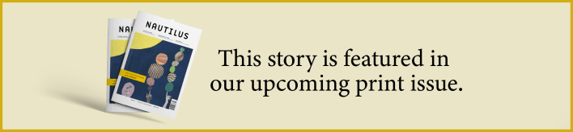
For Every Patient Their Own Drug
The first time Stan Crooke helped treat a terminal cancer patient was in 1969—or maybe 1970. The 81-year-old physician and pioneering drug designer can’t quite remember the year. H...

Nature’s Overlooked Role in National Security
In the mid 20th century, a dispute broke out between Britain and Iceland over fish. These were the so-called Cod Wars. Icelandic cod fisheries had been devastated by overfishing, s...

A Tiny Rock in the Outer Solar System Has an Atmosphere-But It Shouldn’t
For decades, “My very excited mother just served us nine pizzas” functioned as a handy mnemonic for anyone trying to remember the order of the planets. That is, until Pluto was unc...
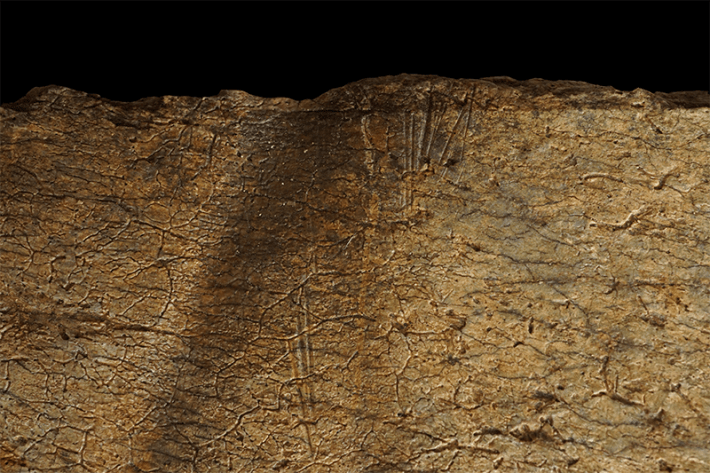
Our Human Ancestors Dined on Takeout
It took a lot of energy forHomo sapiensto evolve our massive brains, and we might not have been able to do so without meat. While prehistoric humans had the necessary cognitive abi...

Uncovering Hidden Martian Glaciers With Drones
If humanity is going to have any kind of future on Mars, we’re going to need water. The good news is that Mars has plenty of it. The bad news is that it’s frozen—and much of it is ...

Here’s Why Dreams During Naps Are So Weird
Thomas Edison used to break through creative blocks by napping. The inventor would settle in with a heavy steel ball in one hand, doze off, and awaken when it fell, just after dipp...

What Hurt This Jurassic Sea Monster?
The oceans of the Early Jurassic period wouldn’t have been entirely alien to those of us living today. They were home to some familiar faces, like sharks, as well as plenty of biza...

Farewell to a Giant of Botany
The Missouri Botanical Garden is a gem in the heart of St. Louis. Covering 79 acres, MOBOT opened its gates in 1859. But it wasn’t until more than a century later, in 1971, that it...

How Does Your Brain Know a Cat Is a Cat?
What is a cat, and how do we know when we’ve encountered one?
April 2026

Vaccine Hesitancy in an Era of Misinformation
For the past 18 months, the vaccine landscape in the United States has been changing dramatically. And many changes are coming from the top. The U.S. Centers for Disease Control an...

When a Species’ Survival Hinges on Every Single Embryo
Since the last Northern white rhino male died in 2018, the species has been considered functionally extinct. Only two white rhino females remain on Earth, Najin and her daughter Fa...

The Rapid Evolution of Giant Daisies
When Charles Darwin’s famous finches colonized the Galápagos Islands, they adapted to their new homes by developing beaks singularly suited to feed on the unique nuts, fruits, and ...

The Environmental Havoc a Pet Goldfish Can Cause
Having a pet goldfish is all fun and games until you release it into the wild. There, the species (Carassius auratus) becomes an invasive pest, growing as large as18 inchesand livi...

How Seals Detox After a Long Deep Dive
Diving is an incredibly demanding workout for seals, and they’ve developed a novel cooldown method. After bouts of deep dives foraging for fish to snack on, seals like to rest on t...

The Mix-up at the Heart of the Conversion Therapy Ruling
Garrard Conley’s memoir,Boy Erased, which was turned into a popular film in 2018 starring Nicole Kidman and Russell Crowe, chronicles his experience growing up in a conservative Ar...

A Treatment for Pre-Eclampsia Could Be in Sight
Pre-eclampsia is a particularly pernicious pregnancy complication. It’s more common in first-time mothers, and the symptoms—high blood pressure, headaches, nausea—are relatively fr...

Chernobyl, 40 Years Later
This week marks four decades since the meltdown of the Chernobyl nuclear reactor in what was then the Soviet Union and is now the Ukraine. The accident happened on April 26, 1986 a...

New Frog Species Gets Olympian Name
Some regions of the Cordillera del Cóndor mountains in southern Ecuador are so remote that they’re considered a “lost world of amphibian diversity.” In fact, that’s how a species o...

Birds Are More Afraid of Women Than of Men
An international team of researchers studying urban birds in Europe has uncovered a mystery—such birds seem to fear women more than men. Their study,publishedinPeople and Nature, f...

Scorpions Wield Metal-Tipped Weapons
Humans started reinforcing the tips of their spears with metal several thousands years ago, but scorpions beat them to it by hundreds of millions of years. Like many arthropods, a ...

The Things That Fuel Our Dreams
Trying to fully describe a dream to another person is often an exercise in futility. Dreams, by their very nature, are intensely personal experiences. While common themes crop up, ...

Our Eyes Originated in a 600-Million-Year-Old Cyclops
At the root of our family tree is a 600-million-year-old cyclops.

The Predictive Powers of Bear Poop
When monitoring environmental health, scientists look to biodiversity, air and water quality, and the absence of pollution. Now, they’re also pioneering the use of bear poop as a k...

Kon-Tiki Set Sail 79 Years Ago Today
On this day in 1947, zoologist and ethnographer Thor Heyerdahl set out, with a hearty crew on a balsa-log raft from the Pacific coast of Peru, bound for Polynesia. Their transpacif...

Where Brains Process Smell
At a glance, the inner workings of mammalian anatomy can appear a little chaotic. We’ve got intertwining blood vessels, nerves fanning out haphazardly, and a series of “design flaw...

Why Cooperation Falls Apart Over Time
There’s always that one person in a group project who doesn’t want to pull their own weight. Even though everyone’s grade—including their own—hinges on cooperation, they’re content...

Trump’s War on Science Continues
On Friday (April 24), President Donald Trump fired all 22 members of the apolitical body that advises the executive and legislative branches on the nation’s scientific enterprise a...

What Happens When Giants Disappear from Ecosystems?
Between 50,000 and 10,000 years ago, life on Earth experienced a drastic change—the extinction of several megafaunal mammal species. In the Americas, these massive mammals include ...

The Science of Spooky Sounds
Rodney Schmaltz considers himself a pseudoscience guy. He studies “why people believe weird stuff,” he tells me. One of those weird things is why some people believe that houses ar...

The Problem with Psychedelic Research
President Trump recently signed anexecutive orderto accelerate approval of psychedelic drugs for mental-health conditions, particularly for veterans suffering from PTSD and depress...

When “Extinct” Volcanoes Reawaken
It’s hard to get more dead than extinct. Extinct things are considered permanently annihilated: no second chances, no descendants, no return. Except that, it turns out extinct volc...

This New Model May Explain Why You’re Not a Twin
Plenty of mammals give birth to a litter of offspring, but humans are typically limited to just one per pregnancy. That’s mostly because women typically only release a single egg c...

What Mummies Read Before a Long Nap
Homer’sIliadis the closest thing the ancient world had to a bestseller. Along with its companion epic poem, theOdyssey, the texts—which were likely distillations of older oral trad...

Why Volcanoes Sometimes Shoot Out Lightning
When Mount Vesuvius erupted in 79 A.D., Pliny the Younger described the cataclysmic eventwriting, “There was a most intense darkness rendered more appalling by the fitful gleam of ...

These Bees Change Color with the Weather
Many animals are color-change masters, shifting their appearance to hide from predators, thermoregulate, or advertise their wares to potential mates. Arctic mammals shed brown coat...

The New Pitviper Species Hidden in China’s Panda Park
China’s Giant Panda National Park is home to more than just its namesake. The park, which is the size of Massachusetts, consists of dense forests where red pandas, snow leopards, a...

Plants Can Hear the Sound of Falling Rain
Deep inside the inner ear are tiny calcium carbonate crystals called otoliths that swish around in fluid-filled sacs when we move, helping our brains detect acceleration. Plants ha...

The Australian Rocks That House the Oldest Life-Forms on Earth
Shark Bay in Australia is famous for all kinds of reasons. As the meeting point of climatic regions and plant ecotypes, it’s exceptionally diverse and home to endangered dugong—not...

Massive Intelligent Octopuses Once Stalked the Primordial Oceans
Seafarers of antiquity may have been fearful of massive tentacled leviathans rising from the deep to capsize their ships. New research suggests they were only off by around 100 mil...

Could Neanderthals Speak Like Us?
Chimpanzees and humans share 98 percent of their genomes, so what’s in that 2 percent that makes us uniquely human? According to a new studypublishedinScience Advances, a tiny port...

(Almost) A Eulogy for Voyager
For almost 49 years, Voyager 1 has been speeding away from Earth, beaming data back to NASA researchers, skirting the gravitational pulls of planets and moons, and carrying a paylo...

The Ancient Roots of the Crab Walk
Nature abhors a vacuum, but it loves a crab. The crab’s wide, flat body plan has independently evolved multiple times in decapod lineages in a process called “carcinization” (which...

The Origins of Uranus’ Distant Rings Hint at a Hidden Moon
The rings of Uranus have fascinated astronomers since they were discovered in 1977, but there’s a lot we still don’t know about them. In 1986, Voyager 2 conducted the only flyby of...

Earth Day Started with an Oil Spill
On a January morning in 1969 a black cloud spread through the Santa Barbara Channel, off the coast of Southern California. The plume of crude oil spewed from Union Oil Platform A, ...
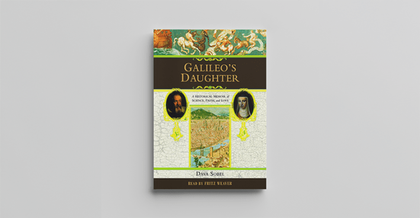
The Nautilus Reading List of Science Biographies
Is time travel possible? You can have heady fundelving into the debatethat echoes from the writings of Kurt Godel, Stephen Hawking, and Albert Einstein. The answer, by the way, is ...

The Most Soothing Kinds of Nature Sounds
For all the recordings of nature marketed as relaxation and sleep aids, not all “nature sounds” are necessarily soothing. You’re not, for example, likely to snooze while listening ...

Why These Monkeys Are Eating Fistfuls of Dirt
Amazon parrots have a rather odd habit. They like to congregate on riverbanks and take bites out of the soil. That’s because it’s rich in kaolin, a kind of clay with properties tha...

What a Parrot Means When It Says Your Name
Humans aren’t the only animals that call each other by names.Dolphinsandelephantsboth use specific vocalizations to refer to individuals of the same species, but what about parrots...

The Peace That an Eclipse Brings
Ilike many other people living in and visiting the United States in 2024, stood still and gawked at the sky in amazement just before 2 p.m., local time, on April 8. For about 10 mi...

Mars Curiosity Rover Makes a Big Find on the Red Planet
With all the excitement over sending scientists back to the moon, it’s easy to forget we’ve already got a pair of talented chemists on Mars: the Curiosity and Perseverance rovers. ...

Rome Was Built Today
The year is 753 B.C. Two twin boys, Romulus and Remus, have grown into healthy adults. The men quarreled over property rights, and Romulus killed his brother for trespassing. On Ap...
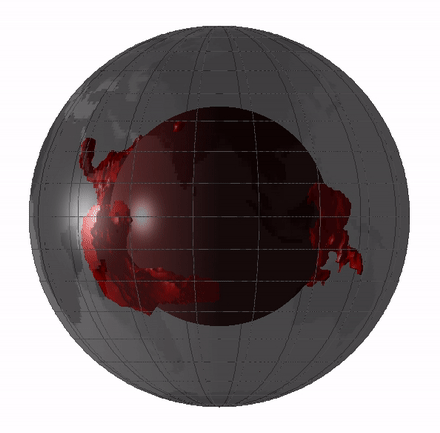
The Mystery of the Giant Blobs at the Center of the Earth
There’s a mystery hidden deep beneath the surface of the Earth. In the 1980s, scientists discovered two vast “blobs” in the lower mantle surrounding the core that had some strange ...

Mushrooms Stole a Trick From Bacteria. It Could Help Us Control the Weather
Mushrooms typically pop up after a rainstorm, but what if they could cause them, as well? According to researchrecently publishedinScience Advances, some fungi might be able to do ...

A Brief History of the Bizarre-Looking Anglerfish
With transparent dagger-like teeth lining its gaping mouth, the black seadevil is one of the most terrifying looking creatures on Earth—and that’s before you take into account the ...

Cocaine Fish: How Salmon Behave When Amped Up on Coke
As rivers and lakes are contaminated with chemicals that wastewater treatment plants are ill-equipped to remove, cocaine is increasingly turning up in fish and other aquatic organi...

The Ghost of Microgravity in Astronauts' Brains
It’s pretty remarkable that human beings are able to function in zero gravity. After all, at every point in the evolutionary history of life on Earth, gravity was present, so it’s ...
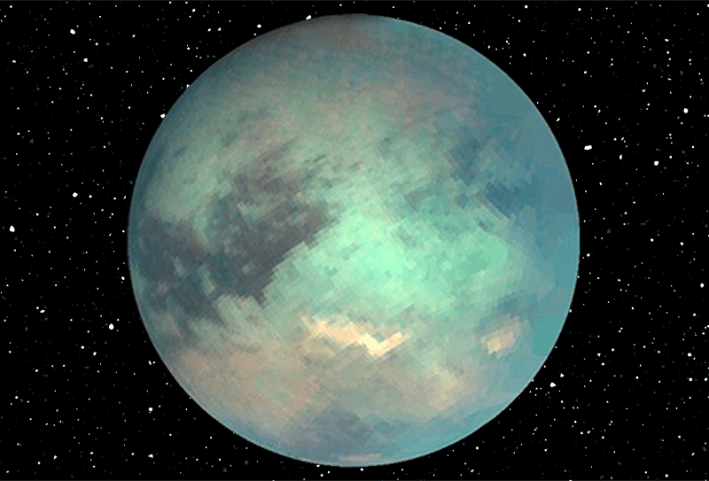
What It Would Be Like to Surf Five Distant Planets
The waves on Earth are pretty crowded these days. Surfing has gotten so popular that shredding the gnar has almost become a contact sport in many parts of the world. It takes a lot...

Defending Our Consciousness Against the Algorithms
This story is featured in our upcoming print issue—subscribers get full access both in print and online.Join now.

Humans Evolving, One Way or Another
Human evolution is in the news again. This week, an international team of researchers led by Harvard University ancient DNA guru David Reichpublisheda paper inNaturethat suggested ...

An Ancient Mummy’s Tooth Could Rewrite Script of Scarlet Fever in the New World
When European explorers came to the New World they brought horses, cattle, guns, and loads of diseases. With no defense against them, Indigenous populations were ravaged by smallpo...

Check Out the Largest 3-D Map of the Universe
For the past five years, 5,000 robotic fiber-optic eyes housed in a mountaintop observatory have been tirelessly scanning the night sky. They belong to the Dark Energy Spectroscopi...

The New Science of the Near-Death Experience
In the 1960s, while filmingCleopatra, the actress Elizabeth Taylor developed such a severe case of pneumonia that she fell into a coma and was pronounced dead by doctors, according...

Arachnophobes Beware: Tarantulas Are Way Smarter Than You Think
In horror movies involving tarantulas, like the classicArachnophobia, the spiders have no trouble locating their victims. It’s true-to-life as well: Under laboratory conditions, ta...

How Lonely Walks in Nature Can Make You Feel Less Alone
If you’ve spent enough time on social media, you’ve probably seen someone told to “touch grass.” Usually leveled at the terminally online, this retort is a humorously insulting rem...

Why Middle-Aged Americans Are in Crisis
There’s plenty of research on children and young adults, and plenty of research on senior citizens, but what about middle-aged people? It can sometimes feel like they’re the forgot...

Largest Known Collection of Bees Discovered Living in a Cemetery
A massive assemblage of bees were found beneath a cemetery in Ithaca, New York, by researchers at Cornell University. The discovery was something of an accident. One spring day in ...

Oldest Reptile Mummy Sheds Light on the Ancient Art of Breathing
For us to exist on Earth today, vertebrate animals had to transition from their aquatic world to a lifestyle on land, which is thought to have happened about 390 to 365 million yea...

Was the Grand Canyon Born from an Ancient Lake Spillover?
How old is the Grand Canyon?” is a surprisingly complicated question. After all, canyons don’t spring into existence, they’re slowly formed over millions of years, and researchindi...

The Coming Psychedelic Holiday
Humans had been ingesting various natural hallucinogens and experiencing their mind-bending effects for millennia before 1943. But it wasn’t until spring that year that a chemist w...

Why Feeling Lonely Increases Your Risk for Heart Valve Disease
There’s aloneliness epidemicgoing on out there. Brought into stark relief by the fallout from the COVID-19 pandemic, researchers have renewed their focus on how feelings of social ...

Can the Brain Survive Cryonic Sleep?
In 1999, Swedish radiologist Anna Bågenholm fell headfirst into a frozen Norwegian stream while skiing. She was trapped there for over an hour. Her body temperature dropped to a re...

Why Are Gray Whales Dying in the San Francisco Bay?
Gray whales used to have it easier. They summered in the Arctic, fattening their massive bodies with abundant krill that favor icy, deep waters. As winter approached, they headed s...

The Genetic Roots of Extreme Morning Sickness
There’s morning sickness and then there’s hyperemesis gravidarum (HG). Affecting around 2 percent of women, this heinous pregnancy complication causes extreme nausea and vomiting t...

The Birth of Genius
You could call Leonardo da Vinci a lot of things: genius, polymath, or master. Born on this day in 1452, he was—in time, geography, and intellect—the quintessential Renaissance man...

Watch These Birds Use Their Tongues to Suck Up Nectar
New researchpublishedinCurrent Biologyreveals they use their long tongues as a kind of makeshift straw to hoover up nectar in flowers—the first vertebrates known to do so.
The Bra-and-Girdle Maker That Fashioned the Impossible for NASA
In 1966, when seamstresses at theInternational Latex Corporationarrived at its new Apollo Suit shopfloor in Frederica, Delaware, they were essentially “taught to sew again from scr...

Astronauts as Influencers
Moon exploration has always made for good viewing. On July 20, 1969, somewhere between600 millionand650 millionpeople around the globe tuned in to watch NASA Apollo 11 astronauts N...

A Rare Cloud Jaguar Photographed Slinking Through the Honduran Forest
Like other big cats on Earth, jaguars are getting squeezed out by humans. Assessed as Near Threatened on theIUCN Red List, jaguars (Panthera onca) are gone from almost half their h...

Why You Should Let Your Biological Clock Schedule Workouts
When’s the best time to work out? Is it in the morning, to jump-start your day, or in the evening when your body’s warmed up?

You Could Be Genetically Resistant to GLP-1s
GLP-1 medications aren’t effective for everyone. According to new researchpublishedinGenome Medicine, around 1 in 10 people carry a genetic variant that makes them resistant to the...

New Alzheimer’s Blood Test Promises Earlier Detection
Alzheimer’s is difficult to diagnose and even harder to treat. Until recently, there were no available therapies for the disease, and the two drugs that entered the market late las...
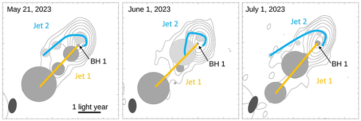
Two Supermassive Black Holes Are on a Cosmic Collision Course
Supermassive black holes are believed to be at the heart of every galaxy, but how did they get so big? Likely by gobbling up other black holes, astronomers say.

The Centuries-Old History of the Super El Niño
According to meteorologists, there could be another El Niño brewing in the Pacific Ocean. And this could be a big one. If climatic conditions conspire in the warming waters of Eart...

The Best Photos of the Artemis II Mission
The Artemis II mission to the moon was much more than a mere flyby. With the best digital imaging equipment available, the astronauts on board came home with some of the most detai...

Solid Proof That Our Mammal Ancestors Laid Eggs
In 2008, an oblong fossil was recovered from South Africa’s Karoo Basin, a site famous for its Triassic mammal precursors—therapsids. Once the fossil was cleaned and prepped, it re...

Why Kids Have Nightmares and How to Break the Cycle
Every kid has nightmares. While they’re usually more of a nuisance, these bad dreams can sometimes persist, disrupting sleep patterns at a critical time of development. If left unt...

The Bad Seed and the Problem of Blame
An incarcerated man posed this question to behavioral geneticist Kathryn Paige Harden in a letter not long ago. As a teenager, the man had attacked a total stranger in broad daylig...

How Do Fish Know How to Build Nests?
Birds do it, bees do it, even African fish do it. Nest building is behavior displayed by all kinds of species, but how do they know how to construct these refuges? A new study of A...
What Comes After Artemis II
The Artemis II Orion spacecraft will splash down shortly after 8 p.m. EDT tonight, capping off our first trip to the moon in half a century. While this will mark the end of the Art...

Survival of the Wittiest
Killjoys and scatterbrains might have propelled the evolution of the human species. This is, essentially, the theory proposed by linguist Ljiljana Progovac in a newpaperpublished i...

The Deep Secrets of the Nautilus
There was a time when the most formidable ocean predators included massive squid relatives enclosed in spiral shells. From about 485 to 444 million years ago (or the early Paleozoi...

The Biological Basis of Imagination
Right now, you can probably close your eyes and picture lots of things from your past: your favorite childhood toy, the face of your first crush, the most embarrassing moment of yo...

How Nicotine Disrupts the “Lung-Brain Axis”-And Could Lead to Dementia
It’s 2026, and scientists are still uncovering new reasons smoking is bad for you. Previousstudiesinvestigating links between smoking and neurodegenerative conditions like dementia...

This Is How People Who Use Emojis at Work Are Perceived
For better or worse, emojis are now part of the workplace. With remote work on the rise, and face-to-face office communication declining, many employees have been robbed of the non...

Is This Brain Cell the Key to Controlling Appetite?
What’s the brain made of? Our gray matter isn’t just a network of neurons that do the thinking—there are an equal number of star-shaped cells called astrocytes. These cells have lo...

A Mathematical “Sniff Test” for Fish Freshness
Once caught, a fish can travel thousands of miles before it reaches the grocery store. So how do you know if it’s fresh? The traditional test, employed by fish buyers and sellers a...

How Your Neighborhood Could be Aging You
It’s easy to feel like aging is out of your control. While there are plenty of things you can do to maintain your health as long as possible, like eating a healthy diet, exercising...

How Childhood Dementia Ravages the Brain
Nine-year-old twins Jobe and Tate are alike in every way except one: Jobe has a rare condition calledSanfilippo syndrome, a form of childhood dementia. Jobe’s development began to ...

These Scientists Are Proposing a New Law of Nature
This story is featured in our upcoming print issue—subscribers get full access both in print and online.Join now.

The Mystery of Water on the Moon
When the crew of the Artemis II mission reached the moon yesterday, there was already a spacecraft waiting in orbit—the Lunar Reconnaissance Orbiter (LRO). Launched in 2009, the LR...
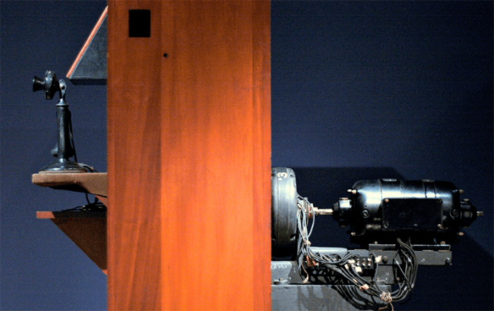
How Video Calling Worked Almost 100 Years Ago
If you’re in your early 20s, you haven’t lived in a world without the widespread ability to have a video chat with someone halfway around the globe. Of course, there was a time whe...

This Record-Breaking Octopus Fossil Isn’t an Octopus After All
In 2003, a fossil found in northeastern Illinois was declared theearliest known octopus, earning ita placein the Guinness Book of World Records. The ancient cephalopod, dubbedPohls...

The Costs of Feeling Lonely in a Crowd
One of the more painful dimensions of the human experience is feeling lonely in a crowd, surrounded by people but unable to make a connection. It is naturally more difficult to tol...

Bumblebees Bounce to the Beat
We know that humans can maintain a beat,keeping timedeep in our neurons. So canmacaquesandfireflies. But, to date, the ability to learn a rhythmic sequence and then recognize it at...

The Creator of the SAT Was an Infamous Eugenicist
As you read this, hundreds of thousands of high school students across the country are busy preparing for the most important test of their lives so far—the dreaded SAT. The most co...

What Goes On Inside a Ripening Banana
Have you ever wondered why you can get a piece of fruit to ripen faster if you toss it into a paper bag with a banana? It’s because the hormone that induces ripening in fruits is a...

What Happened to the Ancient Bug Giants of 300 Million Years Ago?
Earth used to harbor giant insects, like something from the movieInfestation. Okay, admittedly, that’s a bit of an exaggeration. They weren’t the size of cars, but there were mayfl...

Did This 17th-Century Novel Presage the Coming Artemis II Observations?
As the Artemis II astronauts near their historic slingshot around the moon, and the world awaits their communiques, a short novel from the 17th-century reminds us that great thinke...

Unraveling the Chemical Secrets of a Wholesome Plant-Pollinator Relationship
Plants can go to extremes to attract pollinators. Someorchid species, for example, produce structures that look like female bees, tricking males into “mating” with them. After a qu...

Your Biological Clock Can be Measured With a Hair Sample
Ever wonder why jet lag is such a horribly uncomfortable experience? It’s because your biological clock doesn’t just regulate your sleep cycle, it affects a whole host of other bod...

A Poet of Science Who Shook Faith in God
This story is featured in our upcoming print issue—subscribers get full access both in print and online.Join now.

I Asked Claude Why It Won’t Stop Flattering Me
The figure of the silver-tongued devil is as old as the story itself. We’ve warned each other about the perils of yes-men, bootlickers, and sycophants since we told the first tale....
The Best Photos of the Artemis II Mission (So Far)
The Artemis II mission to return to the moon for the first time in over 50 years is underway, and while the crew has yet to enter lunar space, NASA has already provided some phenom...

The Crowd-Sourced Science to Save Endangered Succulents
Cacti, among the most common houseplants, earned their popularity by being remarkablydiverse, tenacious, and resilient to extreme rainfall and temperatures. Despite these hardy tr...

Cosmic Mysteries Swirl Around “Forbidden Planet” - Nautilus
In 2023, a team of astronomers led by Shubham Kanodia of the Carnegie Institute of Science discovered an extraordinarily peculiar exoplanet. 282 light-years from Earth, a red dwarf...

AI Art Is Human Art
AI slop is everywhere:Shrimp Jesus, bunnies hopping on a trampoline, hyperreal images of humans with extra fingers or impossible anatomy. But some creative works generated by bots ...

When Dogs First Became Man’s Best Friend
Our canine companions have their ancestry in wild packs ofwolves. But scientists are still sorting out when dogs were first domesticated, which launched them on a genetic trajector...

Meet the Arthropod That Originated Fangs
Evolutionary biologist Rudy Lerosey-Aubril was meticulously cleaning a small, 500-million-year-old arthropod fossil with a needle when he noticed something peculiar—there were claw...

Are Gossiping Mushrooms Sharing Your Public Urination Secrets?
When most people hear the word “fungus” they picture a mushroom, which is understandable. After all, these reproductive organs are the most visible parts of fungi, but the vast maj...

What’s the Oldest Living Animal on Earth?
Rumors of Jonathan the Tortoise’s death have been greatly exaggerated. The ancient Seychelles giant tortoise is still alive and well despite a post on X (formerly Twitter), purport...

How to Track the Artemis II Mission
On day two of their 10-day mission, the four astronauts aboard the Artemis II Orion spacecraft are beginning their trip to the moon. The mission, which lifted off yesterday evening...

The Students Who Believe Practice Makes Perfect Get Pretty Perfect Grades
For many, the aphorism “practice makes perfect” has been repeated so many times it’s almost lost its meaning. Butnew researchpublished inFrontiers in Educationshows that adolescent...

Can Plants Count?
Plants are a lot smarter than we give them credit for. They can sense their surroundings, anticipate changes, and even communicate in ways we’reonly beginning to understand. Accord...

How Sleep Cleans the Brain
When your head hits the pillow for a good night’s rest, a number of changes take place in your body. Your heart rate and breathing slow, along with your brain waves, and your gray ...

Why Seals Twitch Their Whiskers
Many mammals have whiskers that help them feel out their environments. The sensory experience may include subtle detection of vibrations, such as howelephant trunk whiskerspick up ...

Making AI More Human
While AI is new in a manifest sense, humans have been telling stories of artificial intelligence for ages. Today we haveHerandEx Machina, but these stories owe much to tales that c...
Mars 2026

What Sharks Attacked 5 Million Years Ago
Forty years ago, a teenager looking for fossils with his dad on a beach in Belgium found a whale skull. Later, another father-son pair stumbled across a completely different whale ...

The Big-Game Elephants Neanderthals Hunted for Food
Straight-tusked elephants roamed the landscape of Stone Age Europe 125,000 years ago. Thirteen feet tall and weighing in at 14 tons, these prehistoric behemoths were the largest an...

Who Gets to Do Science?
Neuroscientist Christian Cazares grew up in a border town in California called Calexico. Many of his friends were American-born United States citizens with Mexican parents, so they...

A Very Unscientific History of Scientific Hoaxes
April Fool’s Day is upon us once again, which makes this a great time for a reminder of the value of scientific skepticism. It’s also a good time to take a look back at when scient...

How Did Evolution Come Up With So Many Squids?
With 10 arms, color-changing skin, and an internal shell, squids are unique organisms. They’re also incredibly diverse. The squid’s superorder, decapodiformes, contains six differe...

Ordinary Lab Gloves May Have Skewed Microplastic Data
Scientists researching the microplastics crisis may have unintentionally made it worse. Not by directly contributing to the problem, but by inadvertently skewing the data. The culp...

These Seals Brave Polar Bear Country to Access an Ocean Buffet
Optimal foraging theory posits that animals will choose areas with more abundant resources while avoiding those with high predator densities. Studies on “the landscape of fear,” fo...

Why You Should Root for the Apex Predator
When you’re watching a nature documentary and a lioness is stalking an unaware zebra from the tall grass, who do you root for?

What the Insects of the Jurassic Period Sounded Like
In reconstructing ancient ecosystems from fossils, paleontologists can deduce the sizes and shapes of the animals and plants that inhabited them. In some cases, the color of organi...

The Giant Sloths and Armadillos of Prehistoric Texas
Swimming through a flooded underground cave littered with bones might sound like a nightmare, but for paleontologists at the University of Texas the aquatic spelunking trip uncover...

How Science Fiction Can Save Us
In Ted Chiang's short story, "The Lifecycle of Software Objects," a startup sells intelligent digital pets called “digients.” At first, they are simple creatures—blobby virtual ani...

When Fake Supplements Work
The placebo effect is an odd thing. We don’t fully understand how it works, yet its influence is so well established that drug trials have to account for it to be taken seriously. ...

The Science Behind Being One of a Kind
Some people might say it’s their genes, while others might say it’s the choices they make. A new study recentlypublishedinTrends in Ecology & Evolutionis taking a close look at bot...

A Light in the Dark: Finding the Good in the Natural World
This articleoriginally appeared inKnowable Magazine.

New Ape Fossil Could Shift Our Evolutionary Origins Northward
As an inquisitive species, humans are interested in figuring out where we came from. Paleontological evidence has shown that the great ape lineage of “hominoids,” which includes go...
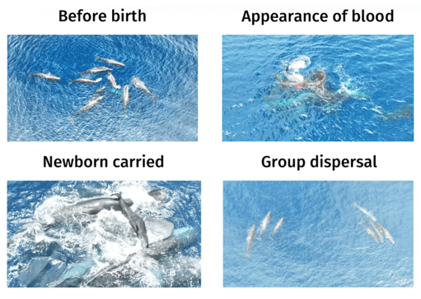
Rare Sperm Whale Birth Caught on Video
From a whale-watching boat, you’re most likely to spot humpbacks, minkes, or fin whales. Conversely, because they spend so much time so deep in the ocean, sperm whales are rarely v...

Space Screws Up Sperm’s Ability to Navigate Properly
Humans may be living on the moon sooner than we'd thought. Earlier this week, NASA Administrator Jared Isaacmanannouncedan advanced timeline for the agency’s plans to return to the...

You Can Transport Antimatter in a Box Truck?
Scientists at the European Organization for Nuclear Research (CERN) pulled off an incredible feat this week: successfully transporting antimatter in a humble box truck for the firs...

The Doctors Who Say Spirituality Belongs in Medicine
Neurological diseases like Parkinson’s can profoundly transform a person’s spiritual life. These illnesses often alter not just how the body works, but how the mind functions, how ...
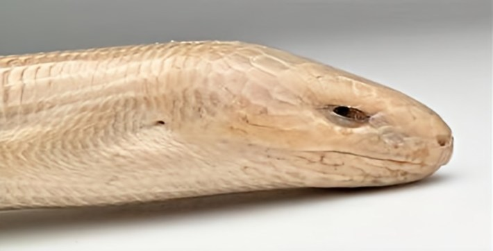
The Mystery of the Legless Lizards of Taiwan
Slithering through the damp leaf litter, deep in the forests of Taiwan is an elusive creature that’s been causing confusion for decades—the Formosan legless lizard. Now, researcher...

How We Walk Might Reveal Our Risk of Death
There’s a lot you can tell from the way someone walks. The human gait can be used todiscern emotional state,diagnose disease, and even reveal whether someone’s a woman’s man with n...

The Martyrs, Hunters, and Nature Lovers Who Came Together to Save Birds
In 1914, a bird named Martha, aged 29, died at the Cincinnati Zoo. She was the last of the passenger pigeons. In the mid 1800s, flocks of these birds numbered in the billions. But ...

Can Home-Cooked Meals Help Stave Off Dementia?
While treatments for dementia are few and far between, there are a multitude of steps you can take to lower your risk of developing the disease. Maintaining a healthy lifestyle, ex...

The Fate of a Soviet Nuclear Sub Decades After It Sank
On April 7, 1989, the nuclear-powered Soviet sub K-278 Komsomolets carrying two nuclear warheads was silently moving beneath the frigid waters off the coast of Norway’s Bear Island...

The Internet Has Not Killed Reading-or Attention Spans
British author and technology pioneer Kevin Ashton has been puzzling over the nature of storytelling for the past 25 years. That’s how long it took him to research and write his la...

The Search for Alien Life Just Identified 45 New Targets
Giventhe exponential rise in discoveriesof exoplanets—with 6,000 and counting now identified—detecting signs of alien life has never been more of a needle-in-a-haystack exercise. B...

How ‘Tiny Shortcuts’ Are Poisoning Science
In 1999,Timemagazine featured a famous photo of Albert Einstein on its cover—looking old and tired, his forehead covered in wrinkles, his hair long and gray. The photograph was tak...

Why Vivid Dreams Make for Better Sleep
Getting good sleep is easier said than done. Sometimes you can crash out for hours and still wake up groggy; other times you wake up from a 45-minute nap ready to take on the world...
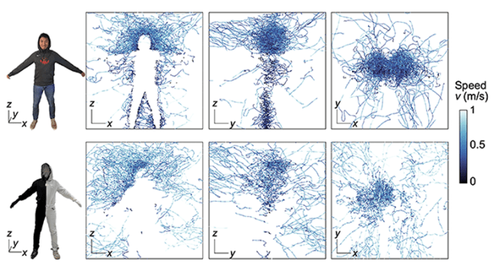
Here’s Why Mosquitoes Won’t Leave You Alone
Spring is here, which for many in the United States, means mosquito season is right around the corner. If you’re one of the unlucky people who seem to be irresistible to the tiny b...
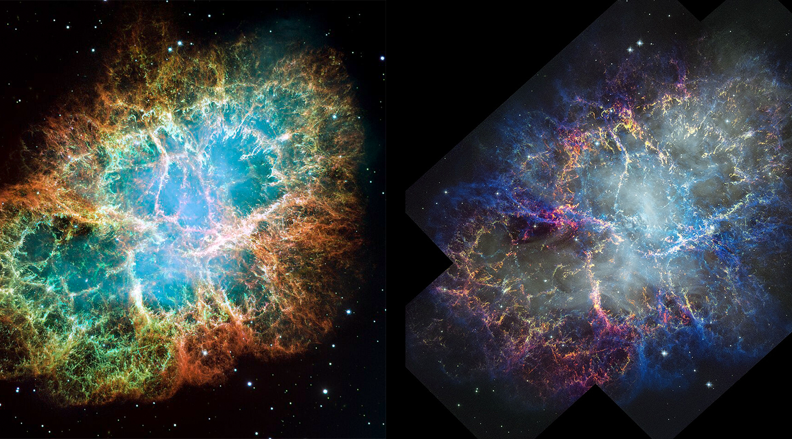
Hubble Snaps a New Dazzling Photo of the Crab Nebula
Chinese astronomers noticed a star burning brightly in the daytime that persisted for three weeks, back in 1054 A.D.—and they weren’t alone. On the other side of the globe, Mayan s...

he Parasite That Garbles the Mating Calls of Male Tree Frogs
If you were a female frog, you’d listen intently to the calls of your male suitors. From the croaking of bullfrogs, to the twangs of green frogs, to thechirping ofGracixalusfrogs, ...

Fitbit Data Sheds Light on Best Time to Exercise
Is it better to exercise in the morning or at night?

Why We Don’t Have a Lyme Disease Vaccine
Today, Pfizerannouncedits Lyme disease vaccine (developed in conjunction with Valneva) was only 73.2 percent effective in preventing the illness. While the company plans to move fo...

Sperm Whales Caught on Camera Headbutting Each Other for the First Time
In 1820,The Essex, a whaling ship, was attacked and sunk by two head-on strikes from a sperm whale near the Galapagos Islands in the Pacific Ocean. “It appeared with tenfold fury a...
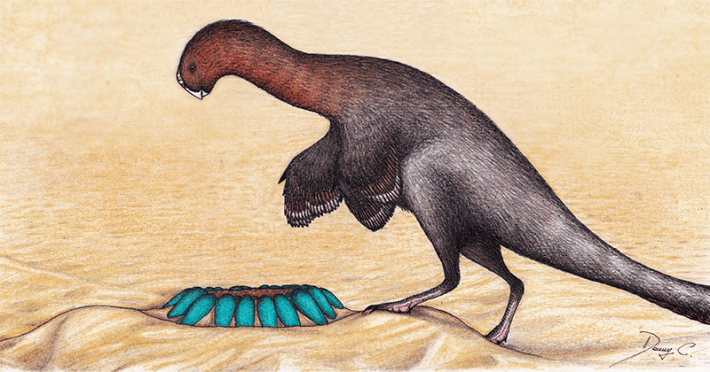
How a Simulated Dinosaur Nest Revealed Prehistoric Parenting Strategies
Dinosaur eggs are rare, but oviraptors, small birdlike dinosaurs that lived during the Late Cretaceous period around 70 million years ago, left behind plenty for paleontologists to...

Heat Probably Doesn’t Make You More Aggressive
The idea that heat is related to violence is as old as Aristotle. The Greek philosopherbelievedthat anger was a boiling of blood and heat around the heart. A link between the two h...

The Shrinking Gland That Helps You Live Longer
The humble thymus doesn’t get a lot of press. In fact, most people probably couldn’t point to it on their own bodies (hint: it’s in the middle of the upper part of your chest). But...

Seal and Sea Lion Brains Help Explore the Roots of Language
Until recently, vocal behavior in animals was assumed to be largely inflexible—a product of inheritance with little influence of learning. Increasingly, though, studies are finding...

How Gum Disease Can Lead to Breast Cancer
The bacteriumFusobacterium nucleatumis typically commensal, living on our gums without causing any trouble except for the occasional bout of gum disease. While it seems like a pret...

How Cacti Defy Darwin
In interpreting the intimate relationships between pollinators and orchids, Charles Darwin proposed that specialized flower shapes and colors drive diversification. After all, it s...

Revisiting the Environmental Ruin of the First Gulf War
With the United States-Israel war with Iran intensifying, apocalyptic scenes are coming out of Tehran. Earlier this month, U.S.-Israeli forces bombarded oil fields around the city ...

The Science Is in: No One Likes Your Cockapoo
One of humans’ most outstanding traits is our ability to change our surroundings to our liking. That includesour dogs. In a recent fervor for customized breeds, people have been bu...

If You’re Going to Drink, Make It This Kind of Alcohol
A preview of research being presented at the American College of Cardiology’s Annual Scientific Session later this month reveals that the health effects of alcohol don’t just depen...

What the US Could Learn From Asia’s Robot Revolution
In 2023, I traveled to South Korea on a Fulbright fellowship, excited to revisit some of my favorite places from 30 years earlier when I was an exchange student at Han Nam Universi...

Is This Metabolic Molecule from Pythons the Next Big Weight-Loss Drug?
If you were to tour a certain lab at Stanford University, you’d find some very svelte mice. After ingesting a newly discovered compound identified by researchers in astudypublished...

Is This Where Morality Lives in the Brain?
We all like to believe we have a moral code, but we still fail to live up to it from time to time—it’s an unfortunate part of the human condition. But what’s going on in our brains...

“Whiplash”: Heart Attack and Stroke Risk Jumps When People Stop Taking GLP-1s
The more GLP-1s catch on, the more benefits researchers discover. Originally formulated to treat diabetes, the popular weight-loss drugs have beenshownto improve kidney health, liv...

Did Music Give Rise to Language?
Charles Darwin called music “among the most mysterious” faculties with which humans are endowed. Because he couldn’t decide what function music had, he suggested it might have serv...

The Comedy of Errors That Was the First-Ever Space Walk
Today, NASA astronauts aboard the International Space Stationtook a space walkto ready the station for a future power upgrade. While this particular extravehicular excursion had be...

Platypus Anatomy Just Got Weirder
One glance at the platypus and you’ll forgive the naturalists whoassumed it was a clever hoaxupon first encountering preserved specimens more than 200 years ago. After all, the cre...

Adults With ADHD Experience Sleep-Like Brain Waves While Awake
Attention deficit hyperactivity disorder (ADHD) affects almost 7 percent of adults worldwide, but despite being a common neurological disorder, there’s still a lot we don’t know ab...

The Secret of Fireflies’ Synchronous Flashing
Some of themathematical mysteriesbehind how groups of male fireflies match their flashes when they’re clustered closely together have recently been illuminated by a group of scient...

Discarded Plastic Can Be Converted Into Parkinson’s Drug
We produce tens of millions of tons of polyethylene terephthalate (PET) plastic per year, primarily for water bottles, and what doesn’t get recycled winds up in landfills or as pol...

This Frog Sings Like a Bird
New species ofGracixalusfrogs have been popping up all over the place. Just in the last decade alone, the number of described species has more than doubled from 10 to 23. These “sh...

Mathematics Suggest That Fashion Is on a 20-Year Cycle
If you’ve taken a spin around Instagram or TikTok recently, you’ve noticed early aughts fashion trends have made a resurgence. Skinny jeans are out, baggy jeansare in. So are the b...

Consider the Cockroach
I love insects with a passion, but even I admit that cockroaches are a hard sell. They don’t pollinate our gardens, provide us with honey or act as colorful harbingers of spring. T...

Welcome to the Block Universe
I walk down the patterned garden pathsIn my stiff, brocaded gown.With my powdered hair and jeweled fan,I too am a rarePattern.— Amy Lowell

Why Haven’t We Heard from Extraterrestrials Yet?
The universe remains silent. We’ve never detected messages from non-human life, despite decades of searching. One potential explanation is provided by Dark Foresttheory. It posits ...

Bull Sharks Make Friends, Too
When we think about the dynamics of friendship, mean-girl cliques or frat bros typically come to mind. But astudypublished today inAnimal Behaviourby researchers from the United Ki...

Depression Linked to Energy Problems in the Brain and Body
Clinical depression isn’t just a disorder of the mind, it’s also a disease of the body, characterized by somatic symptoms like fatigue. Going beyond mere lethargy, this crippling l...

How Beer Brewing Revolutionized Modern Statistics
If you’re tipping back a pint of Guinness this St. Patrick’s Day, don’t forget to thank the brewing company for its contributions to science—and no, I’m not talking about the nitro...

Babies Learn the Art of Deception Before Their First Birthday
Parents dutifully record their children’s developmental breakthroughs in baby books, documenting their first laugh, first steps, and first words—but what about their first lie? It ...

Here’s How Snakes Defy Gravity to Stand Up
Snakes are depicted as slithering around on the ground. But the snake behavior that humans findeven more alarmingis when they raise body parts off the ground in strike poses or cli...

Money Can't Buy You Youth
These tech bros, or whatever, think they understand everything. They understand nothing about what we do!”

Newly Discovered Species Changes the Origin Story of Magic Mushrooms
If you come across a mushroom on a hike, there’s a decent chance it’s from a species that’s entirely unknown to science. In fact, we don’t even know how many fungi species there ar...

What Doomsday Prophecies Say About Us
TheDoomsday Clock now reads 85 seconds to midnight. The end of the world is closer than ever, it seems—if the metaphorical timer is to be believed. Managed by theBulletin of Atomic...
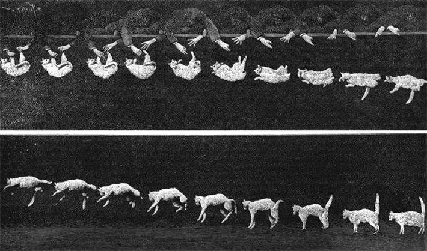
Why Cats Always Land on Their Feet
Falling cats always land on their feet” is up there with evolution by natural selection and law of gravity in terms of ironclad scientific truisms understood by the public, but it ...

The Travels of Straight-Tusked Elephants in Europe, Written in Their Teeth
Early Europeans shared their habitats with some formidable creatures, including straight-tusked elephants that stood almost 13 feet tall. Still,archaeological evidencefrom a site i...

The Genetic Secrets of Sperm Warfare - Nautilus
If you’ve ever taken a biology class, you might remember the principles of Mendelian inheritance (or at least having to illustrate them with Punnett squares). Basically, during sex...

The Science Behind the Perfect 3-Point Shot
In Tuesday’s victory against the Washington Wizards, the Orlando Heat’s Bam Adebayo put up an astonishing 83 points, overtaking Kobe Bryant to claim the record for the second most ...

Scientists Grow Chickpeas in Lunar Soil
If humans want to establish an outpost on the moon, we need a few things. First and foremost, oxygen, which the moon has in spades, although it’sbonded chemically to minerals. Seco...

How Flowers Transformed Planet Earth
The birth of perfume is often traced to a city called Grasse in the south of France, which was known for leather tanning in the Middle Ages. In the 16th century, some leatherworker...

Humans Can Read the Expressions and Feelings of Our Primate Cousins
If you’ve noticed the darkening facial expression of your friend as you describe something terrible that happened, you’re witnessing emotional mimicry. Sometimes without even reali...

Does This Protein Drive Exercise’s Brain Boost?
Bad news for couch potatoes: Exercise isn’t just good for the body, it’s good for the brain, too. Itelevatesyour mood,maintainsneural health, andimprovescognition. Still, the inner...

Weed Not Only Sends Memories Up in Smoke, It Reshapes Them
With state marijuana legalization sweeping the country, adults are using it inrecord numbers, and scientists, like Carrie Cuttler and Ryan McLaughlin of Washington State University...

Bonobos May Not Be the Peaceful Apes We Imagined
Our two closest relatives, bonobos (Pan paniscus) and chimpanzees (Pan troglodytes), are popular research subjects. Because they share about 90 percent of our DNA and many of our c...

The Iconic Longevity of the Rattlesnake’s Warning
When people think about snakes, rattlesnakes invariably come to mind, even though they constitute just two of the more than 500 genera of snakes. Only the pit vipers (Crotalus) and...

Why Does the United States Have So Many Tornadoes?
Last night, tornadoesravagedIllinois, Indiana, and Alabama, leaving two dead and even more injured, marking a violent start to tornado season, which usually peaks in May. Unfortuna...
You Can Still Improve as You Age-With the Right Mindset
Getting older comes with the inevitable deterioration of our minds and bodies, right?

The Secret Life of Neurotransmitters
With every soul-nourishing walk in the woods, every delicious devouring of a chocolate fudge cake, our brains are bathed in a molecule called dopamine. It’s renowned as one of our ...

Red Fox Caught on Camera Snatching Wolf Pup from the Den
In 2017, gray wolves recolonized the Castelporziano Presidential Estate, a nature preserve on the outskirts of Rome. There, they hunted roe deer, hares, and wild boars with no inte...

Inside the Brains of Monks Who Have Meditated for 15,000 Hours
In the 1990s, the Dalai Lama invited University of Wisconsin neuroscientist Richard Davidson to study the brains of meditating monks. “You’ve been using the tools of modern neurosc...

Ancient People Traded Live Parrots Across South America for Thousands of Years
People like to keep macaw parrots as pets because they’re big, colorful, and talkative. Despite the high-care needs of these charismatic birds, we’re enamored of their ability to i...

It’s Not Just You. Subways the World Over Are Feeling Hotter
If you’ve ever ridden the New York City subway in the summer, you know it gets sweltering down in the tunnels. It’s not uncommon to see sweat-drenched straphangers fanning themselv...

R.I.P Van Allen Space Probe A, Set to Crash Tonight
Later tonight, Van Allen Space Probe A will re-enter Earth’s atmosphere, beginning a fiery descent that will mark the end of its mission. Decommissioned in 2019, the probe wasn’t e...

Baby Boomers Are a Transition Generation in Our Longevity Crisis
In the years since 2010, life expectancy in the United States has stagnated. From 2010 to 2019, longevity in our country has improved by only a few months compared to average gains...
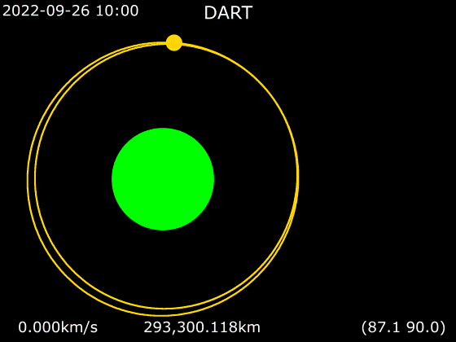
NASA’s DART Mission Offers Proof of Protection Against Asteroid Impacts
There are more than40,000 asteroidswhizzing through space near our planet—and those are just the ones we know about. If one were to pose an extinction-level threat—like the asteroi...
Are You Smart Enough to Avoid Falling for “Corporate Bullsh*t”?
In 2014, an executive vice president of Microsoft Devices Group laid off 12,500 employees in an email so riddled with buzzwords and corporate vagaries itmadeheadlinesas “the worst ...

Were You Born to Love Music?
Acclaimed Russian novelist Vladimir Nabokov believed that aesthetic pleasure was a full-bodied experience. Nabokov, who was celebrated for his rich, evocative prose, got what he ca...

This Ancient Crocodile Ancestor Learned to Walk on Two Legs
They looked like ostriches as they walked upright on two legs, with the other pair of small legs acting as arms. Even their other features, like hollow bones, large eye sockets, an...

Physicists Uncover How Long It Takes to Get the Last Drop of Syrup
No one likes to waste food, not even the stubborn remnants of ketchup at the bottom of the bottle. So what do you do? Turn it upside down, obviously. Unfortunately, this tried-and-...
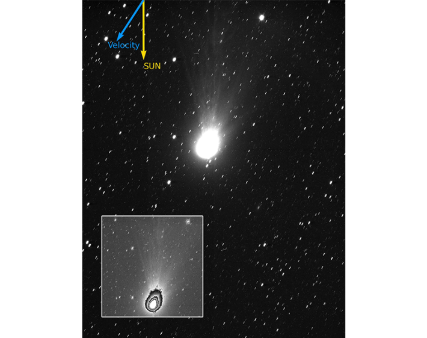
Interstellar Comet 3I/ATLAS Gets the Celebrity Treatment
Last July, NASA’s Asteroid Terrestrial-impact Last Alert System (ATLAS), an automated system that monitors the skies for asteroids that might hit Earth, identified an object moving...

Fanged Frog of Borneo Shows Speciation is Messy
It’s a question that’s tormented biologists for centuries. Early naturalists relied on differences in appearance to make the call, but advances in genetics have allowed biologists ...

Are Killer Whales Also Cannibals?
How do you explain a 1.5-foot-tall severed black fin with jagged bite marks on its surface?

Some Memories Live in the Brain Even If We Can’t Recall Them
Struggling to remember a forgotten memory is an all-too-common frustration—one that unfortunately becomes more common as we age. We realize that there’s something we can’t recall, ...

Bumblebees Make Decisions as Efficiently as Humans
The more we get to know bees, the more we discover mental capabilities rivaling our own. A century ago, when ethologist Karl von Frisch recognized honeybee dancing as a way to dire...

Your Biological Clock is More Complex Than You Think
Daylight Saving Time is upon us, which means we’ll once again get more sunlight in the evening at the cost of an hour of sleep and a little turmoil in our internal clocks. In the t...

Saving the Girl with Dementia
After Cara and Glenn O’Neill learned of their daughter Eliza’s death sentence, they went to the beach. Before they left, Eliza and her father ran along the sand, holding hands. It ...

Restoring Panama to When Prehistoric Beasts Roamed the Jungle
Panama was a much wilder place 17,000 years ago. The lush vegetation provided food for huge prehistoric beasts like giant ground sloths, massive armadillos, and even a species of e...

Koalas Recover Genetic Diversity as Populations Expand
When a species experiences a population crash—or bottleneck—its genetic diversity takes a hit. The lower diversity triggers a cascade of problems, from inbreeding to combinations o...

The Dainty Dinosaur That’s Rewriting Evolutionary History - Nautilus
Alvarezsaurs were strange, small dinosaurs adapted to feed on ants and termites. Their stubby arms, powered by big chest muscles, ended in single thumb claws, suggesting a digging ...

How Three Students Designed an Atomic Bomb
By the spring of 1964, four countries had developed nuclear weapons—the United States, the Soviet Union, the United Kingdom, and France, with China on the verge of becoming the fif...

These Bacteria Beat Cancer By Eating Cancer - Nautilus
There are some things bacteria don’t like to do alone. Certain resource-intensive activities—like constructing a biofilm scaffold or releasing virulence factors—don’t make sense un...

Watch How Planet-Hopping Microbes Can Survive Asteroid Strikes
Did life originate on Earth, or could it have been seeded here, originating on some other planet, like Mars? The latter scenario would involve extraterrestrial material getting eje...

The Urge to Snack Is Built Into Our Brains
Trying to watch what you eat while watching anything on TV is like navigating a minefield. Every fast-food commercial—with the tempting images of sizzling beef patties, crunchy fri...

When Scientists Are Dinosaurs
Iwasn’t fazed one bit as the tequila hit the table for the third time in an hour.

Watch How Water Bears Can Survive in Martian Dirt
Tardigrades are sturdy little things. More commonly known as water bears, these eight-legged, multicellular, microscopic organisms have the ability to dehydrate, shrivel up, and re...

World’s Largest Acid Geyser Erupts, Right in Our Backyard
Due to its unique volcanic activity, Yellowstone National Park is home to a number of impressive geysers. There’s the world’s tallest active geyser, Steamboat, with a fountain capa...
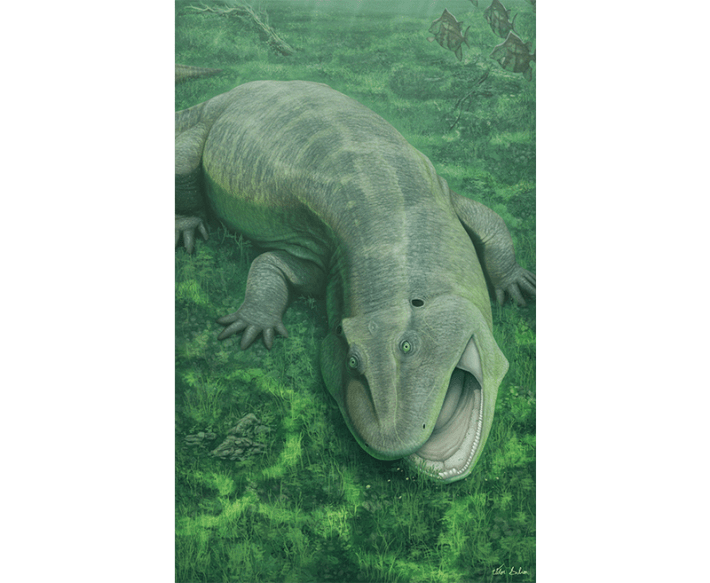
Paleontologists Solve the Mystery of a Twisted Jawbone With Sideways Teeth
Years ago, in a dry riverbed in Brazil, paleontologists discovered a strikingly odd fossilized jawbone. Unusually twisted, the jaw featured lower teeth protruding outward and small...

Doing Science and Philosophy On Drugs
Since the start of the so-called psychedelic renaissance some 25 years ago, writers have tackled the subject from the vantages of science, politics, mental health, productivity, cr...

How Human Is Human?
I got off the elevator at the 18th floor of a gleaming skyscraper in Tokyo last month and walked to the office of robot pioneer Hiroshi Ishiguro. At the front desk, I was met by a ...

New Jellyfish Species Gets Its Michelin Star Moment
In 1900, the French tire company Michelin took a seemingly circuitous route to sell more tires: They started reviewing restaurants. Alerting the French people to distant fine-dinin...

The Surprising Reason Female Caribou Grow Antlers
A hefty rack of antlers is a status symbol we expect from a mature male deer or elk. Because rival males lock antlers in a shoving contest over mates, the bigger the better. But fe...

Laughing Off Your Mistakes Makes You Seem More Competent
How do you react when you call someone the wrong name, or trip over a curb, or wave to a stranger you thought was a friend?

60,000-Year-Old Ostrich Eggshells Depict Ancient Human Thoughts
You’d think that our human fascination with geometric shapes would have developed recently, after humans became master builders of structures with parallel lines and right-angle co...
Februari 2026

Physicists Crack the Question of Why Basketball Shoes Squeak
If you’ve ever watched a basketball game, you’re familiar with the white noise of staccato squeaks from the players’ shoes as they maneuver across the court. Now, new researchpubli...
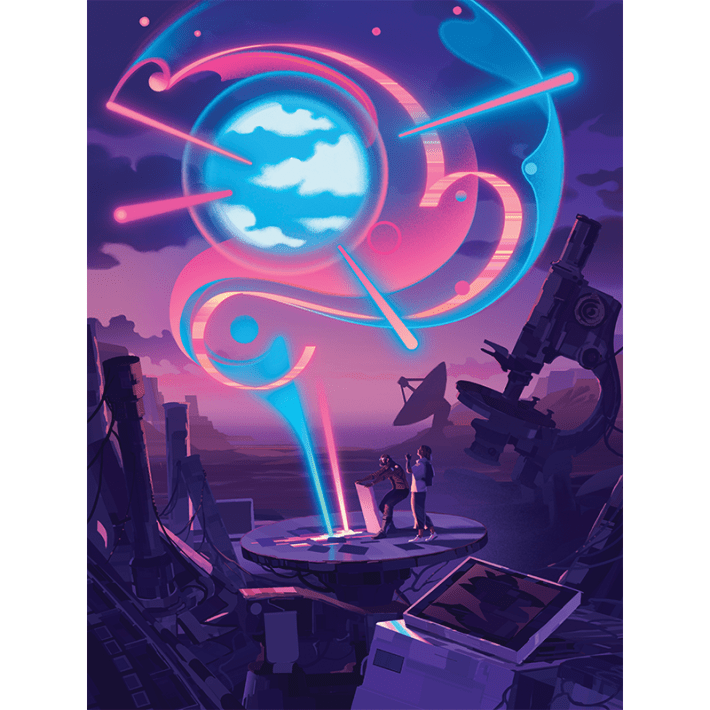
The Thrill of Science in 2042
In 2026, science was under attack from denial and political turbulence. Ideologues and corrupt officials discontinued childhood vaccines. They dismissed climate science. Cancer bio...

Here's Why Locusts Swarm
Locusts have plagued humans since antiquity, erupting into swarms so devastating that they serve as stand-ins for divine wrath. Sometimes containing tens of millions of voracious i...

What Do You Get When You Cross a Tardigrade with a Space Pioneer?
“Sometimes walking from the subway to the lab takes too long, so I’ll start running,” he told me over breakfast at a bistro near his home in Brooklyn on a crisp autumn morning. “Ju...

Early Exposure to Junk Food Has Brain-Altering Effects
With the bounty of sugary cereals, sweet snacks, and fast foods available, getting children to eat healthy is an ongoing struggle for parents. Now, new researchpublishedinNature Co...

Astronomers Capture Largest Image of Milky Way Ever
To paraphrase Archimedes, if we had a selfie stick long enough—and the means to operate it—we could take a picture of the entire Milky Way. Until then, we have to rely on telescope...

Bedbugs Fear Water
If you’ve ever crossed paths with bedbugs, you know what a scourge they can be. Several pesticide treatments later, and these tiny parasites may still be lurking in your mattress. ...

Do These Centenarians Hold the Key to Long Life in Their Blood?
To unlock the secrets of longevity, scientists in Switzerland launched the SWISS100 study combining sociology, psychology, medicine, and biology to research centenarians—that is, t...

How Poop Could Save the Giraffe
It kind of looks like a Hershey’s kiss,” says Jenna Stacy-Dawes.

Mosquitoes Developed a Taste for Human Blood Before We Existed
Despite how much we equate mosquitoes with getting itchy red welts, most of the 3,500 known species of mosquitoes don’t feed on humans. Still, mosquitoes that are anthropophilic—pr...

The Vibes Have Been Off in the US for Decades
President Donald Trump may have just appeared before Congress to issue an address on the state of our union, but researchers from the University of Rochester have come out with the...

How Horses Make Two Sounds at Once - Nautilus
We’ve all heard a dramatic horse whinny in an exciting scene in a movie, or inBridgertonif that’s your thing. These whinnies include both low throaty notes and higher-pitched sound...

The Birth of Light - Nautilus
The universe began with a bang, and for the first few hundred million years, there was nothing but hydrogen and some helium atoms moving through the void. Then something happened. ...

Night Owls Could Be Putting Their Heart Health at Risk
If it’s the former, then I’m afraid I’ve got some bad news. People who stay up late have worse cardiovascular health than people who wake up early, according to a new studypublishe...

Why You’re More Likely to Develop AI-Psychosis than to Join a Cult
Last year, a 26-year-old woman developed delusions that she could resurrect her dead brother while chatting with ChatGPT. She was convinced he had left behind a digital avatar that...

Imaging the Most Far-Out Jellyfish Galaxy Ever Observed
Ram pressure-stripping” may sound like something that happens on sheep ranches, but it is, in fact, an astrophysical phenomenon. When galaxies occur in clusters, individual galaxie...

The Surprising Benefits of Yo-Yo Dieting
Dieting to slim down can be a demoralizing slog. Whether you count calories, cut out carbs, or intermittently fast, the weight always seems to creep back eventually. So what’s the ...

Mass Grave of Women and Children Shows Brutality of Iron Age Culture
Archaeologists working at Gomolava in northern Serbia recently uncovered a 2,800-year-old mass grave containing the remains of 77 people. As they sifted through the bone and debris...

Your Muscles Retain Memories of Strength and Weakness
Every time you throw darts or ride a bike or even work out, you’re engaging your muscle memory. New research from the Norwegian School of Sport SciencespublishedinScience Advancess...

How the Triceratops Used Its Giant Nose
In looking at a Triceratops skull, your gaze is naturally drawn to its trio of horns. But, nestled between the head horns and the nose horn is another iconic feature: a pair of hug...

Fiery Crash of SpaceX Rocket Causes Huge Lithium Plume
If you’re concerned about space debris and want to give yourself a heart attack, check outthis anxiety inducing mapof all the objects known to be orbiting Earth. What goes up must ...

The Ancient Cold Snaps That May Have Shaped Human Evolution
With so much focus on human-made global warming, it can be easy to forget about the natural ebb and flow of Earth’s climate that’s governed by small fluctuations in how Earth moves...

Researchers Map Uranus’ Atmosphere in Stunning Detail
Uranus is a peculiar planet. Even though it’s not the farthest planet from the sun, it’s still the coldest one in our solar system, with no apparent internal heat source. It’s also...

The Cancer No One Can Explain
Aside from potty-training toddlers, almost nobody likes to talk about their poop. This is particularly true if something is wrong with it. But for a lot of young people today, that...

New Blood Test Could Predict When Alzheimer’s Symptoms Will Present
Alzheimer’s is a difficult disease to diagnose. The clinical markers—plaques of amyloid proteins and tangles of filamentous tau proteins building up in the brain—are best measured ...

New Gene Discovery Could Postpone the Bananapocalypse
Have you ever wondered why you don’t have to spit out seeds after snacking on a banana? It’s because the Cavendish, the most widely used commercial cultivar, has three copies of ch...

The Brain Science Behind the Munchies
Anyone who has even a passing familiarity with cannabis can tell you the munchies are real. Although it’s a phenomenon that’s well known to science, the research on it is lacking. ...

Paleontologists Solve a Prehistoric Murder Mystery
Usually when paleontologists unearth dinosaur bones they don’t have any idea what led to their ultimate demise. But a fossil from the duck-billed Edmontosaurus recovered from Monta...

What Grief Has to Do with Love Addiction
Grief is a “place none of us knows until we reach it,” writes Joan Didion inA Year of Magical Thinking, her 2005 memoir about grieving the sudden loss of her husband of 40 years, J...

Why This Region of Space Appears to Be Populated by Snowmen
On the outer edge of our solar system, past Neptune’s orbit, lies the Kuiper Belt, a wide band of small bodies drifting lazily in orbit around the sun. Leftover from the formation ...

Blame Your Parents for Your Extreme Aversion to Snakes
Or are they? Of the roughly 4,000 snake species in the world,no more than 15 percent are venomous. And unless you live in tropical wilds, your chance of getting bitten by a snake i...

“Hell Heron”: New Dinosaur Species with A Head-mounted Sword Discovered in Africa
It’s not every day that a new dinosaur is discovered, but it is a great day. Paleontologist Paul Sereno experienced one in Niger when his team unearthed what turned out to be a new...

Home Really Is Where the Heart Is
For more than two years, I cycled between house sitting gigs, AirBnBs, spare rooms, and friends’ couches. What I remember about these places is less their physical quirks than the ...

How Energy Politics Played Out on the White House Roof
Each president brings their own unique flair to the White House: Richard Nixonhada bowling alley; Barack Obamahada basketball court; and now, Donald Trump’s ballroom appears to bem...

New Theory of Learning Upends the Lessons of Pavlov’s Dog
There are many different types of learning, but among the simplest is associative learning. That’s when we learn to associate one thing with another thing, like the ringing of a be...
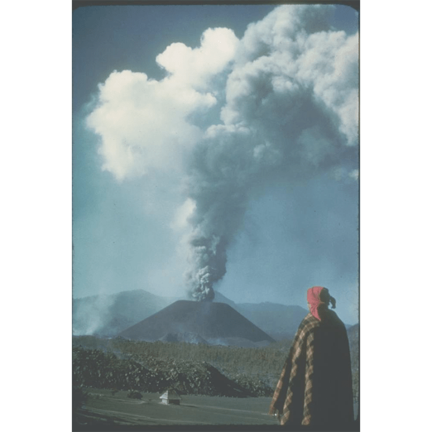
The Farmer Who Glimpsed a Rare Volcanic Birth
On this day in 1943, Dionisio Pulido was tending to his cornfield in Mexico when he witnessed geological history in the making. Over the previous few weeks, people in the region ha...

An Unlikely Culprit Causes Lower Blood Sugar at Higher Altitudes
Scientists have known for decades that people living at higher altitudes, where oxygen is scarce, have lower rates of diabetes, and it’s a phenomenon that’s not restricted to human...

Grinning During Sex Isn’t Contagious, But It Does Require Tempo
If you wanted to study how vocalizations interact with qualities like rhythm and tempo, you could watch how an opera singer moves while performing an aria, or how a chorus sways wh...
Can Zapping Our Brains Make Us Less Selfish?
Altruism is an odd thing. It’s inculcated into us as children, yet many people seem to discard it as soon as they become adults. But is there any way to boost altruistic behaviors?

Is a Strictly Enforced Fishing Ban Saving the Yangtze?
As former wild rivers have been increasingly developed for industry and commerce, water and habitat quality have eroded, leading to a cascade of effects on flora and fauna. Some ch...

The Tortoises That Inspired Modern Robotics
A pioneer in the study of brain activity went on tocreatethe first autonomous robots—a pair of charming tortoises that knew their way around a room.

Babies Are Exposed to More Forever Chemicals in Utero Than Previously Thought
Sinceteflonwas invented in 1938, the use of per- and polyfluoroalkyl substances (PFAS) has exploded, leaving researchers studying the consequences struggling to catch up. Today, th...

The Dark Side of the Illicit Pet Frog Trade
For Sale: red eye tree frog,” squawks one ad on faunaclassifieds.com, a long-standing exotic pet trade website in the United States. A diminutive neon frog with red toes and bulgin...
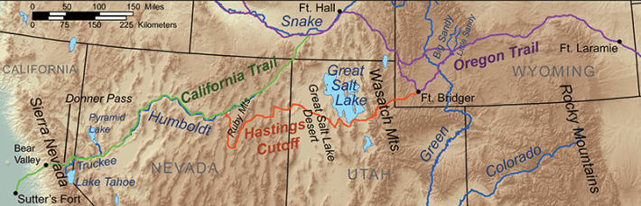
The Missing Pieces of the Donner Party Narrative
On this day nearly two centuries ago, the first round of rescuers reached a group of travelers on the brink of death in the Sierra Nevada Mountains.

A Rare Great White “Ghost” Caught in the Mediterranean
On April 20, 2023, a juvenile great white shark measuring about 83 inches long and weighing about 187 pounds was caught off the coast of Spain. It made a splash in the news since g...

The Long, Dirty History of Our Capitol’s Waters
Last month, what may be the country’slargest sewage spillin history contaminated a stretch of the Potomac River in the Washington, D.C., area with hundreds of gallons of human wast...

Did Astronomers Finally Witness a Black Hole Eat a White Dwarf for the First Time?
Last July, during a routine survey of the sky, the wide-field X-ray telescope equipped on China’s Einstein Probe detected something strange: an X-ray source that showed “violent” v...
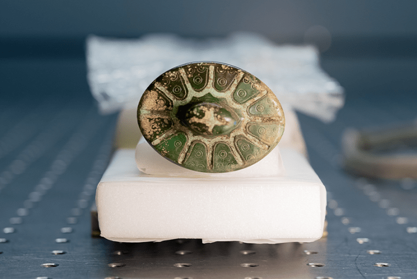
Space Age Technology Reveals Secrets of Bronze Age Sword
In 2023, archaeologists excavating a burial mound near the town of Nördlingen in Bavaria, Germany hit pay dirt: a grave dating back to the Bronze Age containing the remains of a ma...

The Retiree Who Inspired the Wright Brothers to Take Flight
By the late 19th century, engineer Octave Chanute had reached the top of his field—but he left it to pursue a secret hobby. Chanute, who was born on this day in Paris in 1832,overs...

Newly Discovered Prehistoric Crocodilian Had Legs That Went All the Way Up
The island of Great Britain wasn’t an island at all 215 million years ago. Instead, like all land on Earth, it was part of the massive supercontinent, Pangaea, featuring hilly terr...
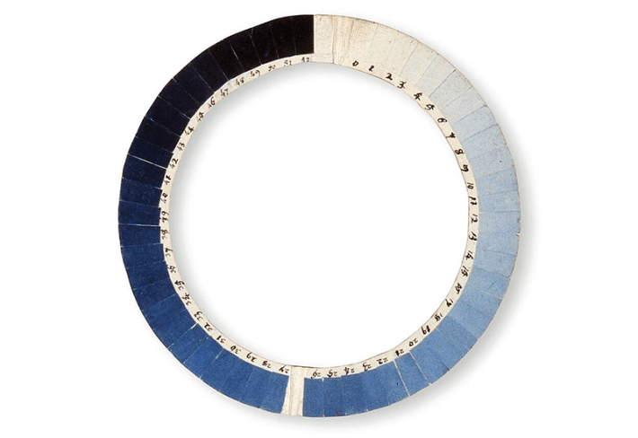
The Mountain Man Who Measured the Sky’s Brilliance
In 1787, Swiss scientist Horace Bénédict de Saussure became among the first people to reach the top of Mont Blanc, the tallest peak in Western Europe. But he didn’t ascend nearly 1...

Scientists Create Map of Deadly Scorpion Hotspots
Scorpion stings can cause searing pain, grievous bodily harm, and potentially even death, with scorpion-linked fatalities numbering in thethousandseach year. While antivenoms can t...

The World Is Becoming Too Loud for Birds
Birds are great talkers and listeners, using vocalizations to communicate within their species. Whether for wooing mates, warning of predators, or chatting with offspring, birds ex...

Chins: The Evolutionary Accident Unique to Homo Sapiens
In 1979, renowned evolutionary biologists Stephen J. Gould and Richard Lewontinpublished“The Spandrels of San Marco and the Panglossian Paradigm,” a relatively short treatise pushi...

Does Belief in God, not Political Party, Drive Conservatism?
It used to be that if you had no religious affiliation in the United States, you were probably atheist or agnostic. You didn’t identify with a particular faith because you didn’t b...

The 3-D Secrets of the “Gravity Hole” Under Antarctica
From space, planet Earth looks like a perfect sphere. But it’s not. Obviously, the crust of the Earth is irregular, covered in jagged mountains and deep oceanic trenches, but even ...

Pulsar Found Near the Center of the Milky Way Could Test Einstein’s Theories
Pulsars are highly magnetized, rapidly rotating neutron stars that emit bursts of electromagnetic radiation from their poles at regular intervals as they spin. In a way, they’re ki...

“ChatGPT Gave Out My Office Address. Then Someone Showed Up.”
At the end of January, a new social media network for AI agents called Moltbook went live, launched by the CEO of Octane AI, Matt Schlicht. Immediately, things got weird. Some of t...

Here’s What the Whiskers on an Elephant’s Trunk Do
Have you ever wondered how an elephant can pick up something as delicate as a peanut with its massive, thick-skinned trunk? It seems a bit like trying to scoop up a single pebble w...
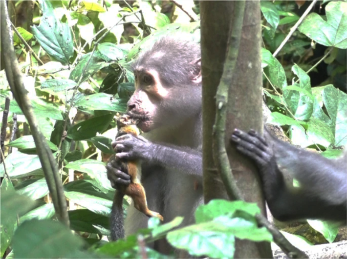
This Forest Rodent Serves as a Reservoir for the Deadly Mpox Virus
They may not know it, but the animals in Taï National Park, Côte d’Ivoire are under constant surveillance. For decades, researchers from the Helmholtz Institute for One Health (HIO...

Dogs Can Have Dementia, Too
Many people who have an older friend or relative are familiar with dementia. With nearly half of Americans older than 55 developing some form of dementia,according to the National ...

Giant Pythons Once Roamed Prehistoric Taiwan
The largest snakes in the world, pythons, are found in Africa, Southeast Asia, the Philippines, Australia, and even Florida (albeit as an invasive species). Yet, despite being surr...

This Is What an Egyptian Mummy Smells Like
According to the researchers who have worked with them, not all that bad. They’ve used descriptors likewoody, spicy, and sweetto characterize the unique aroma. Now, new researchpub...
The Books That Blew These Scientists’ Minds
Today’s scientists are swamped in academic reading. With a seemingly endless stock of new papers published each day in niche journals and archives, researchers are pressured to pas...

The Tourist Draw of Melting Glaciers
Glaciers are no strangers to paradox. Perched at the boundary between heaven and Earth, these frozen rivers of ice are inhospitable to most forms of life, and yet they’re the sourc...

How the Fastest Land Animal in North America Got Its Need for Speed
Pronghorn antelopes are the fastest land animals in North America, clocking speeds of up to 55 miles per hour for a half mile, and45 miles per hour for longer. Since they mostly ru...

When Galileo’s Cosmic Convictions Landed Him in Court
On this day nearly four centuries ago, astronomer Galileo Galilei arrived in Rome. This was no vacation—he had been ordered there by the Catholic Church for a trial.

Is the Supervolcano in Yellowstone About to Erupt?
Strange things are afoot in Yellowstone National Park.

The Cosmic Collision That Formed Saturn’s Rings
Saturn’s rings have captivated astronomers sinceGalileofirst glimpsed them in the early 17th century.* While the 13-year Cassini Saturn mission answered many questions about the ic...
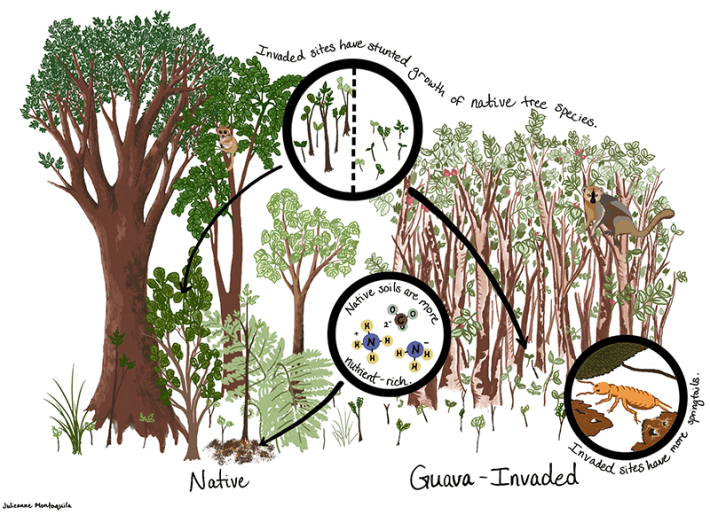
How This Delicious Fruit Hampers Reforestation in Madagascar
If you want to spot lemurs in Madagascar, try an area where strawberry guava trees are fruiting. In particular, consider the mountainous rainforests of Ranomafana National Park, a ...

Hubble Captures the Egg Nebula in Stunning Detail
The Hubble Space Telescope is still orbiting Earth, snapping stunning photos of celestial phenomena close to home. One of the latest captures the Egg Nebula, a young nebula surroun...

A Peek Inside the Minds of Honeybees
Ever wonder what goes on in the mind of a honeybee?
Bird Poop Powered the Success of This Ancient Kingdom
Before the rise of the Inca Empire, the Chichan Kingdom thrived for centuries on the southwest coast of Peru. At its height, the kingdom was home to an estimated 100,000 people wit...

The Spy Who Found T. Rex
Fossil hunter Barnum Brown is remembered today as “Father of the Dinosaurs,” or, more curtly, “Mr. Bones.” Brown is best known for hisdiscoveryof Tyrannosaurus rex in 1902, but tha...
How Charles Darwin Inherited His World-shifting Ideas on Evolution
Before there was Charles Darwin, there was Erasmus.

The Dreams of a Bumblebee in Autumn
When I was younger, autumn’s beauty was uncomplicated. Now I’ve reached the age when autumn is a reminder of mortality. Gloriously turning leaves foreshadow their own fading; cool ...

Why Exercising May Not Help You Lose Weight
Anyone who’s ever tried to lose weight by upping their workout regimen can tell you that it’s a struggle. But why? If you keep your diet the same and hit the treadmill to burn an e...

The Pressure Moms Feel to Solve the World’s Problems
In recent decades, the world has lurched from one crisis to the next: financial collapse, the COVID-19 pandemic, social unrest over police brutality and sexual assault scandals, ap...

Edward Teller Tried to Move Mountains With Nuclear Bombs
Could nuclear bombs be harnessed to help people?

Your Boss Could Monitor Your Heart Rate With Spy Tech
The post-pandemic rise in remote work led to anexplosionof employee-monitoring technology, as bosses sought to keep tabs on workers’ activity, locations, and messages. Now, in the ...

The Major Milk Controversy That Quickly Dried Up
Nearly a century ago, a contentious milk-making ingredient began its path toward commercial use.

New Smart Underwear Unlocks the Serious Science of Human Flatulence
We’ve got smart rings, smart watches, and now … smart underwear.

This Football-Shaped Creature Was an Early Terrestrial Plant-Eater
For 100 million years, plants had Earth’s surface mostly to themselves while vertebrates thrashed around in the primordial seas. When vertebrates finally crept up on terra firma, t...

Why Termite Kings Have Sluggish Sperm
Termites are capable of constructing sprawling colonies containing millions of individuals, a complex social structure that evolved at least 100 million years ago. But how did they...
How Animal Suffering Can Ruin Lab Experiments
Larry Carbonehas spent his entire career thinking about what happens to animals in research labs. As a veterinarian with specialization in lab animal medicine, he has made friends ...

The Dark History of Space Medicine
If we’re ever going to send humans to Mars, a crew would have tospendseveralyears on the round trip. This far-off ambition would require a thorough understanding of how space affec...

How Boats Are a Buzzkill for Porpoises
Porpoises are fish-eating machines. Astudyof harbor porpoises (Phocoena phocoena) around Denmark found them consuming as many as 200 fish per day, followed by evening foraging in d...

How a Worried Mom Created One of the Most Versatile Inventions
During World War II, a woman named Vesta Stoudt took part in the war effort by working in a munitions plant in Illinois. There, she packed up cartridges thatsentrifle grenades whiz...

Living, Breathing Cities Pose Challenges for Carbon Monitoring
Cities are living, breathing things. While they may have tiny footprints compared to the continents they’re scattered across, these bustling population centers still belch out the ...

The Long History and Uncertain Future of US Weather Forecasts
It’s easy enough to glance at a weather app on your phone and not consider all the work that went into the daily forecast you rely on.

The Woman Who Paved the Way for IVF
One procedure hasenabledthe births of more than 10 million babies around the world, and nearly3 percentof United States births per year—and it only became available relatively rece...

How the Gila Monster Gave the World Ozempic
Throughout his career in the 1970s and ’80s, Democratic Senator William Proxmire, a deficit hawk from Wisconsin, issued his annual “Golden Fleece Awards,” calling out public expend...

The Parasite That Chemically Castrates Its Moth Host
In addition to delivering painful stings, some species of wasps are parasites. Fortunately, their hosts are insects rather than humans, since the outcome is eventually death for th...

The Dying Children Who Suddenly Wake Up
For centuries, across cultures, those attending the dying havenotedflashes of sudden mental clarity and physical capability in the days and hours just before death. Many of the dyi...

Here’s What Makes for an Ideal Scent-Sniffing Dog
Today, our canine companions help support people with disabilities, conduct search and rescue operations, and sniff out narcotics. The personality characteristics that affect dogs’...
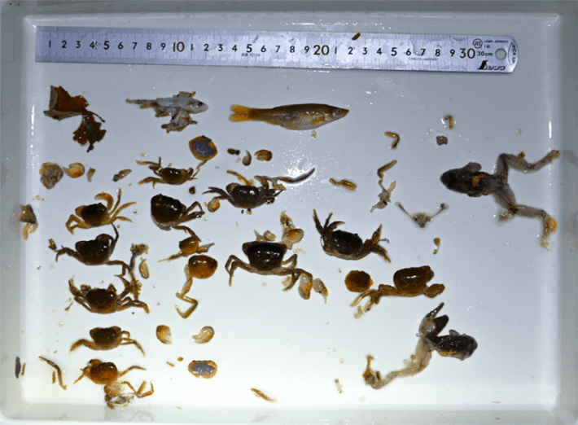
The Monstrous Appetite of Japanese Giant Salamanders
There are monsters lurking in the rivers of southern Japan—giant salamanders that can grow up to five feet long. Second only to their Chinese cousins, these wet-skinned leviathans ...
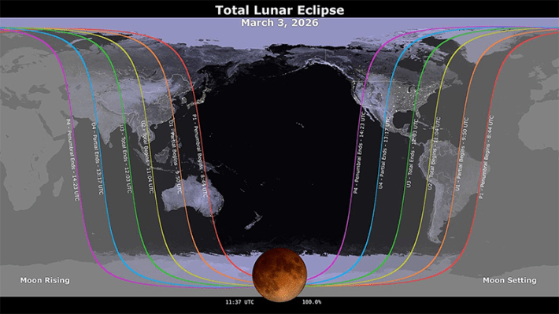
The Many Myths of the Blood Moon
Next month, the blood moon will show its copper-toned face to about a third of the world, including North America.

Scientists Turn to the Internet to Name New Species
Asking the internet to name something is always a little dicey. For every charmingBoaty McBoatfacesubmission, there’s always something a little more … unprintable. But scientists f...

The Ape Who Could Play Make-Believe
We know that other great apes can do a lot of human-like things. SinceJane Goodall’s pioneering studies of chimpanzees, ethologists have amassed decades of observations of both wil...

Was the Human Genome Forged by Fire?
Our mastery of fire is one of the biggest things that sets humans apart from animals. We’ve used it to cook our food, temper our tools, warm our bodies, and ward off predators. It’...

Can the Keto Diet Treat Mental Health Conditions?
Not long after upending federal diet guidelines in order toprioritize “real food”on our plates, United States Health and Human Services Secretary Robert F. Kennedy Jr. has offered ...

Why Teflon Is Losing Its Sticking Power
The same substance that makes for stress-free stir-fries also played a crucial role in the Manhattan Project.

The Secret Deepwater Lives of Beaked Whales
Beaked whales, named for their long snouts, are one of the least-studied marine mammals because they spend a lot of time foraging in the deep. Their dives can last more than two ho...

Did We Just See a Black Hole Explode?
In 2023, a neutrino telescope submerged deep in the Mediterranean Sea struck quantum gold, detecting a neutrino with 100,000 times more energy than even the Large Hadron Collider, ...

Inside the Mouth of Earth’s Oldest Bird
If you’ve ever had the misfortune of staring down the gullet of a screaming goose, you know it contains the stuff of nightmares—a thick, barbed tongue surrounded by an array of fle...

Dream Engineering Could Help You Solve Problems in Your Sleep
Dreams have famously led to some pretty spectacular insights. Chemist Dmitri Mendeleev dreamt up the organization of the periodic table. Mary Shelley dreamt the two main scenes tha...

The Crucial Role of Cities in the Lanternfly Invasion
Invasive species present an interesting paradox for geneticists. Because their founding populations tend to be small, they have less genetic diversity, which means they have a limi...
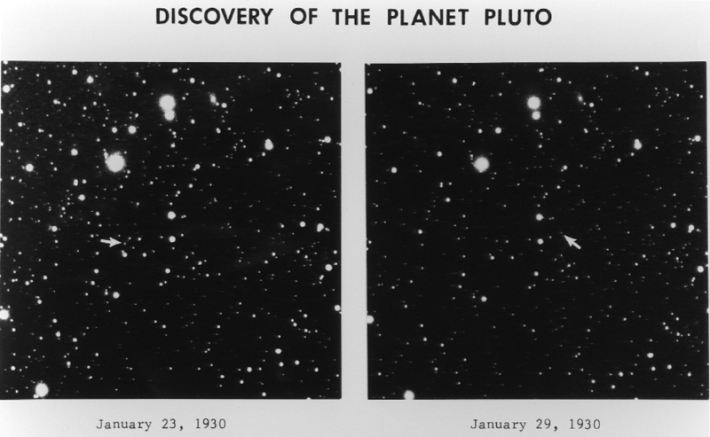
The Farm Boy Who Found Pluto
Nearly a century ago, a young amateur astronomer from humble beginnings made his mark on cosmic history by discovering Pluto—though he didn’t live to learn of its shifting legacy.

How Researchers Are Tracking the Elusive Amazon Manatee
As manatee populations in South Florida arethreatenedby the weight of human impacts, from motorboat strikes to fishing-gear entanglements, it’s imperative to understand how they mi...

The Forgotten Epidemic Born Out of Poverty
In the early 20th century, scientists sought to get to the bottom of amysterious diseasethat caused thousands of deaths per year in the United States. By 1912 in South Carolina alo...

Neurotic People Have More Frequent Sexual Fantasies
The so-called “big five” traits psychologists use to describe human personalities are open-mindedness, conscientiousness, extroversion, agreeableness, and neuroticism. Neuroticism,...

Tripping at Death’s Door: Psychedelics in End-of-Life Care
It’s a question humans have grappled with since the beginning of time. Ancient Egyptians built the pyramids and created theBook of the Deadto guide souls through the afterlife. Bud...

Sleep Categories Are More Complicated Than We Thought
Some people are night owls, and some people are early birds. For early humans, having a mix of both was likely a boon to the community, allowing some to stand watch at night while ...

When Liars Are Perceived as More Moral
If asked, most people would say lying is amoral. But if pressed, our true feelings on the matter are a little more complicated. Whether you call it “creative truth telling,” “massa...

The Birds That Roamed New Zealand A Million Years Ago
Ever since he found a fossilized parrot mandible in 1983, Flinders University paleontologist Trevor Worthy has wondered about the backstory of fossils in Moa Eggshell Cave, North I...
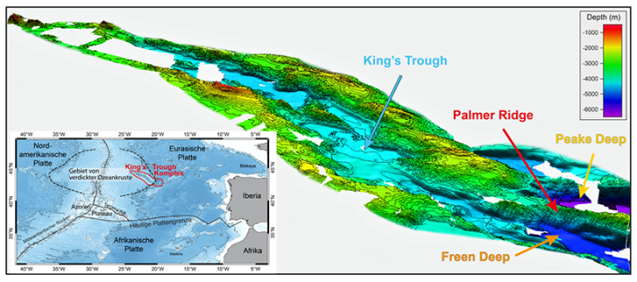
How the “Atlantic Grand Canyon” Came to Exist
On land, most canyons are carved by erosion from rivers over millions of years. In the ocean, things are a bit trickier. The King’s Trough Complex, located more than 600 miles off ...

How Gambling Addiction Is Changing in a Polymarket World
In the last couple of years, the world has become a kind of 24-hour casino. Anyone can place bets on anything at any time from the phone in their pocket. This shift hasn’t been gra...

Let There Be Dark
Walking from the RV campground to the village restaurant in the Grand Canyon National Park this winter wouldn’t have been my first choice. But the RV my family had rented wasn’t pe...
Grad Student Homebrews Cosmic Dust in the Lab
In outer space, floating between the stars, are cosmic dust clouds containingelements and moleculesthat are essential for the evolution of life. While these dust clouds are too far...

How These Caterpillars Use Their Body Hair to Listen for Danger
Farmers in North America are all too familiar with tobacco hornworms. These smooth, lime-green caterpillars, which look like they could be made from Play-Doh, are renowned agricult...

Baby Sauropods Were the Potato Chips of the Jurassic Era
The closest thing we have to a real-life Jurassic Park is the Morrison Formation, a sprawling deposit of fossil-rich sedimentary rock dating back to the Jurassic Period spanning se...

Pink Noise Could be Ruining Your Sleep
If you’re one of the millions of people who use a white noise machine at night, there’s a good chance it doesn’t actually produce true white noise. Instead, many of these sleep aid...

How Brain-Scanning Earbuds Could Build the Perfect Playlist
There’s always that one moment in that one song that never fails to give you goosebumps. Whether it comes from the sonic depth charge of an EDM bass drop, the soaring strains of an...

The Geomagnetic Storm That Sparked Panic Across a Continent
Our star has sent out a series of intense flares over the past day, including the strongest of the year so far. This bombardment arrived thanks to a quickly expanding sunspot that ...
Januari 2026

How Dissociation Blunts Trauma
A few years ago, psychologists began toreporta surge in young people presenting with self-diagnosed dissociative identity disorder, a complex mental health condition that features ...
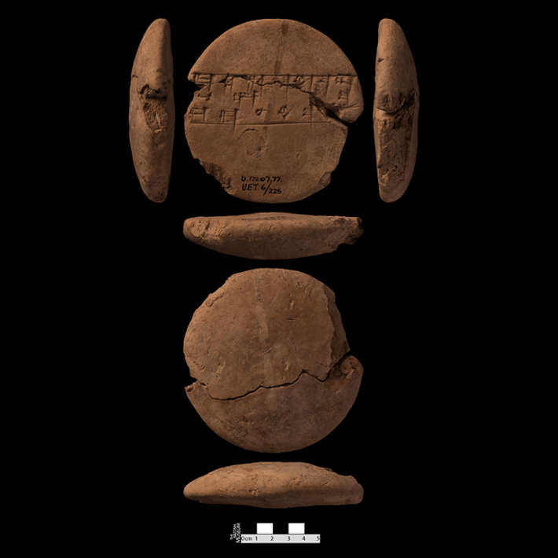
Ancient Jokes Etched in Clay
In some ways, people haven’t changed much over the past few millennia. Artifacts from around the world and across time have revealed that we’ve long cracked jokes. The Romans, for ...

Sex Changes the Brains of Male Mice
Sex differences in the structure of the brain are well-documented, hotly debated, and ultimately, kind of fuzzy. In humans, at least, they tend to be subtle with plenty of overlap ...

When German Shepherds Got Their Cursed Genes
If you have a German Shepherd, you’re probably familiar with the damaging effects of inbreeding on fitness. The weak hind ends and other health problems of German Shepherds are the...
Recreating the Smells of History
This articleoriginally appeared inKnowable Magazine.
The Devastating Disease Neglected for Decades
It took nearly a century of research and advocacy for people with a rare and painful blood condition to receive effective treatment—and barriers still exist for these patients.

Your Lifespan May Depend Much More on Genes Than Previously Thought
It seems like every week there’s a new diet, exercise, or supplement that promises to extend our lives, but how much of our mortality is really in our control? And how much are we ...

Why Waiting in Line Makes Stuff Seem More Valuable
Whether it’s cronuts, ramen burgers, or loaded Instagram-friendly ice cream sundaes, there are always some people willing to line up for hours to get a taste of the latest food fad...
These Animals Are Expertly Adapted to the Cold
Millions of people across the United States nowface frigid temperatures, and some areas are even vulnerable to “exploding trees” (though they’re not what you think). This cold snap...

What Brown-Colored Lake Water Does to Fish
Have you ever wondered why lakes look so brown?

When Tobacco Execs Finally Admitted That Smoking Kills
Four decades after top tobacco executivesdiscoveredthe health risks of smoking, they finallyacknowledgedthese hazards under oath for the first time.
What Sets Off Bomb Cyclones
Over the weekend, a bomb cyclone is forecast to hit the Southeast United States. This prediction follows a week of bitter cold for most of the country andrecord-breakingsnowfall in...

Can Morality Survive Climate Collapse?
In the opening lines of her latest novelA Guardian and a Thief,Megha Majumdar drops us directly in the path of the incipient climate catastrophe: “Kolkata in this ruined year, the ...

How War Is Hell for Birds, Too
During times of war, our primary concern is humans. A prolonged conflict, such as the war in Ukraine, takes a tremendous toll on lives, well-being, and finances. But other species ...
Ann Druyan on How NASA’s Golden Records Got Made
If there are other life forms across the cosmos, how could we possibly communicate with them? More importantly, what should we say? In 1977, NASA launched twin probes Voyager 1 and...

New Study Throws a Wrench in Our Understanding of Memory
Studying the inner workings of the human mind is always a thorny endeavor, and models for how our brains operate are continually being reexamined, revised, and reconfigured. While ...

Why Middle-Aged Americans Can’t Find Happiness
Middle-aged adults are the glue and the gears of modern society. They keep families, communities, and workplaces running smoothly, and form a critical bridge between the oldest and...
How Richard Feynman Found the Root of the Challenger Disaster
On this day 40 years ago, the nation watched with excitement as NASA prepared to launch the first civilian into space: Christa McAuliffe, a teacher from New Hampshire, trained for ...

Can We Protect Science?
The question was asked in the cold alpine air of Davos, Switzerland, where ideas are often spoken with confidence and the future is treated as something that can be managed.Can we ...

How Aspartame Came from a Work Safety Violation
The artificial sweetener aspartame, which is found in everything from diet soda to toothpaste to ice cream, was an accidental discovery. In 1965, American chemist James Schlatter w...

What Exactly Is a Superfood Anyway?
The term “superfood” is sticky. It seems as though every few months, a new food lands in this lofty category of nourishments. Bamboo, a popular ingredient in many traditional Asian...

Why Astronauts Quarantine Before-But Not After-Space Missions
Last week, the first astronauts planning to orbit the moon in more than half a century entered quarantine ahead of their much-awaited mission, which is slated to launch as early as...

Wine That Lights Up When It’s Gone Bad
We might not be able to glow ourselves, but humans have harnessed bioluminescence for all kinds of practical purposes: medical imaging, genetic research, and even experimental canc...

Hot Spring Bathing Doesn’t Just Keep Japanese Monkeys Warm
Like humans, some other primates like to huddle in hot springs. Japanese macaques (Macaca fuscata), also called “snow monkeys,” famously gather at natural hot springs to soak toget...

Do Non-Alcoholic Drinks Actually Help You Stay Sober?
Tis the season of the non-alcoholic drink.

Engineers Build “Bat Accelerator” to Crack Mystery of Stealth Navigation
The faster you go on a bike or in a car, the more things appear to visually stream past. Your brain synthesizes this “optic flow” to estimate your speed relative to a cognitive map...

Ancient Humans Used Straight-Tusk Elephants Bones as Hammers
A little piece of fossilized elephant bone found in southern England offers a window into the life of our human ancestors. Just 4.3 inches by 2.4 inches, the triangular fossil bone...

The Strange Paradox in the RFK Jr. Diet Guidelines
Federal food guidelines recently got a major makeover—and controversy ensued. The new recommendations announced by United States Health and Human Services Secretary Robert F. Kenne...

Workplace Loneliness Is Contagious
The COVID-19 pandemic was a seismic event rippling through nearly every aspect of our lives, but some of the most dramatic and devastating effects occurred in the workplace. Once b...

Did Edison Accidentally Create a Vital Superconductor?
While Thomas Edison was at work on one of his greatest achievements, he may have accidentally produced a substance that wouldn’t be isolated for another century—and it’s currently ...
Revisiting the Last Crewed Moon Mission on the Eve of the Next
Next month, NASA is slated to launch the first crewed mission to the moon in more than half a century.

Holy @#$%! Half of Parents Ok with Their Kids Swearing
Not long ago, cursing among kids elicited an almost universal clutching of pearls. It was seen as a major sign of disrespect and lack of education, a pathway to more problematic be...

Tiny Evidence Upends a Controversial Stonehenge Theory
For centuries, Stonehenge has attracted all sorts of theories—varying widely in credibility—as to how it cropped up some 5,000 years ago.

What Makes This Weekend’s Blizzard So Brutal
This weekend, more than half of the United States—at least 170 million people—is bracing for a winter storm set to span 2,000 miles. On the northern front of the system, from Oklah...

The Strawberry Is a Frankenfruit
Just like humans, most organisms that reproduce via sex are diploid, meaning they have two copies of chromosomes (one from mom and one from dad). With plants, however, things can g...

I Track Space Debris As It Crashes to Earth
Last February, debris from a SpaceX Falcon 9 rocket set the skies of Europe ablaze before crashing down to Earth in Poland, hitting a warehouse in a small village. The next month, ...

The First Person to Get Hit by Space Junk
On this day in 1997, a woman named Lottie Williams was working out in a park near Tulsa, Oklahoma, when sheglimpseda “huge ball of fire” in the sky. A couple minutes later, somethi...

Space Dust Could Contain Building Blocks of Life
The recipe for life seems simple at first blush: Combine organic compounds and liquid water, add an energy source, then simmer for eons. Unfortunately, finding the finished product...
When Passenger Planes Surpassed the Speed of Sound
It was once possible to zip across the pond from New York City to London in under three hours. British Airwaysset this recordin 1996 thanks to the stupendously speedy Concorde, the...
A Closer Look at an Elusive Ancient Plague
The same bacterium behind the Black Death that devastated Europe in the 14th century also ripped through the ancient Mediterranean.

Motivation Can Profoundly Shape Your Memories
Memory is slippery and mysterious. Some events are indelibly etched into our brains, emerging intact decades later, crucial sensory details flooding our minds unbidden. Other impor...

What Would Richard Feynman Make of AI Today?
The first principle is that you must not fool yourself—and you are the easiest person to fool,” Richard Feynman said in a 1974 commencement address at Caltech. He wasn’t speaking a...

The Brain Might Not Function Like We Thought It Did
For over a century, scientists who study the brain have linked function to anatomy. This way of understanding the brain emerged in the early 1900s with German neuropsychiatrist Kor...

How Giant Kangaroos Moved Across Ancient Australia
Ancient kangaroos were huge. A modern kangaroo maxes out at 200 pounds, while some of their forebearers were as massive as 550 pounds. Given their size, paleontologists have analyz...
Heartworms Might Be Much More Ancient Than We Thought
Heartworm infections are increasingly common in pups—in 2022,more than 1.2 milliondogs in the United States were documented with the condition, and infection rates have risen over ...

How Being a Good Dad Makes for Healthier Children
In the history of human parenting, childcare has often been treated as maternal by default, paternal by exception. When mothers do it, it’s duty. When fathers do it, it’s help. A f...

Detailed View of Solar Flare Birth Caught for the First Time
For all of its life-sustaining energy, the sun is pretty chaotic. Roiling plasma covers its surface along with fluidic snarls of magnetic fields that birth solar flares. These fier...

The Promiscuous Lives of Beluga Whales
Belugas and other toothed whales such as dolphins are known to live in stable pods,typically ruled by an older matriarch. How the dynamics of reproduction play out in belugas (Delp...

This Fish Really Does Need a Hole in Its Head
In their watery ocean worlds, fish have some weird features that are used to do some odd things, which we rarely witness. In “studying how strange fish do strange fish things,” bio...

Your Voice Gives Away Valuable Personal Information
The voice is the music of the soul. Since the time of Plato and Aristotle, it’s been linked to a person’s character and inner life. And it often betrays things we try to hide: fati...
Print Edition 65: The Food Issue
Issue 65 of the Nautilus print edition combines some of the best content from our November and December 2025 online issues, and a special Food section. It includes contributions fr...

Your Favorite Zoo Animals Are Getting Old
We hear a lot these days about aging human populations. Projections show the number of Americans 65 years old or older increasing by a whopping 42 percent from 2022 to 2050, accord...

The Confabulations of Oliver Sacks
I loved literature before I loved medicine, and as a medical student, I often found that my textbooks left me cold, their medical jargon somehow missing the point of profound disea...

Tiny Mars has a Big Impact on Our Climate
Millions of years ago, an Ice Age began that altered the course of life on Earth forever. Changing ocean currents made the climate in the Horn of Africa drier. There, dense forests...

Cows Really Can Use Sophisticated Tools
If cows could use tools, imagine the scenes that might unfold: cutting wires to escape from their pastures; extracting themselves from milking machines; or removing the twine on ha...

How Having Kids Makes Parents Disgust-Proof
It’s hard to imagine that soiled diapers could have any side benefits for parents. But recent research suggests that exposure to all that poop trains parents to tune out disgust so...

Why the Do Nothing Challenge Doesn’t Do Much for You
They sit alone in a room, expressionless, doing absolutely nothing, giant timers clocking down the hours and minutes. No books, no devices, no food, no distractions, no sleep. It’s...

Your Infant Knows Exactly What Your Baby Talk Means
Some people refuse to use baby talk with babies. The sing-song repetition of cute nonsense words commonly spoken by adults to infants—and pets—can have a grating quality that makes...

Spaceflight Prematurely Ages Astronauts
Astronauts’ bodies undergo plenty of stress beyond just the extraordinary g-forces at launch. Microgravity, cosmic radiation, biological clock disruptions, and more all take a toll...

How Coastlines Shape the Extinction Risk for Marine Invertebrates
To predict how communities of organisms will respond to environmental changes, scientists look to the deep past. Tracking the relationship between biodiversity change and change ov...

In Pursuit of a Psychedelic Without the Hallucination
Psilocybin—the psychedelic ingredient found in some “magic” mushrooms—has shown a lot of promise for treating depression and anxiety in clinical trials. That’s particularly true ov...
Some Doctors Are Using Emojis With Patients More Often
Emojis have long infiltrated all sorts of communications, including text messages and even work emails. Now, doctors are dropping these expressive icons into medical records.

Watch This Glacier Race into the Sea
You’re looking at one of the quickest moving glaciers in the world—the bright hues added to this satellite image of Jakobshavn Glacier in Greenland represent the average speed of i...

Horses Can Smell How You’re Feeling
If you’ve been lucky enough to meet a friendly horse, then you know they lead with their noses—the first thing they want to do with a new acquaintance, human or otherwise, is to ge...

Tyrannosaurids Took Their Time Growing to 17,000 Pounds
How long did it take for a Tyrannosaurus rex to grow to its maximum size of more than 17,000 pounds?

The Accidental Discovery of Aristotle’s Paradigm-Shifting School
As archaeologists dug at a spot in Athens, Greece slated for a new modern art museum in 1996, they looked for signs of ancient remnants to ensure any ruins wouldn’t be damaged by f...
The Fiery Lifecycle of a Massive Solar Storm Observed for the First Time
Solar flares can wreak havoc on Earth, disrupting radio communications, knocking out electricity, and causing satellites to crash. “Even signals on railway lines can be affected an...

I Turn Scientific Renderings of Space into Art
For many people, Luís Calçada’s imaginative interpretations of the universearethe universe—even if the events they illustrate can’t be observed with the naked eye or happened billi...

As Biodiversity Dwindles, Mosquitos Turn to Human Blood
What female mosquitoes choose to feed on has a bearing on human health, since they transmit pathogens from one host to another. In theory, mosquitoes can take their blood meals fro...

This Hidden Brain Region Could Help You Stay Resilient in Old Age
Old age can land a hard blow. But physical strength and resilience can help you punch back. Without it, older adults become increasingly vulnerable to all kinds of calamities: illn...

Pompeii’s Early Baths Were Petri Dishes
The ancient Romans took bathing seriously—it was a crucial facet of their daily lives, and people from a range of social rungs enjoyed dips in public baths. Romans seem to havetake...

The Secrets of an Undigested Hunk of Woolly Rhinoceros Meat
The stomach of a preserved wolf puppy from the Siberian permafrost concealed a surprise. Inside its stomach was a chunk of frozen meat. Because the wolf (Canis lupus) had been radi...

The Search for Where Consciousness Lives in the Brain
In 1998, neuroscientist Christof Koch bet philosopher David Chalmers that within 25 years, scientists would discover the neural correlates of consciousness. He was certain that we ...

C-Sections Have a Surprisingly Ancient History
Each year in the United States, nearly1.2 million womenhave their children by cesarean section, or around a third of all deliveries—anincreasingtrendthroughout the country over the...

Why Europa Might Not Have Life After All
With vast oceans of liquid water beneath its frozen surface, Europa, one of Jupiter’s four Galilean moons, represents some of scientists’ best hopes for finding life in our solar s...

The Quest for the Perfect Lip-Synching Robot
If we’re ever going to effectively communicate with robots, they’ve got to get better at lip-syncing.

What “Primate” and Other Slasher Monkey Movies Get Wrong
Last Friday marked the major studio release of a graphic new horror moviePrimate. In the film, a chimpanzee named Ben, who has been kept as a pet by a family in Hawaii, is bitten b...

A Billion-Year-Old Piece of Sky Locked Within Ancient Salt Crystals
Based on the fossil record, animals exploded onto the scenenearly 600 million years ago. While that may seem like a long time, Earth had already been around for almost 4 billion ye...

An Asteroid Impact May Explain Our Lopsided Moon
Our moon is curiously lopsided—the near and far sides are pretty different.

Delusions Are Often Not-So-Delusional After All
I feel like I’m sort of being sent a mission,” says Adam, “… like I’m getting messages through the TV.” Adam doesn’t know what his mission is, he clarifies, but it doesn’t feel lik...

How Jupiter and Saturn Dictate Earth’s Oil Deposits
To put it generously, astrology has yet to meet the scientific burden of proof, but that doesn’t mean everything on Earth is unsusceptible to the position of the planets. New resea...

How Brain Waves Shape Your Sense of Self
How do humans know where the self ends and the world begins?

When Fake Nuclear Disaster Fallout Reached Los Angeles
Today in 1965, a nuclear rocket engine exploded in the Nevada desert—scientists purposefully set off the blast, sparking political controversy that lingered for decades.
Take a Look at the Hairy Mouthparts of a Queen Bee
In social insects, queens, after their nuptial mating flight, get to lie around and be tended to by their caste of workers. Because the queen’s only job is to make babies and order...

We’re Evolving Beyond This Rock Right Now
To understand our strange future, we have to remember that we are a dying species, as are all species on the Earth. But this condition is not just because of the inevitable geophys...

How Childbearing Leaves Its Imprint on Mothers’ Biological Age
Having kids is costly. Not just financially, but biologically, too. At least in theory. Evolutionary biologists propose that bodies may have limited energy to split between reprodu...
Space Exploration Speaks to the Core of Who We Are
We don’t often think of space exploration as something that affects our lives directly, but when you take a closer look, you find it touches almost every corner of our biosphere. S...

Astronaut Brains Change Shape in Space
Over the past half-century of manned spaceflight, scientists have learned a lot about how the human body responds once freed from the confines of Earth’s gravity. Vertebrae drift f...

The Trick to Studying Dolphins Without Stressing Them Out
Dolphins, whales, and other beloved marine mammals face myriad harms from human activities. Strains from climate change, pollution, and commercial fishing canprompt health issues, ...

Why Finding Motivation Is Often Such a Struggle
Getting started is the hardest part, as the old chestnut goes. Even when we really want to do something, we may delay taking that first step, especially if some part of it seems li...

Rogue Planet Weighed for the First Time
There are planets out there wandering through space, ejected from their solar systems with no orbit to call home. Known as “rogue planets,” these cosmic nomads are thought to be fa...
These Pills Talk to Your Doctor
It’s easy enough to forget to take a daily pill—but what if your medication could report back to your doctor within minutes of you swallowing it?

Why Is That Monkey Giving Me a Dirty Look?
Sometimes you catch yourself in the mirror making a facial expression you don’t expect, whether it’s a giddy smile for your secret crush or a stink eye for the competition. We thin...

Beer Could Be the Next Frontier in Lab-Grown Meat
Sustainability concerns in conventional meat production have motivated a search for ways to cultivate lab-grown meat. Livestock ranching is environmentally destructive, and also de...

When We Learned Our Universe Is Speeding Up
On this day nearly three decades ago, our view of our cosmic neighborhood changed forever. Our universe seems to be swelling over time at an increasing pace, two groups of scientis...

How Financial Hardship Shows Up in Baby Brains
In the first year of life, human babies are wrinkled, fragile, and vulnerable to all kinds of stressors at home and in the world: chaotic sleep schedules, over-stimulation, parenta...

Genius Dogs Can Learn Words Like Toddlers
You’ve probably seen videos on social media of dogs enthusiastically plucking a toy their owner requested by name from an impossibly large pile of similar toys. Called “gifted word...
Did This Spiral Sea Creature Outlive the Dinosaurs?
Around 66 million years ago, tragedy struck the dinosaurs when a massive space rock barrelled into what’s now the Yucatán Peninsula in southeast Mexico. This killed off around 75 p...

These Overlooked Stars Might Point to Livable Planets
Thousands of our sun’s smaller cousins that aren’t too far from Earth might host worlds amenable to life.

Your Face May Decide What You Like Before You Do
We all subtly mirror the facial expressions of the people around us, smiling when they smile, furrowing our brows in concert, usually without even noticing it. This is known as fac...

How Some People Get Drunk Without Drinking
It’s possible to become intoxicated without taking a single sip of alcohol—and scientists think they’re closer to fully understanding why.

What Baby Planets with the Density of Styrofoam Reveal
Finding an ordinary planet to study turns out to be quite an extraordinary endeavor. The most common size for planets in our universe is larger than Earth but smaller than Neptune....

What Chimps Reveal About Human Parenting
Young chimpanzees differ from human children in a key way—the hairier creatures seem to take physical risks earlier on.

These Women Giggle, Cry, and Sneeze When They Orgasm
Orgasm can make people do funny things. The surge of otherworldly pleasure that comes with the so-called “little death” can break a person’s composure. In the heat of the moment, s...

Did This Drawing Preserve Leonardo da Vinci’s DNA?
IfThe Holy Child, a famed Renaissance-era sketch of Baby Jesus, could speak, what would it tell us?

The Poison-Arrow Technology of Our Hunter-Gatherer Ancestors
In understanding the evolution of humans, archaeologists look back to when our exceptional abilities began. Today, the human capacity to make tools to meet our needs is unprecedent...

The Deep Evolutionary Roots of Sleep
Sleep is risky. When you doze off, your defenses are down, making you an easy mark for predators and other threats. And yet, themajorityof living things do it, including most anima...

The Broom-Like Quality of Worms
What happens when you put an aquatic worm in a dish of sand?

Milky Way’s Twin Causes Rethink of Galactic Evolution
Just like us, galaxies typically go through an awkward period during their adolescence.Recent researchfound that young galaxies collide and merge with other galaxies, developing cl...

Some Brains Switch Gears Better Than Others
We’re bombarded with information every instant of our waking lives. The loud kabloom in the other room that suggests the family cat knocked a book off the shelf. The street scene t...

The Amateur Archaeologist Who Found the Wrong Troy
Three millennia ago, the Greek bard Homer spun an epic yarn thatbecame“the original action film.” TheIliadrecounted the Trojan War, a key event in Greek mythology—some readers took...

Astronomers Witness Star Exploding at the Edge of the Universe
As the James Webb Space Telescope (JWST) continues to peer into the origins of our universe, it’s delivering a steady stream of discoveries back on Earth. One of the latest: the ex...

How These Long-Living Sharks Keep Sharp Vision for Centuries
In the frigid, dark depths of the Arctic and North Atlantic Oceans, you may find huge, lethargic sharks born up to four centuries ago.

Elephant Seals Almost Always Return Home to Give Birth
When a young adult leaves home to work or study, there’s a good chance they’ll settle into life in a new locale. A Pew Research Centersurveyfound only 18 percent of United States a...

A Martian Milestone Captures a Mysterious Dark Spot
You’re looking at a dark, volcanic stretch of Mars, known as Syrtis Major, thatspanssome 800 miles in diameter.This imagewas captured with color filters to highlight the gritty det...
X-rays Were a Life-Saving Accident
The groundbreaking finding that enables doctors to peek inside our bodies and astronomers to probe the mysteries of space was announced on this day, 129 years ago.

This Is the Difference Between Child Prodigies and Late Bloomers
What produces talent? It’s an age-old question. We all remember the early prodigies. Take the brilliant composer Wolfgang Amadeus Mozart, who began composing at age 5 and wrote his...

Everything We Thought We Knew About How Stardust Spreads Across the Cosmos Is Wrong
The elemental building blocks that made life on Earth possible may have originally come from red giant stars, but how they got here has remained something of a mystery. For decades...
This Walking Ape Might Be the Earliest Human Ancestor
Whenever you take a stroll, you take advantage of a key feature that separates us from our ape relatives—bipedalism, or walking upright on two legs.

Here’s What Happens to Your Brain When Your Mind Goes Blank
You know when someone spaces out for a second, and you can’t get their attention? “What are you thinking about?” prompts a response of “Nothing,” which you figure is a euphemism fo...

The Science Behind Better Visualizing Brain Function
One of the ongoing challenges in understanding the workings of the human brain is being able to visualize its activity in real time. Our brains are collections of nerve cells, or n...
How to Glimpse the Prime Meteor Shower of 2026
Tonight, people in the northern hemisphere may glimpse one of the year’s most dazzling meteor showers: the Quadrantids.

Dry January: What Happens to Your Body When You Skip Alcohol for a Month
It’s that time of year again, when revelers swap holiday hangovers for a month of booze-free living. Known as Dry January, this annual ritual has settled into the American calendar...
00 2026

Subscribe in Print to Get a Bonus Issue FREE - Nautilus
Nautilusis the foremost literary science publication to find rigorous science writing told with impeccable style. Our stories will light up your emotions, and introduce you to a de...
Secret Sale - 20% Discount - Nautilus
Nautilus is the foremost literary science publication to find rigorous science writing told with impeccable style. Our stories will light up your emotions, and introduce you to a d...
The Nautilus Newsletter - Nautilus
The most interesting science stories from around the web—carefully curated by the award-winning editors of Nautilus magazine—delivered daily.
Newsletter Confirmation - Join - Nautilus
Sorry, education reformers, it’s still memorization and repetition we need.
Save the Date - The Nautilus Salon Series - Nautilus
Ingen sammanfattning tillgänglig.
Choose your Nautilus membership - Nautilus
Ingen sammanfattning tillgänglig.
Newsletter Sign-Up - SBS Hunter - Nautilus
Ingen sammanfattning tillgänglig.
Exclusive Intro Offer on Nautilus Memberships - Nautilus
Ingen sammanfattning tillgänglig.
Today's Trivia - Saturday - Nautilus
### Beavers Don’t Just Build Dams, They Build Nations

Newsletter Confirmation - LI - Nautilus
An evolutionary biologist clears up common myths
Choose your Nautilus membership - Nautilus
Ingen sammanfattning tillgänglig.
Today's Trivia - Monday - Nautilus
Ingen sammanfattning tillgänglig.

VIP - Nautilus
Science storytelling demands a scrupulousness that takes hours in the field, in the lab, and in conversations with subject matter experts. No corners are cut. That effort is what g...
Subscribe in Print to Get a Bonus Issue FREE - Nautilus
Nautilusis the foremost literary science publication to find rigorous science writing told with impeccable style. Our stories will light up your emotions, and introduce you to a de...
Join page - SOI - Nautilus
Nautilus is the foremost literary science publication to find rigorous science writing told with impeccable style. Our stories will light up your emotions, and introduce you to a d...
Subscribers' Favorite Memberships - Nautilus
Ingen sammanfattning tillgänglig.
Newsletter Sign-Up - SBS Green - Nautilus
Ingen sammanfattning tillgänglig.
Today's Trivia - Thursday - Nautilus
Ingen sammanfattning tillgänglig.
Let Nautilus Fuel Your Love of Science - Nautilus
Ingen sammanfattning tillgänglig.
Welcome to Nautilus - Nautilus
We recently launched a new version of theNautiluswebsite. If you're an existing subscriber, your subscription remains active—you simply need to set up your account to access member...

Newsletter Sign-up - Beehiiv - Nautilus
Ingen sammanfattning tillgänglig.
Today's Trivia - Sunday - Nautilus
Ingen sammanfattning tillgänglig.
WOW 2025 Nice - Nautilus
Ingen sammanfattning tillgänglig.
Nautilus | Products
Introductory price for the first year, then $112/year
Free Moleskine with Annual Subscriptions - Nautilus
Nautilusis the foremost literary science publication to find rigorous science writing told with impeccable style. Our stories will light up your emotions, and introduce you to a de...
Choose your Nautilus membership - Nautilus
Nautilus is the foremost literary science publication to find rigorous science writing told with impeccable style. Our stories will light up your emotions, and introduce you to a d...

Mushroom Punks Zine with Print Subscriptions - Nautilus
Nautilusis the foremost literary science publication to find rigorous science writing told with impeccable style. Our stories will light up your emotions, and introduce you to a de...
Newsletter Sign-up - Animated Ocean B - Nautilus
Ingen sammanfattning tillgänglig.
Jobs - Nautilus
Nautilusis not hiring at this time, but please check back for future opportunities.
Winback Offer - Nautilus
Nautilus is the foremost literary science publication to find rigorous science writing told with impeccable style. Our stories will light up your emotions, and introduce you to a d...

Confirmation with offers - testing - Nautilus
An evolutionary biologist clears up common myths

Confirmation with offers - Nautilus
An evolutionary biologist clears up common myths
Newsletter - Valentine's eBook - Nautilus
Ingen sammanfattning tillgänglig.
SOI Exhibition Info - Nautilus
Ingen sammanfattning tillgänglig.
Nautilus | Products
Ingen sammanfattning tillgänglig.
Q1 2025 NL Subscriber Survey - Targeted - Nautilus
Ingen sammanfattning tillgänglig.

Newsletter Sign-Up - SBS Yellow - Nautilus
Ingen sammanfattning tillgänglig.

Newsletter Sign-up - Animated Ocean A - Nautilus
Ingen sammanfattning tillgänglig.
Q1 2025 NL Subscriber Survey - General - Nautilus
Ingen sammanfattning tillgänglig.
Today's Trivia - Wednesday - Nautilus
Ingen sammanfattning tillgänglig.
Lab Rat Hat Giveaway - Nautilus
HOW TO ENTER: Beginning on February 12, 2025 at 8 a.m. Eastern Time through February 28, 2025 at 8 a.m. Eastern Time, click on the link to one of two survey pages (linkshereandhere...
Newsletter Sign-up - Animated Forest - Nautilus
Ingen sammanfattning tillgänglig.
Former Member Discount - Nautilus
Nautilus is the foremost literary science publication to find rigorous science writing told with impeccable style. Our stories will light up your emotions, and introduce you to a d...
7-Day Trials on Digital - Nautilus
Nautilusis the foremost literary science publication to find rigorous science writing told with impeccable style. Our stories will light up your emotions, and introduce you to a de...
Upgrade from Free - $1 Trial - Nautilus
Nautilus is the foremost literary science publication to find rigorous science writing told with impeccable style. Our stories will light up your emotions, and introduce you to a d...
Let Nautilus Fuel Your Love of Science - Nautilus
Ingen sammanfattning tillgänglig.
About Us - Nautilus
Ingen sammanfattning tillgänglig.
Let Nautilus Fuel Your Love of Science - Nautilus
Ingen sammanfattning tillgänglig.
Contact - Nautilus
Account ManagementGo toAccountto manage or cancel your subscription, change your address, or change your payment options. For customer service or issues with managing your account,...
Newsletter Signup - Jonathan Frakes - Nautilus
Ingen sammanfattning tillgänglig.
Newsletter Confirmation - Valentine's eBook - Nautilus
Ingen sammanfattning tillgänglig.
Newsletter Sign-up - Simple - Nautilus
Ingen sammanfattning tillgänglig.
Premium Subscriber Survey - Summer 2025 - Nautilus
Ingen sammanfattning tillgänglig.
Ultramarine Registration - Nautilus
Ingen sammanfattning tillgänglig.
Best of Nautilus - Annual Subscriptions - Nautilus
Nautilusis the foremost literary science publication to find rigorous science writing told with impeccable style. Our stories will light up your emotions, and introduce you to a de...
Choose your Nautilus membership - Nautilus
Ingen sammanfattning tillgänglig.
Newsletter Sign-Up - Side-by-Side - Nautilus
Ingen sammanfattning tillgänglig.
Today's Trivia - Tuesday - Nautilus
The extinction ending the Triassic period tooka minimum of 1 million yearsto consummate its slaughter, based on our knowledge of rock dating, from the first evidence of darkening s...
Today's Trivia - Friday - Nautilus
Ingen sammanfattning tillgänglig.
Mobilize for the Ocean - Nautilus
NautilusThink is the 501(c)(3) nonprofit arm ofNautilus Magazine, dedicated to fostering a deep appreciation for science, education, and the literary arts. Our mission is to broade...
Subscribe to Nautilus in Print - Nautilus
Nautilusis the foremost literary science publication to find rigorous science writing told with impeccable style. Our stories will light up your emotions, and introduce you to a de...
Referral Program - Pre-Launch - Nautilus
Ingen sammanfattning tillgänglig.
Choose your Nautilus membership - Nautilus
Ingen sammanfattning tillgänglig.
Newsletter Confirmation - Nautilus
After Einstein explained gravity as a consequence of curved spacetime, he tried to explain matter the same way.
Subscribe to Nautilus in Print - Nautilus
Nautilusis the foremost literary science publication to find rigorous science writing told with impeccable style. Our stories will light up your emotions, and introduce you to a de...
Join Nautilus - Friends of Sabine - Nautilus
Nautilus is the foremost literary science publication to find rigorous science writing told with impeccable style. Our stories will light up your emotions, and introduce you to a d...
December 2025
The Photos That Shaped Our Understanding of Earth’s Shape
Despite lingering Flat Earth conspiracy theories, humans have gathered evidence of our planet’s spherical nature for millennia. In the third century B.C., Greek mathematician Erato...

Celebrate the New Year With This Cosmic Champagne Cluster
Before you sip on bubbly to ring in 2026, gaze at this glittery bundle of galaxies that’s nicknamed the “Champagne Cluster,” also known as RM J130558.9+263048.4.

This Robot is Tinier than a Grain of Salt
This isn’t a speck of dust—you’re looking at the world’s tiniest autonomous, programmable robot. This miniscule gizmo could eventually be harnessed to inspect the intricacies of li...

Here’s What’s Happening in the Brain When You’re Improvising
Improvisation is often likened to magic. The artist can seem less like the author than a conduit, as if the music were piped in from somewhere just out of view. Creativity research...
You Might Be Misreading Your Dog
If you’ve ever gazed deeply into your pup’s eyes and felt like you were riding the same emotional wavelength, you might have missed the mark: People’s moods seem to cloud how they ...

The Emotional Cost of Parental Burnout
The holidays can knock the stuffing out of almost anyone. For parents with young kids, the pressure can be extra intense: They have to balance the high expectations that go with th...

When Canaries Actually Worked in Coal Mines
The canary in a coal mine is more than a metaphor—for nearly a century, this bright yellow songbird saved lives around the world by alerting miners of deadly harms deep underground...

Genetic Ancestry Doesn’t Tell Your Whole Story
Genetic ancestry is a concept that has long captured people’s imaginations. It’s no surprise that it’s been turned into a booming industry by companies like 23andMe and Ancestry.co...

AI’s Innate Bias Against Animals
Artificial intelligence seems poised to transform humanity—redefining work, creativity, and the way we interact with the world. But the question of how AI will affect the lives of ...

The Very Human Stressor That Causes Rats to Seek Out Weed, Too
If the holidays have you stressed and desperately searching for a little “me” time to pop a THC gummy, you’re not alone. When it’s provided for them, stressed-out rats will also se...

The Portable Ecosystems of Young Manta Rays
The shallow coastal waters of Florida double as a nursery for Atlantic manta rays (Mobula yarae), where, according to arecent studypublished inMarine Biology, these juvenile morays...

How Does Life Take Hold in Barren Environments?
As the search for life on other planets continues, it provokes questions about how communities of living organisms get their start on barren surfaces. Mars, for example, has expans...

Imagine Your Way to a Better Relationship
A little bit of imagination can go a long way. The evidence keeps piling up. Picture yourself smacking a tennis ball expertly across the net, or performing a difficult piano concer...

One of World’s Rarest Cats Has Finally Resurfaced
A strange looking Southeast Asian cat went missing in Thailand about 30 years ago. The flat-headed cat (Prionailurus planiceps) is unmistakable with its long, flattened forehead an...

Call Your Grandparents This Holiday Season-For Their Health
Have you spoken with your grandparents recently? If not, and these family forebears are still around, perhaps you should consider giving them a ring. Not everyone gets a close gran...

Tasting Tomorrow
In the Mexican city of Puebla, every family has a recipe for tinga. There might be disagreements about whether the stew should be made with chicken or beef, and some might quibble ...

These Odd, Slimy Fish May Have Helped Us Hone Our Sense of Smell
Smell plays a crucial role in our daily lives, and it helped propel our evolution, too. Hundreds of millions of years ago, this sense enabled our early mammal ancestors to find foo...

The Problem With Vaccination Shortfalls in Livestock
Farm animals are attacked by a whole slew of pathogens—from the bacteria causing anthrax to the virus causing avian flu.Louis Pasteur derived the first live vaccines for animals in...

Saturn’s Rings Are Thicker Than We Thought
NASA’s Cassini space probe orbited Saturn for 13 years, when, with its mission complete, it entered a controlled descent, burning up in the ringed planet’s atmosphere. Before its f...

This Big Space Sandwich Broke a Record
This image might look a bit like a radioactive hamburger floating in space, but you’re actually gazing at the biggest planet-forming disk ever seen around a young star. The disorde...

What a Mosquito's Lunch Tells Us About the Ecosystem
Traditional animal surveys are cumbersome—days and weeks of tromping around in the field looking for animals and signs of their presence in tracks, scrapes, and scats. But entomolo...

The Most Beautiful Science of the Year
As Einstein saw it, this is where science begins: “The most beautiful thing we can experience is the mysterious. It is the source of all true art and science. He to whom this emoti...

How to Taste More Intensely
If you can’t detect subtle hints of chocolate in wine or hazelnut in caviar, don’t fret. We might be able to intensify our tasting abilities with training, researchers suggest. Tak...

The Stream Animals Thriving After a Megafire
With climate change bringing higher temperatures and irregular rainfall, wildfires have been ravaging the West Coast of the United States in recent years. A history of limiting nat...

Americans Don’t Seem to Enjoy Negotiating
Negotiation is a useful skill in life. It can help you get a better deal for yourself—whether at work, in the used car lot, or when you’re buying that guitar from the sketchy guy o...

The Taste of Prehistory
Imagining Neanderthal cuisine, we approached chef Josh Lewin, cofounder ofJuliet restaurantin Somerville, MA, who has also concocted dishes inspired by Classical Rome. “What’s 50,0...

Eat Like a Neanderthal
Roughly 120,000 years ago, in what would someday be Spain, a group of Neanderthals prepared their supper. That night’s menu did not feature mammoth, or any other big game.

How to Tell if Someone’s Really Listening
The eyes are the windows to the soul, it is said. They may also betray how much effort we are using to concentrate on our conversation partners. When listening to spoken language r...

How All Those Forever Chemicals End Up on Your Plate
After teeny ocean organisms pick up lingering forever chemicals swirling in water, these man-made substances travel up the food chain—from, say, krill, to anchovies, to the tuna th...

What Does Evolutionary Age Have to Do with a Species’ Extinction?
An old debate centers around what makes species vulnerable to extinction. Traditionally, the evolutionary age of a species was considered independent of how long it had been on Ear...

Is the Mistletoe That inspires Holiday Smooching A Menace to Trees?
For reasons that aren’t entirely clear, people started kissing under mistletoe in 18th century England. Perhaps because mistletoe stays evergreen throughout the year, flourishing w...

Why Does My Lettuce Go Bad so Fast?
There are few things less inspiring to the salad enthusiast than limp, slimy lettuce. Those contaminated greens don’t just look and smell bad—they can also make you sick. But why d...

Did Humans or Climate Push the Neanderthals Over the Edge?
Around 40,000 years ago, a band of early humans rolled into the Iberian Peninsula, an area of Europe thought to have been a late Neanderthal holdout.

Did a Rogue Planet Bring Order to Our Solar System?
A wandering stranger blowing into town, disrupting everyone’s lives, and forever changing the shape of the future is a familiar Hollywood trope, but it might also be the story of o...

This Meal Might BringYou to Tears
Most of us would say we taste food with our tongues. Charles Spence has spent decades showing that we eat with our eyes, our ears, our fingertips, even our emotions.
These “Living Rocks” Are Living It Up
You might think you’re looking at a bunch of mossy rocks, but you’re actually gazing at some of the world’s oldest living creatures—and they’re doing great.

Which Country Is Most Narcissistic?
Accusations of narcissism are so rampant today in popular culture that the term may be on the road to losing all meaning. But in our era of self-absorbed social media, some psychol...

What Makes Someone Good at Reading the Room?
When you walk into a room of people, do you instantly catch the vibe? Can you quickly scan faces and catch the hidden meaning behind the shape of a brow or the twitch of a smile, f...

Does Your Personality Put You At a Higher Risk of Dying?
The study of personality type is probably as old as humankind. Ancient Greek scholar Hippocrates chalked up differences in temperament to imbalances in the body’s constituent fluid...

Monster Stars Roamed the Cosmos at the Dawn of Time
A star becoming a black hole happens in the same way as Ernest Hemingway described going bankrupt: “First it happens gradually, then all at once.” The gradual part of the process c...

The Nautilus Winter Reading List 2025
Isn’t reading books just the best thing in the world? Especially when discontent reigns outside our winter windows. We think so! Nothing picks up our spirits and makes us feel more...

Why Is Spain Spinning?
In fact, The whole Iberian Peninsula, which includes Portugal, is slowly rotating clockwise, according to newresearchpublished inGondwana Research.

These Fatal Gauntlets Kill Thousands of Endangered Seabirds
Commercial ocean fishing has come a long way, from historic hand gathering by coastal communities to fleets of enormous ships that now trawl the oceans. Thousands of miles of fishi...

These Baby Stars Have Mysterious Companions
This cosmic baby photo collection contains 31 young star systems, images captured by the Atacama Large Millimeter Array in Chile. In the bottom right corner, you’ll find a simulati...
Tiny Hints of Soldier Stomach Troubles in Roman Britain
Roman soldiers stationed at a fort called Vindolanda in what’s now northern England—not far from the famous Hadrian’s Wall—seem to have run into some pretty severe tummy troubles.
Eat Your Molecules - Nautilus
Food, food, food. Eat salmon, just not farmed. Wine is good for you. No, it's not. Fasting boosts your immune system. Check that, it gives you migraines. Cottage cheese is the best...

Cosmic Collision Caught on Camera
With the James Webb Space Telescope (JWST) continuing tograb headlines, it’s easy to forget the Hubble Space Telescope (HST) is still zipping around Earth, monitoring the stars. Fi...
When We Were Lunch
Alone in a canoe, Val Plumwood was gliding along a channel in tropical Australia’s Kakadu National Park in 1985 when a huge crocodile rammed her. She paddled to the shore as fast a...

Science Says … Laughter Is Contagious
There are few things more delightful in life than a giddy, runaway laugh shared with a friend. When the mood strikes, chuckles can become contagious. But sometimes these bouts of h...
The Dark Matter of Food
As I swirled and sniffed the red wine in my glass, I felt relieved I didn’t smell any corpses. There was a hint of blackberries—the way the whole bush of the ripe fruit smells afte...

Parachute Science Continues to Prevail in Global South Biodiversity Studies
More than a million species have been described by science, yet experts predict that they add up to less than 15 percent of the total species on Earth. That leaves a lot of species...

The Feathery Dinosaurs That Couldn’t Fly
Ostriches, kiwi birds, and penguins are among the tiny sample of birds that can’t lift their wings (or flippers) and fly. Now, scientists have identified a feathered dinosaur that ...

How Animals Navigate Darkness
The body may know where we’re going before our eyes do, building maps of the world that rely on a kind of internal GPS rather than on landmarks or other visual cues. This process, ...
Ancient Bee Nests Hiding in Regurgitated, Fossilized Bones
Tens of thousands of years ago, some particularly crafty ancient bees decided to take advantage of the food scraps puked up by owls.

The 3 Ways We Read Between the Lines
A simple chat with a neighbor on the street may last only long enough to make you a few minutes late to work. But it still requires a lot of complex brain power to pull off.

We Overestimate the Prevalence of Online Trolls
Social media often feels like a minefield—dodging spiteful and incendiary posts when you’re simply trying to, say, scroll through cute cat photos or seek out Reddit advice on vacuu...

These Butterflies Change Visual Systems with Seasons
Animals are known to change seasonally with their environments. For example, an Arctic fox that sports a snow-white coat in winter sheds to wear a brown-gray summer coat. These cha...

The Silver Lining in Disappointment
Disappointment stings. But this feeling may be more useful than you might think. It seems to help mice change their behavior so that they can avoid similar outcomes in the future, ...

Titan May Not Host a Massive Ocean After All
Beneath Titan’s foggy atmosphere, liquid methane rains down, forming lakes on the frozen surface. In fact, Titan is the only other body in our solar system known to have liquid on ...

Is Earth's Core Like an Onion?
Earth has been compared to an onion, with layers of atmosphere, crust, mantle, and interior. If you metaphorically peel off one layer, you may find one underneath with its own uniq...

How Earth’s Atmosphere Reached the Moon
There’s a mystery lurking on the dusty surface of the moon, one that was uncovered during the first Apollo missions—particles from Earth, including water, found in lunar soil. Now,...

Can True Love Help to Heal a Diseased Heart?
Ancient Greek philosopher Aristotle believed that the heart was the command center of the body and the soul. Not just a mechanical blood pump, but the seat of emotion and intellect...
Ancient Math Hidden in Oldest Known Floral Pottery
If you take a close look at the pottery bearing some of the oldest known plant art, you can find the buds of mathematics—advancements that seem to have emerged millennia before the...

The Psychedelic Scientist
Bruce Damer had theaudience under his Gandalf spell. He was giving a keynote speech in a grand hall at Breaking Convention, a psychedelic-consciousness conference in Exeter, Englan...

An Ancient Fingerprint Among Clues to a 2,000-year-old Invasion of Denmark
More than 2,000 years ago, a mysterious band of attackers descended on an island called Als off Denmark’s coast. Locals seem to have successfully fought back against the marauders ...

The Fishy Inspiration Behind a Bold, Tandem Space Mission
I’m a sucker for remoras. The streamlined fish are the ocean’s perfect hitchhiker, honed by millions of years of evolution to catch a ride with some of the sea’s biggest movers and...

The Emerging Science of Being Hangry
When our stomachs are empty, we may get cranky or snap at the people around us. We’re hangry, we may exclaim, to excuse our mischief. But what’s really going on when this storm of ...

Astronomers Observe Spacetime Whirlpool for the First Time
Einstein’s general theory of relativity comes with a lot of consequences that can best be described as “weird.” Now, for the first time, astronomers have directly observed one of t...

Italian Bears Softened by Centuries of Human Proximity
Among Earth’s creatures, brown bears are pretty undesirable to run into as you stroll through the woods. But if you’re hiking through the mountains of central Italy, it might not b...
How Christianity Redrew Ancient Nubian Tattoos
Over the past 5,000 years, tattoos have served as symbols of identity and life experiences, among other traditions—they’ve even been used to treat ailmentsincluding arthritis. Scie...

Watch a Moth Drink Moose Tears
Those two things might not seem related at first blush, but researchers have recorded, for the first time, images of moths drinking a moose’s tears. The intriguing interaction betw...

A Warming Arctic May Be Changing Polar Bears’ DNA
Average temperatures are climbing around the globe, with particularly severe swings in the Arctic—this region hasheated upnearly four times quicker than the rest of the world over ...

You May Not Need to Slow Your Scroll
Social media can be tough to ignore these days. There is so much of it, and it’s so accessible, right there glowing on the phones in our pockets and purses. Many of us find ourselv...

Is the Secret to Long Life Freedom From Procreation?
In life, there are trade-offs between energy allocation for reproduction and lifespan. With a finite amount of metabolic energy available, where it is allocated makes a difference.

This Hole Punch-Sized Patch Could Help Save Frogs
As animals around the world contend with climate change, disease, and human destruction of their ecosystems, amphibians are particularly vulnerable. As of 2023, around41 percentof ...

How We Changed Cat Sounds Forever
You can learn a lot about a cat by its purr—less so its meow.

Fearsome Marine Predators Prowled Ancient Rivers, Too
A dental discovery in an ancient riverbed in North Dakota is shedding light on one of the most fearsome reptiles to ever swim the seven seas—the mosasaur.

Rabies Virus Helps Map Psilocybin’s Brain Altering Effects
Psychedelic mushrooms have attracted quite a bit of interest from researchers lately. Recent research has hinted both at the effectiveness of psilocybin, the psychoactive compound ...
This Tiny Neon Frog Dwells in the Clouds
A strikingly orange frog that fits on a pencil tip lives among the clouds in Brazil. Scientists encountered the newly named species,Brachycephalus lulai, in the cloud forests that ...
Top Roman Military Officers Loved Their Pet Monkeys
Nearly two millennia ago at an ancient port on the Red Sea, elite Roman officers seem to have kept some unusual primate pets—and loved them dearly.

Was the Earth Created by a Supernova Shockwave?
When a solar system is born, it isn’t really much of a system at all. Instead, it’s just a protostar surrounded by a whirling disc of gas and dust. Given time, gravity, and a varie...

What Laziness Has to do with Beauty
What is it about the Mona Lisa, the Taj Mahal, or a dazzling nature scene that makes them so pleasing to contemplate? Is beauty really in the eye of the beholder, or is there some ...
Orcas and Dolphins Glimpsed Fishing Together for Salmon
Dolphins, with their exceptional echolocation abilities, are skillful at catching fish. But some fish, like Chinook salmon, are too big for them to capture and swallow whole.

Pop Music Is Getting Darker
Beneath the sugary hooks of today’s biggest pop hits, there’s often a distinctly dark undercurrent. Billie Eilish’s “Bad Guy,” about a swaggering antihero who seduces a dad, Eminem...

This Black Hole Blasts Cosmic Wind at 130 Million Miles Per Hour
Deep in the heart of a spiral galaxy, 130 million light-years from Earth, lies a monster—a supermassive black hole 30 million times the mass of our sun. As this behemoth gobbles up...

Hobbits May Have Been Victims of Climate Change
The branches of the human family tree have grown a lot more convoluted over the past 20 years. First, geneticists discovered that Neanderthalsinterbred with humans. Then, paleontol...

This Common Personality Trait May Fuel Serial Killers
The ranks of serial killers seem to overflow with clinical narcissists. Dennis Rader, aka the BTK Killer, was diagnosed by a court-appointed psychiatrist as having narcissistic per...

What an Ancient Sheep Reveals About a Bronze Age Plague
Millennia before the Black Death pandemic killed nearly half of Europe’s population, a different strain of the same plague bacterium,Yersinia pestis, tore across Eurasia. It infect...

Millions of Years Ago These Animals Shaped the Arabian Sea
The sands of Qatar have yielded a secret 21 million years in the keeping. The peninsular, desert country that juts into the Persian Gulf was once the site of a thriving marine ecos...

How Monogamous Are Humans Actually?
Across cultures and millennia, humans have embraced a diversity of sexual and marital arrangements—for instance, around85 percentof human societies in the anthropological record ha...

You Don’t Need a Big Brain to Fly
For terrestrial organisms, the ability to fly opens up a skyful of possibilities. Increased access to mates and food, for two things. And yet, it’s only evolved three times in the ...
Exploding Stars Like We’ve Never Seen Them
When dying stars called white dwarfs rob a stellar neighbor’s hydrogen, the growing stash of hot gas can trigger a violent eruption from the white dwarf’s surface. This may go on f...

What Robots Can Learn from Classical Indian Dance
A swan’s beak, a blossoming lotus flower, a delicate bracelet: These are some of the highly stylized forms the human hand can make in a classical Indian dance form known as Bharata...

Beloved Ancient Chinese Cats Were Wilder Than Once Thought
The precise origins of domesticated cats have puzzled generations of scientists. Recently, genetic analysispinpointed North African wildcatsas the most likely direct ancestor of th...

The Table Condiment That Powers Plant-Eating Giants
Plant-eating animals need to get crafty to get the salt they crave. Because sodium is relatively rare in nature and plants don’t tend to concentrate salts, herbivores get the stuff...

How Many Insects Fill the Air on a Typical Summer Day in the US?
For many in the United States, the soundtrack of a lazy summer evening is the drone of insects filling the air. But how does one translate that languorous buzz to the cumulative in...
Potential Deep-Sea Mining Site Harbors Scores of New Species
The deep seabed offers an alluring source of minerals to sustain our modern lifestyles. But the same sediments that yield valuable substances, from rare earth elements to copper an...

How the Breath Guides Memory
Breath is our body’s metronome, ticking from our first gulp of air at birth to our last exhale when we depart the Earth. Recently, scientists have begun to discover that this funda...

Does Anger Aggravate Pain?
Many of us have felt pain in one form or another. Often, those jabs are paired with a sense of anger, whether it’s toward a person or inanimate object that caused the pain, or some...

How to Really Convince People to Prepare for Climate Disasters
It’s tough to convince people to act when we won’t reap immediate rewards—researchers have found that this psychological barrier applies to managing ourfinances, looking out for ou...
A Speed Camera for the Universe
The universe is enormous. By the time you finish reading this sentence, it will be even more enormous.

Are We Finally Over the “Jaws Effect?”
The movieJawshas been terrifying moviegoers since it hit theaters 50 years ago. Now, thereputational damagethe horror film inflicted on actual sharks may be beginning to wane.

Watch a Frog Eagerly Munch on a Murder Hornet
It might not sound too tasty to us, but some animals snack on hornets, stingers and all, including certain spiders, birds, and frogs. Hornet stings can trigger powerful pain, heart...

Satellite Photobombing Is Disrupting Space Telescope Astronomy
The space around Earth is aswarm with satellites. Recently, the dangers of overcrowding the area lower than 1,200 miles overhead—so-called low Earth orbit (LEO)—have emerged. For e...
Selfies of Endangered Tigers Expose a Robust Population
It’s nearly impossible to see a tiger (Panthera tigris) outside of a zoo. Between habitat loss, prey declines, and poaching, the species has been extirpated from more than 90 perce...

An Ancient Earthquake Might Have Unleashed a Sea Turtle Stampede
Some 80 million years ago, an earthquake seemed to have sent a flock of frightened sea turtles scrambling across the seafloor.

When a Chimp Screams, What Do You Hear?
When you listen to a jungle ape whooping through the canopy what do you hear? If it’s a chimp who’s responsible for the cacophony, it may trigger an ancient form of recognition, fl...

This “Cinderella Sense” May Be Tied to More Than 130 Disorders
A critical sense linked to a whole host of diseases has long lurked right under—or rather within—our noses.

The Air In Hospitals and On Airplanes Is Cleaner Than You Think
We humans stuff ourselves into tight quarters for various reasons. Sometimes we pack by the dozens into airliners bound for Boca. Other times, we’re forced into close proximity as ...
Crick and Watson Did Not Steal Franklin’s Data
Working in Cambridge, James Watson and Francis Crick discovered the double helix in early 1953, while Maurice Wilkins and Rosalind Franklin, researchers at King’s College London, w...

Reality Exists Without Observers? Boooo! - Nautilus
I’ve never been a sports fan, let alone a rabid one, but I think I finally know what it feels like. I was reading a new book,Portals to a New Realityby Vlatko Vedral, when I found ...

Here’s Why Some Insomniacs Can’t Sleep
We’ve all been there. Lying awake in our beds, unable to shed the worries and stresses of the day or days to come when we should be peacefully drifting off to dreamland. For some o...

Did Volcanoes Spark the Black Death?
Human history is pockmarked with periods of death and destruction on unimaginable scales. Of these calamitous epochs, one stands out: The Black Death. The mid 14th century scourge ...

We Finally Know the Time of Day on Mars
Knowing the time is useful for all kinds of things, and now, physicists from the National Institute of Standards and Technology (NIST) have finally figured out what time it is on M...

Why Stress Sparks Hair Loss, According to Mice
If you’ve ever watched your locks pool in the shower drain during a particularly taxing time of your life, you’re not alone—stress-driven hair loss is highly common. Yet scientists...

What Makes a Word Beautiful?
Some words brush the mind like velvet. Words like love, halcyon, or starlight. Others make us cringe, such as moist. Most of us feel this instinctively. But can the aesthetics of a...

Can the US Build a Nuclear Powered Future?
Nearly 70 years ago today, nuclear fission at the country’s first full-scale commercial nuclear power plant became self-sustaining and primed to power homes and businesses. This en...

Living Large: Giant Anacondas Blew Up 12 Million Years Ago
Twelve million years ago, during the Miocene, South America was covered in an even larger tropical jungle than its current verdant swath, with some key differences. Warmer temperat...

Behold the Biggest Dinosaur Parade
Dinosaur tracks always make a stir. Fossilized traces of animals that dominated ecosystems long before humans made their appearance on Earth, they’re literally footprints from the ...

Is the Drought in the Southwest Permanent?
Reservoirs along the Colorado River—some of the most important stores of water in the nation—dwindle by the day, exposing sunken boats, dumped bodies, and barren soils. It’s just t...

Vampire Squid Genome Offers Glimpse Into Octopus Evolution
Lurking deep in the ocean is a crimson, many-limbed beast known asVampyroteuthis infernalis—the “vampire squid from hell.” Despite its theatrical name, this seldom-seen cephalopod ...

A Rare “Fairy Lantern” Finally Comes to Light
Despite its name, this is no light source for a woodland sprite. What you’re gazing at is a type of fairy lantern, an incredibly rare plant. Beyond its mystical appearance and whim...
How to Actually Combat Economic Inequality
The gap between the haves and have-nots has grown even wider in recent decades in many wealthier nations. At the same time, however, researchershave observedthat most people areaga...

Can You Read Pain on a Horse's Face?
Human history is horse history. As soon asHomo sapiensrecognized thetransportation potentialof equines, everything changed. Cultures, languages, goods, customs, could fly along eme...

How This Colorful Bird Inspired the Darkest Fabric
Birds of paradise have long been a source of inspiration. The popularity of their shiny, showy feathers for women’s hat plumes nearly drove the whole bird family (Paradisaeidae) to...

Tiny Volcano-Dwelling Creature Breaks Heat Record
Some like it hot. Really hot. But the prize goes to a tiny squirmy creature known as the fire amoeba of the Cascades, orIncendiamoeba casadensis. It is the most heat-loving eukaryo...

These Bat Buddies Sound Eerily Alike
If your voice has ever started to sound strangely similar to that of a close friend, you have something in common with vampire bats: Female vampire bats may mimic the calls of thei...

ChatGPT’s Biggest Foe: Poetry
In the lastbookof Plato’sThe Republic, the philosopher argues that poetry is a kind of weaponry. It can seduce human emotions and sneak past reason’s guardrails, leading to all kin...

These Monkeys Hint at an Evolutionary Musical Mystery
You might not be the smoothest dancer, but humans are considered uniquely skilled at spontaneously grooving along to music. The ability to move in time with a beat is relatively ra...

The Benefits of Social Media Detox
After a week stuffed with family gatherings, long travel days, and most likely hours spent on personal devices fluttering between social media platforms, many of us may feel the ne...

The Secret Busy Lives of Small Icy Moons
The icy moons at the outer reaches of our solar system are hiding a secret—and it could have important implications for life beyond our planet.

Elephants’ Drone Tolerance Could Aid Conservation Efforts
The old adage that “an elephant never forgets” holds some truth. Between excellent spatialmemoryand ability to remember individual elephants’ and humans’faces, elephants merit the ...
November 2025

How to Print a Human
The first “ghost heart” showed up online around 2005. In photographs, it has every appearance of being a normal heart, except that it’s white.

What Cheese Mold Can Teach Us About Evolution
For some scientists, there’s no place more romantic than a cheese cave. When Tufts University biologist Benjamin Wolfe, then a biology postdoc, shepherded his colleague Rachel to a...

Mapping Children’s Meltdowns in the Brain
Little kid meltdowns leave clear evidence, like food spilled on floors or walls or, say, toys cast across the room. Now, scientists say that they can watch some children’s meltdown...
The Story of Cat Domestication Just Got a Major Twist
Despite oodles of data on dog domestication, the exact origins of our feline friends have long remained fuzzy. We do know that pet cats retained many of their wild cat ancestors’ c...

How Did Language Evolve?
The ability to use especially complex and nuanced language to communicate sets humans apart from other animal species. But how did it evolve? It’s a staggeringly difficult question...

Sharks Show How Animals Scale Like Geometric Objects
It’s a universal fact that as any 3-D object, from a Platonic sphere to a cell to an elephant, grows outward in all directions, its total surface area will increase more slowly tha...

This Tiny Falcon Keeps Cherry Crops Safe
If you’re a farmer, you know what a menace birds can be for your crops—eating the fruits, damaging the leaves, and pooping on the plants. The bird droppings are not just an eyesore...

Easter Island Statue Construction Wasn’t a Top-Down Affair
If anyone recently spotted advanced aircraft buzzing over Easter Island to surveil the mysteriousmoaistatues, they weren’t UFOs. Instead, these drones belonged to terrestrial resea...
Why Some Volcanoes Don’t Explode
Scientists studying volcanoes have long thought that rising magma rich in gas bubbles should quickly zip to the top of a volcano and erupt.

What’s Your City’s Hoofprint?
Many cities, from New York to Los Angeles, are working to reduce the amount of carbon they pump into the atmosphere—from helping residents upgrade to more energy-efficient applianc...

The Seven Sisters Get 3,000 New Siblings
The Maori called themMatariki; to the Celts in Ireland they wereStreoillín; their Hebrew name,Kimah, appears in the Bible multiple times. We call them by the same name the ancient ...

These Rabbit-Size Marsupials Have Chomping Superpowers
Australia has some tough nuts to crack. But to some species of rat kangaroo, busting into the extremely hard seeds of the sandalwood and quandong trees down under is all in a night...

Was Dark Matter Just Detected for the First Time?
When Swiss astronomer Fritz Zwicky caught the Coma galaxy cluster moving faster than its mass should allow in 1933, he came up with a novel theory: There must be some hidden mass t...

Wendy Schmidt
With the emerging tools of AI, machine learning, space telescopes, and so many others, it’s clear that we are just beginning to understand the universe we live in—from the farthest...

Scientists Gaze Into the Heart of a Cosmic Vampire
It’s billions of years in the future, but at some point, our warm, friendly sun exhausts its fuel and eventually collapses into a white dwarf. It’s a common fate for stars that are...

What Would Happen If a Black Hole Ripped Through Your Body
How big must a black hole be to inflict serious injuries—or even death—when whooshing through a person’s body?
Ancient Folklore Upends Dangerous Savanna Myths
Kānhopātrā, a 15th-century saint-poet who lived in what’s now western India, is said to have died while trying to escape a forced marriage to a king. She was buried at the Viṭhṭhal...

These Wolves Shouldn’t Have Been on This Baltic Sea Island in the Bronze Age
Our pet dogs are descendants of domesticated wolves, who allied with ancient humans at some point in our prehistory and stuck with us for millennia, shaped by our selective breedin...

Could Virtual Reality Help Doctors Learn Empathy?
Ever since Frank’s wife passed away a few months ago, he’s barely getting by. His wife used to help with chores and errands, but now Frank struggles just getting to the store becau...

The Five Eras of the Human Brain
Aging tends to roll out in reasonably clear tiers: naïve childhood, the feral teen years, exuberant young adulthood, pragmatic middle-age, sage elderhood, and if you’re lucky, the ...
This Huge Ocean Beast Shifts Sharks’ Evolutionary Timeline
If you were traversing the ancient Tethys ocean some 115 million years ago and encountered gigantic lamniform sharks, you’d most definitely need a bigger boat.

Got Seal Milk?
Mother’s milk is nutritious stuff. Human breast milk contains hormones, fats, antibodies, and more than 200 sugars that promote immune system development and reduce the risk of inf...

Want to Make New Friends?
Making new friends can be awkward. Whether you’re a student at a new school, an empty nester looking to get out more, or a monk parakeet, nobody wants to embarrass themselves or ge...

Harnessing COVID-19 Vaccine Tech to Neutralize Snake Venom
If you live in the temperate zone, you may not realize that snakebites are among the world’s deadliest diseases. In tropical and sub-tropical climes, several million people are env...

Feel Like an Anxious Golden Retriever Some Days?
Let’s face it, dog owners, you don’t always know what you’re getting when you adopt a dog. They range from fearful and clingy to calm and loving to boisterous and aggressive. By ch...

Insights from Cheesy Noodles Inform Neurodegenerative Disease Research
You know how your noodles clump up when you add cheese to them? It’s yummy in a gooey way, with the individual noodles losing their separation. According to a newstudy, cheesifying...

Some Cockroaches Like to Cuddle, Too
As the nights get colder and we hug our loved ones closer, it’s good to remember humans aren’t the only animals who snuggle up because of unpleasant weather. Some penguins, for exa...
These Neanderthals May Have Eaten Their Enemies
At least 41,000 years ago, a grisly scene may have played out in dark limestone caves located in what’s now Belgium. Neanderthals appear to have feasted on their own species, accor...

The Math Shows Jackson Pollock Painted Like a Child Would
Jackson Pollock’s paintings look like beautiful accidents. The 20th-century painter spilled, drizzled, and flung paint from brushes, cans, syringes, and sticks at canvases laid out...

Seeing a Superhero on the Subway Makes People More Likely to Surrender Their Seats
Imagine commuting after a long day of work on a crowded subway. Exhausted, you plop down on the last seat, ready to do a little mindless phone scrolling while the stations that are...

Lions Have Been Keeping One of Their Roars Secret
The throaty roar of an African lion has long inspired wonder or struck fear, even for those who have never seen a wild lion. In the 1980s, MGM Studios finally trademarked the majes...

Why Don’t We Have More Solar Planes?
As you prepare for holiday flights and the many burdens they entail, your concerns of nerve-racking delays and inlaw interactions may overshadow a concerning consequence: Air trave...
“Living Fossil” Discovered by Accident Could Reshape Tree of Life
It’s not uncommon for a new species to be discovered among existing collections; it’s rare that the new species is still alive, though. But that’s what a research team from Charles...

Feeling Magnetism Helps These Little Sea Turtles Find Food
Who would think you could train hatchling sea turtles to dance on cue? Monkeys and circus elephants, maybe, but turtles with their more modestly sized brains? However, that’s what ...

Rocks Are Alive
In embarking on the research and travel for a book about the Earth’s metals and minerals, I was hoping to uncover some of those patterns which the natural world sometimes reveals w...

Moss Might Survive Nearly Two Decades in Space
Moss can make it practically anywhere, from the blustery coasts of Antarctica to high up on Mount Everest—and even in lava fields on the flanks of active volcanoes. That’s because ...
This Ancient Sea Monster Had a Killer Bite and No Teeth
Some 360 million years ago, a terrible and strange sea monster named theDunkleosteuspatrolled shallow seas around the world, terrorizing its neighbors with its formidable razor-lik...

Earth’s Nastiest Neighbor Was Closer Than We Thought
For Earth, there was a day, 4.5 million years ago, that was pretty bad. A giant, mysterious object flying through space smashed into the young planet, forever altering the course o...

The Rise of the Ancient Bogs
Bogs go by many names: mires, mosses, quagmires, muskegs, fens. That lingual diversity reflects their variedinfluenceon the collective imagination and on the planet. Associated wit...

A Leopard Seal Mother’s Love Transcends Death
Leopard seals have a bit of a reputation for being aggressive. Virtually alone at the top of the Antarctic food chain, these territorial apex predators feast on penguins, squid, an...

Crikey! Newly Discovered Snake Species Named After Steve Irwin
Every Nov. 15, the Australia Zoo in Beerwah, Queensland, celebrates Steve Irwin Day to honor the life of the host ofThe Crocodile Hunter. This year, there was more cause for celebr...
These Gory, Rare Fossils Unravel Ancient Marine Rivalries
More than 100 million years ago, huge marine reptiles might have chomped down on marlin-like fish, violently thrashing their prey until their heads ripped off, according to fossils...

Human Evolution Insights Found Up a Neanderthal’s Nose
The Neanderthals of my imagination are usually framed by frozen backdrops. Perhaps wooly creatures—rhinoceros or mammoths—amble past stocky hunters, festooned in the pelts of vanqu...

Here’s How Rocks Heal Themselves in Deep Faults
Earthquakes are pretty straightforward, geologically speaking. Tectonic plates grind against each other at faultlines, building up stress over centuries or millennia. Then that fau...

Did a Violent Land Grab Give These Chimps a Leg Up?
Invading others’ lands doesn’t pay. Or does it? For a population of wild chimps in Uganda, forcibly taking their neighbors’ lands seems to have paved the path to a better life.

Blinking to the Beat
Blinking is a natural reflex. We blink in response to startling stimuli, such as bright lights, loud noises, or objects approaching our eyes. We also blink to keep our eyes moist. ...

AI Might Not Harm Us in the Way You Think
Humanity has long feared the corrupting influence of new technologies. This truism is as ancient as Socrates—as old as writing itself.

Wolves Caught on Camera Fishing for the First Time
On the central coast of British Columbia, the Indigenous Haíɫzaqv or Heiltsuk Nation has been battling an invader: the invasive European green crab. The highly aggressivecreaturego...
The Science of Your Weed’s Stank
Walk by someone smoking weed and you’ll catch the whiff in an instant, even if they are behind closed doors. With recent state-level legalizations of medical and recreational canna...
This Historic Figurine Unearths New Insights Into Ancient Spirituality
This 12,000-year-old clay figurine invites you to contemplate a tender embrace between a woman and a goose. It’s the oldest piece yet discovered to illustrate an interaction betwee...

New AI Model Captures the Milky Way in Stunning Detail
Home to over 100 billion stars, including our sun, the vast Milky Way is understandably difficult to simulate with computer models. The most sophisticated models available can only...

The Ochre Origins of Art
Ochre is a ferrous rock—clay tinged with oxidised iron, one of the commonest metals on Earth. Iron is everywhere. It leaches into soils and run-off. It is held in solution to gathe...

Kale Isn’t the Superfood You Thought
Kale is garnish. Kale is nutritious. Kale is a superfood. Kale is disgusting. These are all things that people have said (or at least felt) about kale. And they track the history o...

The Surprising Benefits of Giving Up
You might've been told to “hang in there” throughout your childhood, asillustratedby a kitten dangling from a rope. But it turns out that quitting might often be your healthiest op...

These Whales Can Eat Anyone Under the Table
And you thought teenage boys ate a lot? Pilot whales in Hawai’i may give the hormone-fueled, growth-spurting food engulfers a run for their money.

These Ants Kill Their Own Queen
Who knew that ants were masters of melodrama? The colonial organisms have long enchanted entomologists and animal behaviorists with their impressive physiological capabilities, uni...
Smelly Socks Make for More Ethical Research
More than 250 million people in about 30 countries are at risk of contracting a disease called river blindness, which can result in irreversible loss of vision. But at the moment, ...

The Medieval Friar Who Foretold Carl Sagan’s “Star-Stuff”
We are made of star-stuff. Few scientific ideas have had as much cultural staying power as this one, which Carl Sagan popularized in his 1980 TV seriesCosmos. The phrase has become...

Ancient Roman Glass Reveals a Hidden “Language”
Long-overlooked clues hiding within ancient Roman glasswork may have uncovered a secret collective of artisans. It’s all thanks to archaeologist and glassblower Hallie Meredith, wh...

These Are the THC Derivatives Poised to Go Up In Smoke
The United States government is finally open for business. But while the short-term spending bill passed by Congress and signed by President Trump this week ended the longest ever ...

Celestial Poetry Illuminates Astronomy
When an Arabic poet praised 12th-century military leader Saladin, he may have been looking to curry favor. But it was astronomers 800 years in the future who would turn out to be m...

A Third of Humanity Has a Headache
If you’re a human living on Earth, chances are that you’re no stranger to headaches. Between divisive politics, a global pandemic, and the general social media cacophony, there are...
This Huge Lizard Stalked the Earth Before Dinos
This is no dinosaur—this big, meat-eating lizard came before the dinos dominated. The latter half of the name of this newly designated species,Tainrakuasuchus bellator, translates ...
Archaeologists Uncover Lost Opioid Tradition in Ancient Egypt
Catching an opiate buzz may have been much more common in Ancient Egypt than we thought, for kings and commoners alike.

Fierce Debate About Earth’s First Animal Heats Up
For years, an intense debate has raged about the origins of animal life on Earth, dividing scientists into two camps: Those who think sponges gave rise to animals and those who thi...

How Rare Are Rare Earth Minerals?
You’ve likely heard a lot of chatter about “rare earth elements/minerals” lately. China and the United Statesjockeying for a sliceof the rare earth material market. The U.S. making...

The Surprisingly Ancient Origins of Your Dog
One of the only things humans have done sort of right was to invent the dog.

Falling Asleep Is More Like Plunging Off a Cliff Than We Thought
Unless you are having a very bad night, you will eventually succumb to sleep, your head sinking into the pillow, your mind releasing its hold on consciousness. If you have insomnia...

For Birds, Beauty Can Be a Curse
Birds are some of the most visually stunning animals on Earth. Consider the peacock, with its eye-fetching train of iridescent tail feathers. Or the paradise tanager, a small songb...

Exploding Star’s Dramatic First Moments Captured
A race against the clock to coordinate an intergovernmental effort to reposition imaging hardware atop a mountain in Chile’s Atacama Desert sounds like something out of a spy thril...
These Martian Caves Might Point to Life
Conditions on Mars make it pretty inhospitable to life. Temperatures can dip below minus 100 degrees Fahrenheit, high-energy UV radiation buffets the planet, and “dust devils” can ...

Easing The Surgical Rehab with Prehab
When someone is training to run amarathon, to perform in a ballet, or to scale a mountain, they prepare through a strict regimen of exercise, sleep, and diet. Undergoing a major su...

Why Are Narwhals Messing with Hydrophones?
Sprinkled throughout Earth’s oceans, thousands of underwater microphones record the sounds of the deep for commercial, military, and scientific purposes. This constellation of hydr...

This Is a Laser Blast Straight to the Psyche
Now this is what I call a long-distance call. This image depicts a powerful laser beam shot from a mountaintop in California to a NASA spacecraft flying through the cosmos, about 1...
We’re Not Alone in Space Weather Chaos
The sun’s strong blasts that have erupted since Sunday have made themselves felt here on Earth. Our star has released threelarge blobs of plasmaand magnetic field, whichresemblebig...

How Moss Fights Crime
You’ve likely stepped on an unlikely crime solver: Mosses may be low-profile, but they can offer a huge help in closing classes. The mat-like plants and their relatives have previo...

The Universe Is a Mirror
Italo Calvino felt it even before all the data were in. “The universe is a mirror,” the science-curious novelist wrote in 1985’sMr. Palomar, “in which we can contemplate only what ...

A Trip Around Our Surprisingly Psychedelic Planet
Evolution seems to have a thing for mind-bending molecules here on planet Earth. Psychedelics are more widespread in nature than you might think. These remarkable compounds, which ...

He Erased Memory in Mice. Then Thought About Erasing His Own
Steve Ramirez was feeling on top of the world in 2015. His father, Pedro Ramirez, had snuck into the United States in the 1980s to escape the civil war in El Salvador. Pedro Ramire...

Take a Trip Through the Milky Way in the Most Detailed Image Yet
The sheer magnitude of our galaxy, the Milky Way, is difficult for the human mind to fully grasp. Its 105,700 light-year width also makes it just about as difficult to capture with...

From Deep Blue Mud, Unexpected Life Emerges
The deep sea is a foreboding, almost impenetrable, place for us surface dwellers; darkness prevents photosynthesis, and animals at great depths must withstand extremely low tempera...
Unique Puke Fossil Reveals New Pterosaur Species
You’ve likely heard of coprolites, or fossilized feces, from which paleontologists can tell a lot about the ancient animals who deposited them. You’ve maybe even heard of gastrolit...

Chameleon's Eyes Have Been Hiding a Secret
Chameleons’ bulging eyes do strange things; they swivel in different directions like periscopes as they peer around their surroundings. One eye may be fixed on you, while the other...

Childhood Friends, Not Moms, Shape Attachment Styles Most
Humans are social animals. We depend on our friends, partners, and family members to steer through troubled waters and cheer us on when we shine. One popular school of psychology k...

How the Spoils of an Infamous Heist Traveled the World
On Christmas morning in 1950, four students who were members of a Scottish nationalist political party carried out a legendary heist. They broke into Westminster Abbey in London an...

Neanderthals: Do a Little Art and Take a Stroll on the Beach
Not a bad little Sunday if you’re a Neanderthal living on the Iberian peninsula about 80,000 years ago: Do a little painting on that cave wall you’ve been meaning to spruce up, and...

Carl Sagan Shared a Shocking Space Secret
As the Cold War simmered between the United States and the Soviet Union, both nations proposed some pretty outlandish ideas—but one of the most mind-boggling was the once-classifie...
Was This Mysterious Mountain Feature an Incan Tax Document?
In southern Peru, Monte Sierpe or “serpent mountain” is dotted with more than 5,000 elusive, meticulously arranged holes that are lined up for nearly a mile. More than six centurie...

These Spiders Build Doppelgängers to Stay Alive
These spiders put on a show for their foes: Arachinids from Peru and the Philippines were observed spinning together surprisingly realistic decoys from detritus, silk, and prey car...

The Brain’s Hidden Drain - Nautilus
Now this is what I call a brain drain. A newly described component of the human brain’s waste removal system has come to light. A network of lymphatic vessels, called the middle me...
Orcas Giveth and Orcas Taketh Away
It seems like orcas are ready for their close-ups. This week, the charismatic marine mammals have made headlines for two very different activities, both captured in unprecedented d...

Is the Moon Worth Mining?
Since time immemorial, the moon has sparked something in humanity—love, longing, wonder, fear, and more. Now we can add one more human emotion to those that our luminous celestial ...

Is There Such a Thing as Too Many Houseplants?
People have adorned their homes with greenery for millennia—in China, for example, people may havebrought plants indoorsmore than 3,000 years ago. But houseplants becameespecially ...

Some Bacteria Have Evolved the Ability to Degrade Plastic
Plastics are easy to throw out but hard to get rid of. Unlike biodegradable materials, bacteria and fungi haven’t evolved the ability to break them down, leaving plastic garbage to...

A Martian Mystery May Finally Be Solved
While this image might look like streaks of mascara absentmindedly left on a pillow, you’re actually glimpsing what appears to be the aftermath of dust avalanches on Mars.

The Secret Lives of Tree Roots
The thrumming subterranean networks of tree roots in forests have been harboring more secrets than we realized: Scientists have now learned that roots time their growth according t...

To Be More Creative, Immigrate
Why do so many great ideas seem to come from people far from home?

Visit Our Solar System’s Tallest Mountains
If you’re an adrenaline junkie who chases breathtaking views, consider summiting these unprecedented peaks—but it’ll bequite the hiketo get there. The solar system’s tallest mounta...

How Super Recognizers See What the Rest of Us Miss
Some people never forget a face. A brief encounter at a party can be enough for them to imprint that person’s visage in their minds so indelibly that they recognize it years later—...

Medieval Medical Misinformation Persists
Centuries before questionable COVID-19 information began rippling through social media, another inaccurate account of infectious disease sparked an early spread ofmisinformation—a ...

Before the Supermoon Showed Its Face It Flashed Us
The lunar surface isn’t pockmarked for no reason. Asteroids have peppered the moon since that sassy celestial body came into being some 4.5 billion years ago. And just last week, a...

A Pretty Anemone Makes Space and Eats Waste
This deep-sea anemone seems to be an amazing roommate. Scientists recently discovered this creature, which was namedParacalliactis tsukisome, living in harmony with hermit crabs of...

The Worm That Survived Multiple Apocalypses
Though their wriggling, oozing forms may provoke a shudder, worms seem like uniquely fragile creatures—prone to getting flattened underfoot, flash-dried on a sidewalk, or crushed i...

The Secret of the Triangle Weaver’s Springy Web
The triangle weaver spider (Hyptiotes cavatus) gets its name from the three-sided web it weaves—and deploys—to capture prey. The spider anchors two corners of the triangle while ho...

The Secret Superpowers of Frog Skin
Clad in their hiking gear, headlights punching through the shadows, Carolina Muñoz and her teammates slogged through the thick foliage of the Amazon jungle of Colombia, searching f...

Octopus Camouflage Could Give Us Better Sunscreen
Cephalopods like squid, octopuses, and cuttlefish are remarkably sneaky—they imitate their marine environments to evade both predators and prey. These expert camouflage skills have...

Fish Forensics Yield Surprising Results
The oceans are teeming with life, but the sheer volume of water on our blue planet makes that life a bit frustrating to find at times. Traditional methods of locating sea creatures...

111,000 Spiders Living in a Giant Subterranean Web
Imagine exploring the depths of a pitch black cave. A sulfurous stream trickles beneath your feet, the air reeks of rotten eggs. With each step you take, the ceiling gets lower and...

When Do People Speak Out Against Tyranny?
Population-level surveillance, through phones, social media, and facial recognition, is on the rise in the United States and around the world. So are punishments for dissent. The e...

Should Teenagers Take Psychedelics for Mental Health?
Plenty of teens have tripped on psychedelics. At a party, a friend may slip them a pill or a tab and suddenly they tumble into the bizarro world of mind-altering drugs, the boundar...

Can Lichen Light the Way to Dinosaur Finds?
For decades, dinosaur seekers have anecdotally noted the presence of distinctive orange growth on fossil bones. It turns out that vibrant orange lichens—crusty little colonies that...

How to Face Your Fears
When Barbara Rothbaum crashed her bike on a hill and broke both her elbows a few years ago, she “needed to be her own therapist,” she says—luckily, she’s a clinical psychologist. R...
Have We Learned King Tut’s Lessons?
In 1922, British archaeologist Howard Carter and his team stumbled across a descending staircase amid rubble and debris near the 12th century B.C. tomb of King Ramses VI in Luxor, ...

Your Exclamation Points Speak Volumes!
I personally don’t mind an exclamation point. In my written communications with colleagues, sources, friends, and family, I let my feelings guide my employment of the punctuation m...

“Tiny T. Rex” Makes Big Waves in Paleontology Community
In 2006, a curious specimen was unearthed in the fossil-dense Hell Creek Formation of eastern Montana—what appeared to be a small Tyrannosaurus rex locked in battle with a Tricerat...

Chimps Can Change Their Minds. Why Can’t We?
Humans aren’t always the rational creatures we like to think we are. If a belief helps us feel good, we often hold onto it—even in the face of evidence to the contrary. Sometimes, ...

Are We Trashing Earth’s Loneliest Spot?
I for one, enjoy a periodic splash of solitude. A solo walk in the woods. A blissful morning of unaccompanied kayaking. An entire hour to myself, reading. But I don’t know if I cou...

Ode to the Jellyfish
Today, we celebrate jellyfish—creatures that have persisted formore than 500 million yearsand are older than dinosaurs. There aremore than 200 recorded speciesof true jellyfish, an...

How Giraffes Got Their Very Long Legs
Giraffes are best known for their elegant necks, stretching high over the savannah like periscopes. We have some pretty good ideas about why evolution granted them these long necks...
The Most Fascinating Findings After A Quarter Century of Science in the ISS
The International Space Station recently celebrated a cosmic milestone—hosting space travelers non-stop for a quarter of a century. In 1998, the ISS was launched as a state-of-the-...
Neanderthals May Have Invented the Original Crayon
In another blow to the image of Neanderthal as brutish troglodyte, we’ve identified the tools the ancient hominin used to draw and decorate. Chunks of hardened clay and sand pigmen...

How Junk Science Threatens Maternal Health
The abortion pill mifepristone is a lifeline for millions of women in the United States. In the 19 states where abortions are now banned, it is often the only way that women cansaf...

Why Do Spiders Decorate Their Webs? A New Piece of the Puzzle
Some spider species harbor a secret at the center of their webs—silken decorations called “stabilimenta” that can resemble anything from spiral doilies to zig-zagged X’s to intrica...
Oktober 2025

The Oldest Female Chimp in Captivity Dies
Susie, the oldest female chimpanzee in human care died at Sunset Zoo in Manhattan, Kansas, this week. Born in 1954, Susie made it to age 71, living more than three decades longer t...

Why We Love Horror Stories
Some of our oldest tales are horror stories. Greek and Roman myths are full of gore, psychological terror and vile corporal punishments.The Odyssey, composed around the eighth or s...

The 19th-Century Entomologist Who Dreamed Up Daylight Savings
Daylight Savings Time is a hot button issue. Whether you love the futzing with the clocks or hate it, there is one historical figure who was a key proponent of the annual springing...

Longevity Secrets of the Animal Kingdom
All living things eventually die. But some of us take a little bit longer to say goodbye, particularly certain nonhuman and ocean-dwelling members of the animal kingdom. Many of th...

Fentanyl’s Deadly Recipe
The opioid crisis that grips the United States has a central chemical villain: fentanyl. The synthetic drug, deadly even in the tiniest doses, flows into the country and is mixed w...
Print Edition 64 - Nautilus
Issue 64 of the Nautilus print edition combines some of the best content from our September and October 2025 online issues. It includes contributions from neuroscientist Grigori Gu...
Humans Have Upended the World’s Balance of Mammals
If you weighed all the world’s mammals, how much of that figure—known asbiomass—would include wild animals? As of 2020, they contributed roughly 5 percent of the biomass of all mam...

Nature’s Prescription for Our Future
For much of my life, I have worked at the intersection of human and environmental health. For three generations, my family has been dedicated to healthcare, with a constant focus o...

No More Tears? Scientists Take a Keen Eye to Onion Slicing
You get home from work after a busy day and rush to prepare dinner. Moments later, you’re reeling from a chemical attack in your own kitchen—onion fumes and a blurry-eyed interrupt...

Here’s What Nuclear Testing Does to the Earth-and Us
Our planet may be headed back to a very dark place.

The Pretense of Political Debate
It is easier to say what freedom of speech isn’t than to say what it is. The first amendment to the United States Constitution protects citizens from a certain kind of government i...

Is Loneliness Really an Epidemic?
In the spring of 2023, Vivek Murthy, then the surgeon general of the United States, declared that Americans were in the midst of an epidemic of loneliness. Murthy asserted that 1 i...

Antarctic Team Drills 6 Million Years Into Earth’s Past
At the end of the Earth there’s a record of sorts, preserved in layers of layers of Antarctic ice—you could even call itour planet’s memory. Now, scientists have unearthed a new ch...

Meet the Real Dr. Frankenstein
Our centuries-long fascination with Frankenstein’s monster—which has inspireddozensof films, including the recent Guillermo del Toro movie—might have been sparked by a scholarly fe...

Hurricane Melissa Could Threaten Some Species with Extinction
Hurricanes are potent agents of change. But just as powerful hurricanes can upend the lives, plans, and livelihoods of humans, they can devastate ecosystems and change the course o...

You Might Be Loving Fluffy to Death
We’ve all seen them: Puppies pushed along in strollers. Cats parading in Halloween costumes custom made for them. Canines and felines so coddled and cuddled that even they know the...

Does This Gene Determine How You Handle Your Booze?
Some people can really hold their liquor. Even after a night of heavy drinking, they don’t get sauced or lose control. Others are more immediately sensitive to the inebriatingeffec...

Can We Beam Away Our Space Junk Problem?
Humanity’s space junk is accumulating rapidly. Low Earth orbit is now exceedingly crowded with satellites, which must constantly navigate a minefield of debris from past rocket lau...
What Happens in Space Matters on Earth
It’s often assumed that Earth is somehow separate from the rest of the universe. Yet changes in environments across the solar system have profoundly influenced the history of human...

Rats Grab Lunch on the Wing
Forget about Pizza Rat. Scientists have found Bat Rat.

The Science of Unrequited Love
We’ve all pined for loves that we knew were impossible. Such crushes may burn intensely, particularly when we are young and inexperienced, but they tend to flame out almost as quic...

Naked Clams and Sunken Ships
Fifteenth-century explorer Christopher Columbus was certain that his expedition had been cursed. Sailing across the Caribbean Sea with four ships in his fleet, a series of brutal s...

How This Haunting Hurricane Illusion Forms
This thick wall of clouds, which resembles the stands in a sprawling sports stadium towering above the viewer, formed at the center of Hurricane Melissa. Yesterday, the “Hurricane ...
A Crisper Look at a Cosmic Creepy Crawler
This eerie space scene, appropriately named the Red Spider Nebula, some 3,000 light-years from Earth, was captured in unprecedented detail by the James Webb Space Telescope and rec...

Witness the Rare Birth of a Water Bear
Water bears are some of the hardiest creatures on Earth: These whimsically-shaped microscopic animals can survive extreme radiation, hypothetical apocalypse, dehydration and starva...

Bats That Glow
Bats are sometimes called the “invisible mammal.” Their nocturnal lifestyle, combined with their silent hunting strategy and hidden haunts make them obscure to all but the most ded...

This Spiritual Eclipse Calendar Might Still Work
One’s fate is linked with the date of their birth, according to an ancient astrological calendar created by the Indigenous Maya people that is still followed by some communities. T...

How “Plant Math” Can Help Predict the Climate’s Future
The earliest climate models of the 1960s and ’70s had a bare land surface with no plants. In these models, rain would fall into mathematical “buckets,” then evaporate back into the...

The World’s Tiniest Wave Tank
The ocean seems infinite when you stand at its edge, stretching in shades of blue to the horizon. But scientists have managed to create a model of this vast body of water that is s...

The Dark Side of Putting Mirrors in Space
Should sunlight be delivered on demand, no matter the time of day?

We Might Not Be So Strange
It seems a rather odd coincidence that in the 4.6 billion years since Earth formed, humans have emerged now. For us to be here, first life itself had to get started, of course, and...

Pink Boulders Reveal a Hidden Antarctic Giant
Unlikely pink granite boulders perched high atop looming volcanic mountains in West Antarctica have yielded their secrets after decades of baffling scientists. By taking precise gr...

This Inca Building was the Original Boom Box
Imagine the sound that a boom box the size of a gymnasium might produce, the rumble and clang of its music echoing through the mountain tops.
The Secrets of Deadly Snake Bites
Snake bites happen in the blink of an eye. Some can strike fleet-footed rodent prey in a flash of scales and fangs that lasts a mere 60 milliseconds. An action so quick, though pot...

Why Have We Never Sampled an Interstellar Comet?
Soon, scientists could take an unprecedented peek at a celebrity visitor from another solar system—the comet 3I/ATLAS. This interstellar sojourner has attracted plenty of fanfare s...

What Poop Reveals About Ancient Humans
Parasites are typically a rather private matter. And so, for that matter, is defecation. So likely never in their wildest dreams did the Loma San Gabriel people (in what is now Mex...

What Is Intelligence?
Marcelo Gleiser rang the church bell to marshal us inside. The clangor cut across a hushed landscape. We were in the Tuscan countryside on an impossibly green hilltop, nothing but ...

How Scavenging Made Us Human
Vultures, hyenas, and other scavengers tend to have less than stellar reputations. Because they are attracted to the smells of decaying flesh they are often associated with death. ...

These Three Species Have Eased Back From the Brink
Green sea turtles are back. Right whales are increasing their numbers. A fish in Virginia has much more room to swim. In what seems like a rare moment, a handful of endangered spec...

Mysterious Deep Sea Habitats Reveal New Species
A dainty porcelain crab and a small shark with large eyes and a glowing belly are two of the newest inductees into the ranks of scientific recognition. Researchers identified both ...

The Problem with Farmed Seafood
In the cold waters of the Pacific, the anchoveta once shimmered in swarms so vast that sailors described them as turning the sea into a river of quicksilver. They were small, unass...

Evolution Is Written in Our Joints
You can tell a lot aboutHomo sapiensfrom their joints. Mainly, you can tell that our species seems anatomically ill-adapted to our lifestyle.

Your Chatbot “Friend” Is Only Pretending to Like You
Last week, Sam Altman, the CEO of OpenAI, tweaked ChatGPT to make it act more like a “friend” again. The company had briefly tuned the dials to make its popular AI chatbot less “ef...

The Cure Hiding in a Rotten Eggplant
A young boy in Nebraska may well have been saved thanks to a particular piece of rotten eggplant collected in South Africa. And a virus it contained.
Check Out the Beak on This Baby Basking Shark
Basking sharks are wonders of the marine realm. This second-largest living fish species can reach 40 feet long and weigh upward of 4.5 tons—all on a diet of plankton. Perhaps becau...
The Trees That Remember the Pyramids
Some trees alive today were young saplings when the Egyptian pyramids were still works in progress. Individual Great Basin Bristlecone Pine scattered thinly across the rocky slopes...

The Hidden Landscape Holding Back the Sea
The ice is melting. The seas, we know, will rise—slowly at first, and then suddenly. Locked within the West Antarctic Ice Sheet alone is enough ice to raise global seassome 16 feet...

Remembering the Genius Who Inspired Celebration of the Mind Da
Martin Gardner, who is honored today with Celebration of the Mind Day, brought math to the masses. For 25 years, Gardner drafted a puzzle column forScientific American, one of the ...

Space Is Raining Junk, and It’s Getting Worse
A huge hunk of burning metal appeared in the Australian desert this past weekend, discovered by mine workers in the remote Pilbara region of Western Australia. Yesterday, the Austr...

This Natural History Museum Heist Rivals the Louvre Robbery
Thieves robbed priceless jewelry from the Louvre this weekend in a brazen heist that involved an electric ladder, a glass cutter, and high-powered scooters. They were in and out of...

What Is Your Brain Doing on Psychedelics?
On a mellow spring night, I gazed at the setting desert sun in Joshua Tree National Park in California. The sun glowed a warm blood-orange and the sky shimmered pink and purple.
Psilocybin Lifted Her Burden
When the COVID-19 pandemic erupted in 2020, Rachel Drayer was on the frontlines. She was a physician assistant in emergency medicine at a large hospital in the Seattle area. Patien...

More Than a Feeling - Nautilus
A lifelong biologist, never in my wildest dreams did I imagine myself strapped into a tuxedo at the Academy Awards, heart racing, about to hear whether a film I worked on would win...

In Awe of Tiny Things
One of the earliest influences for artist, writer, and filmmaker Michael Benson, he says, was the sci-fi epic2001: A Space Odyssey.Beyond stirring childhood wonder, he says the mov...

Half-Male, Half-Female Spider Discovered In Thailand - Nautilus
Most of the living things on Earth lie in the shadows, undiscovered by science. Even conservativeestimateshold that only 13 to 18 percent of organisms have been identified and desc...

Watch My Skeleton Dance
Stripped down to compression shorts and bejeweled with reflective motion capture dots scattered across my body, I recently danced before an array of cameras as a team of researcher...

Can Embracing the Unknown Save Us From Dystopia?
I see technology. I see spirits. They are the same thing,” writes Daniel H. Wilson at the climax of his latest novelHole in the Sky. And indeed, the relationships between science a...

How a Rare Disease Could Yield a Pandemic Drug
Viruses are all around us. These pathogens can sneak past our immune systems and blitz us with infections that lay us out for days or weeks on end. While some viruses eventually re...

The Nautilus Reading List About the Cosmos
We pride ourselves on the surprising vantage points and elegant writing in our articles atNautilus. Those qualities don't come easy. They arise from the authority of our writers.

Could the Sun’s Orbit Shape Evolution?
It’s easy to understand how the price of a bar of chocolate might be correlated with weather patterns in Africa. Most cacao is grown in Africa, so if bad weather were to induce a c...

How the Statues of Easter Island Walked Into Place - Nautilus
Carved from volcanic rock, the mysterious statues of Easter Island—themoai—have loomed large in imaginations for centuries. The provenance of these massive stone sentinels has long...

Lifetime of Friendships Slows Aging
Good friends aren’t just good for a shoulder to lean on in tough times. Studies have shown for at least 40 years that having social support can protect against heart disease, cogni...
Will Trump's Immigration Policies Hurt US Nobel Chances? - Nautilus
Growing up, Omar Yaghi shared a room with his siblings—and some cattle—in Amman, Jordan, with no access to running water or electricity. The son of Palestinian refugees who “could ...
Making Art with Pythons and Lionfish
Some of the most destructive forces in nature are beautiful to behold: A lionfish that drifts like a jeweled fan through the water, a python that glides with muscular grace through...
The Grue Jay Is a Harbinger of Our Future
Hybrid species have long sparked the human imagination: lion-tigers, zebra-horses, minotaurs. Now, we have a brand new chimera to marvel at: the “grue jay,” a dazzling bird that is...
What Happens When an AI Talks with Itself?
We all talk to ourselves. It’s part of being human. We carry an internal monologue with us wherever we go, sometimes without evenfully realizing it. But what happens when an AI tal...

High-Tech Lollipops That Detect Disease
Ashleigh Theberge has alot of questions. “For as long as I can remember, I’ve had a strong interest in the natural world and why things are the way they are,” says the University o...

A Baboon Family Reunion
In 1984, I set in motion a daring experiment. I translocated—moved from one place to another in the wilds of Kenya—three troops of wild baboons. At the time, no other moving of pri...

Was Jesus a Shaman?
Manvir Singh isn’t your typical academic anthropologist. He writes regularly forThe New Yorkeron subjects ranging from the fictional languages ofDuneto the history of all-meat diet...

The Power Grid Is Struggling
The power grid is a puzzle. A patchworked network of hard infrastructure, software, and growing demands at nearly every node. It was a difficult enough system to operate when the i...

Book Weeding and Fruit Fly Data: What Nautilus Editor Katherine Courage Is Tuning Into
When a friend shares a new book, podcast, article, or museum exhibit they enjoyed, it’s a moment of delight and connection. In our crew of editors here atNautilus, we often share t...
How to Get an Elephant’s Attention
If you’re looking to chat with an elephant, make sure to do it face-to-face. These creatures seem to communicate best with people whose bodies and faces are turned toward them, acc...

The Diver Who Witnessed His Own Death
Chris Lemons, a saturation diver from England, is in the rare position of having witnessed his own death. All roughly 40 minutes of it were recorded on video, which he watched the ...

What Made Horses Rideable
When humans began to charge across plains and mountains on the sleek backs of horses, it changed the course of history. The earliest definitive evidence of equestrianism dates to 4...

The Indomitable Jane Goodall
The following reflections and stories are from the bookJane Goodall at 90:Celebrating an Astonishing Lifetime of Science, Advocacy, Humanitarianism, Hope, and Peace,edited by Marc ...

New Life for Rotting Seaweed
Each time Loretta Roberson finds herself in an ominous shadow while scuba diving off the coast of Puerto Rico, she discovers that the culprit isSargassum—large mats of golden-brown...

Daydream Your Way to Life-Changing Insights - Nautilus
Epiphanies tend to strike like lightning bolts—sudden flashes of insight that reshape how a person sees the world or themselves. Ebenezer Scrooge inAChristmas Carolrealizing he’s b...

Should We Bring the Dead Back to Life?
When theBlack Mirrorepisode “Be Right Back” aired in 2013, it was clearly a work of science fiction: Tormented by grief after her husband’s death, a woman named Martha orders a rob...
September 2025

Few Mammals Sleep as Deeply as the Ampurta
Few mammals sleep as deeply as the ampurta. When the blonde, rat-like marsupial returns to its burrow after a night of hunting in the Australian desert, it drifts into aslumber kno...

Seeking Signs of Life on Venus
The planet Venus is a hellish world. Not only is this enigmatic, boiling globe holding tight to its secrets under thick clouds saturated with sulfuric acid, it harbors a biological...

What Does a Fish Say? A New Library of Sounds Has Answers
If a porkfish swims by and no one is there to hear it, does it make a sound?
How Life Thrives in Impossible Places
I was sitting in my garden with a bowl of ice cream in near-total darkness not long ago. It was just after 10pm, not late by any standards except those of a new parent. My two-year...
Ghostly Swamp Lightning Explained - Nautilus
According to myth, ghostly blue lights often called will-o'-the-wisp can trick travelers wandering through cemeteries or wading through wetlands, leading them off track and toward ...

How Blustery Rhetoric About Autism Makes Life Harder for Physicians
A press conference on autism earlier this week was pitched as a medical breakthrough. President Trump and Health and Human Services Secretary Robert F. Kennedy, Jr., had big news t...

Earth’s Largest Mirror Shattered by Science - Nautilus
In southwest Bolivia, near the border with Chile, lies what is commonly referred to as “the world’s largest natural mirror.” When it rains on the massive salt flat called Salar de ...
Butterfly Wings Inspire Barrier-Breaking Nanotech - Nautilus
The science of small is a big business. Microchips, medical devices, and lasers have been getting smaller and smaller for decades. But they’re still too bulky for a variety of adva...

How AI Is Helping Archaeologists Make Discoveries
Archaeologist Jesse Casana was scrolling through thousands of aerial images on his computer looking for signs of ancient sites. The images, taken from planes and drones over the Mi...

A Nano-sized Art Gallery - Nautilus
The 2025 Nobel Prize in Chemistry recognized a revolutionary group of materials called metal-organic frameworks, which were used to make the “PAC-MOF” and “Rainbow Fish” structures...

Modeling the Deep
A desert is never barren. Life can course through even the most inhospitable landscapes—arid wilderness, Antarctic ice fields, or mid-ocean depths—leaving traces of its presence am...

Some Songbirds Use Blinks to Defend Their Territory
White-throated dippers are brown-feathered, plump little songbirds; they usually live along riverbanks and defend their territory by chirping at any birds that drop by. But the lou...

Is Life a Form of Computation?
In 1994, a strange, pixelated machine came to life on a computer screen. It read a string of instructions, copied them, and built a clone of itself—just as the Hungarian-American p...

Granting Legal Rights to Extraterrestrials
The 1982 blockbuster filmE.T.made aliens easy to love. In the film, a crinkled extraterrestrial being with large expressive eyes—looking like the love child of a turtle and an ape—...

New Eyes on Space Weather - Nautilus
The sun is, for now, a reassuringly stable star upon which to hang our fates. But that doesn’t mean it doesn’t haveits moods.

Creating a Cosmic Movie
On June 23, 2025, the world saw the universe with a new pair of eyes.

Hunting the Ghost of the Ocean
More than 60 miles off the coast of Baja, California, the crew of thePacific Stormhauled an underwater microphone behind their boat while scanning the horizon with binoculars for s...

The Queer Lives of Frogs
For the last 30 years or so, well-intentioned toxicologists and environmental scientists have been expressing serious concerns about the harmful effects of chemical pollution on fr...

Is Fake Sugar Bad for Brains?
Sugar substitutes sound pretty sweet. After all, who doesn’t want soda and cookies that come with a much tinier calorie count than the real deal? The pastel-colored packets of almo...
The Heart of a Haunting Galaxy
This eerie space scene lives up to its name—the Phantom Galaxy. Officially known as M74, it has a diameter of around 95,000 light-years, nearly the size of our Milky Way. In this i...

The Deep Ocean Is a Global Public Good
It is a remarkable trait of ours that we are drawn toward what is distant and luminous yet avert our gaze from what is near and dark. Our eyes lift to the heavens, tracing the arc ...

The Lion Versus the Cobra
Ever the apex predator, a stately lion stalks up a rock slab, eyes fixated on one of the few animals that could potentially threaten its life: A cobra. The snake pictured is likely...

How Much Alcohol Are Chimps Imbibing?
Humans started brewing alcohol for consumption thousands of years ago, and researchers have suggested that our ability to break down booze in our bodies has evolutionary roots dati...

What’s Wrong with Having an AI Friend?
Earlier this year professor of psychology Paul Bloom came to the defense of artificial intelligence chatbots as human companions. He wrote inThe New YorkerthatAI companionscan “mak...

Some Dogs Can Learn New Linguistic Tricks
If you’re a human holding a hammer, everything might look like a nail. But what if you’re a dog holding a plush ducky toy in your mouth?

When Revenge Becomes an Addiction
James Kimmel remembers the first time his desire for revenge nearly ruined his life. After years of bullying him, a group of kids in his neighborhood blew up the mailbox at his hom...

What Is Mirror Life?
In 1958, Bizarro made his way into comic strips—an inverted Superman who lives on a planet called Htrae, which is governed by laws opposite of those governing Earth. “I was strivin...

The Greatest Threat to Life on Earth Is Overheating
In spite of all our achievements and Gaia’s benign systems of control, we are still threatened by heat. You will assume I mean global warming and, in part, I do. At first I thought...

What Makes an Opera Star Stand Out? - Nautilus
When Haruka Kondo stepped into the singing booth, she was determined to strip away the mystery behind a successful vocal performance. A starting pitch on a digital piano queued her...

How Rodents Spread Across the Earth
Rodents and primates split off from each other tens of millions of years ago, but they still have a lot in common: Both animal lineages belong to the superorder of placental mammal...

Culture Overtakes Genes in Human Evolution
From epic poetry to game shows, from Stone Age axes to spaceflight, humans have the most complex cultures of any species on Earth. Since the time of Darwin, scientists have suspect...

Long Lives Helped Early Humans Thrive
We’re living longer now than ever before in human history. Not just the extreme record breakers like 121-year-old Jeanne Calment, but average global life expectancy is at an all-ti...
These Aren’t Your Pharoah’s Mummies
Few burial practices are as elaborate and well known as those of Ancient Egypt. The mummification process employed by that desert culture from about 4000 to 945 B.C. has inspired l...

Did Dino’s Make Rivers Wind?
Dinosaurs were the architects of entire ecosystems on Earth. Leaf-munching, ground-trampling, and soil-uprooting by herds of large herbivores like Tricerotops and Edmontosaurus kep...

We Owe It All to Figs
Ripe apples drop about my head . . . The nectarine and curious peach Into my hands themselves do reach.
DNA’s Death Notice
Imagine being able to see what Rosalind Franklin saw, when she and a graduate student first imaged the structure of DNA—and then study the intimate handwritten notes on the back of...

Does Musical Taste Narrow with Age?
As our own personal timelines shorten, so too does our list of favorite tunes. At least, that’s what a group of researchers in Europe suggest. The scientists propose that as we tra...

Can I Give You Some Advice?
I’d tell you not to read this article, but you’d probably ignore me and simply decide for yourself. Even if I listed some well-founded reasons to dissuade you—shouldn’t you really...

Scientists are People, Too
It’s no secret that we’re in an era of endemic skepticism toward science. You see it in the news every day. Figures at the apex of government disregarding decades of well-establish...

The Surprising Fragility of Shark Teeth
Shark teeth are a marvel of evolution. They are so sharp that many island cultures once used them as weapons and tools to hunt and cut up meat. Unlike human teeth, shark teeth line...

Why I Became a Birdwatcher
The first time I met a bird close-up, it was dead. A raven. Even seeing it on the side of the mountain road in Crete was a shock: a large, dark splayed body the size of a small dog...

Where Will the Sloths Go?
A brown-throated three-toed sloth strikes a familiar pose, clinging onto a fencepost as it slowly, very slowly, traverses the grasslands and forests of Costa Rica. Photographer Emm...

These Bats Are Fond of Cuddling
One of the largest and most formidable hunters in the world of bats also appears to be one of the cuddliest. Spectral bats—whose scientific name is worthy of a horror movie:Vampyru...

Rogue Wave Mystery Solved
On New Year’s Day in 1995, an 80-foot wall of water hammered into a gas platform off the coast of Norway in the North Sea. As with most rogue waves, it rolled through the open ocea...
What Having a Magician for a Father Taught Me About Belief
My earliest lessons in observation came not from a laboratory but in the living room, with my father in his tuxedo and top hat. To everyone else, he was “Big Ed,” a larger-than-lif...

Asteroids Whizzing by Will Get New Closeups
Rocketing by at tens of thousands of miles per hour, the asteroids visiting Earth’s neighborhood will get a closeup this week. Using radar, scientists will be scanning these space ...

When Did Nature Burst Into Vivid Color?
The natural world is awash with color, and many of these vibrant hues are meant to be seen. Apples blush red to coax animals to spread their seeds, lavender blooms are violet to lu...

Help Track Hurricane Damage
You likely have just the tool you need to keep your community whole in the wake of a hurricane—in your pocket. With just a smartphone, you can snap photos in your area to provide c...

Why Do Some Forests Survive Megafires?
Five miles down a bumpy dirt road in Plumas National Forest, at the northern end of the Sierra Nevada mountain range, lies a paradox. On one side of the road, a scorched wasteland ...

Our Dark, Unvaccinated Future
On the final night of her pediatric residency in the mid-1970s physician Kathryn Edwards stood by the bedside of a dying toddler. A bacterial infection, Haemophilus influenzae type...

Here’s Why Binge-Watching Is Good for You
We’ve all been there. We think to ourselves,Let’s just watch one more episode, orI’ll read one more chapter before turning off the light. The next thing you know, the clock reads 3...
Early Humans Walked Miles for the Perfect Rock
Imagine walking miles and miles across dangerous terrain frequented by sabertoothed cats just to find the right rock. Around 2.6 million years ago, a group of early hominins in Eas...

Cities Obey the Laws of Living Things
Who would disagree with Dickens that London’s green spaces are the city’s “lungs?” A city is an animal that sleeps, although some never do, like New York City or Hong Kong. All cit...

A Black Jaguar Was Recorded Mating in the Wild
In a feisty first, a black jaguar was recorded mating in the wild. This NSFW clip was captured at Serra do Pardo National Park in the Brazilian Amazon.

The Trouble with Falling in Love While Studying Physics
It’s quite distracting to fall in love while studying physics. I speak from experience. I’m not talking about an esoteric passion for equations or a metaphorical obsession with nat...

How to Measure the Universe
Units span the gap between math and reality, between platonic ideals and physical quantities. But whatareunits? I think it’s one of the most underrated questions in the foundations...

Why This 17-Year-Old Girl Can’t Forget
My memory has ruled my life,” a singular 34-year-old woman told some researchers a couple of decades ago as they sat chatting in their University of California, Irvine, lab. Known ...

Putting Humans First Is Not Natural - Nautilus
The most dangerous myths are the ones we don’t see. Human exceptionalism—the belief that humans are fundamentally separate from and superior to the rest of nature—is one of those m...
Augusti 2025

The Brain Is Wider Than the Sky
Poet Emily Dickinson's famous line that the brain is wider than the sky captures the 10 books featured here. They are more than manuals to axons, dendrites, synapses, and neurotran...
The Artist Who Showed How Plants and Insects Relate
From roughly the 15th through the 19th centuries, most European botanical collectors and artists experienced the Americas through seeds and specimens painstakingly brought back fro...
Print Edition 63: The Climates Issue
Issue 63 of the Nautilus print edition is our Climates Issue. It includes contributions from climate scientist Kate Marvel, author and illustrator A. Kendra Greene, astrophysicist ...
The First-Ever Call Between Astronauts and an Aquanat
Today, August 29, in 1965, a conversation went down between a human positioned more than 200 feet deep in the Pacific Ocean and people floating 99 miles above Earth. On their last ...

In the Land of the Eyeless Dragons
To get to know the olm, Europe’s only exclusively cave-dwelling vertebrate, you need to meet it on its terms. Extremely particular terms.

Heart Attacks in Space - Nautilus
Heart attacks happen in space. And space agencies have a panoply of contortionist protocols that astronauts can use when such emergencies occur out there among the stars.

How to Run Across Death Valley in the Summer
Each summer, runners line up to race 135 miles across Death Valley in California. They run from the lowest point in the country—the salt flats of Badwater, 282 feet below sea level...

An Ancient, Armored Sea Monster
This ancient, armored sea monster snatched its marine prey with a formidable bite more than 300 million years ago. Belonging to the fierceDunkleosteusgenus, it was among the planet...

Extreme Heat Will Change You
The human body is a wonder of adaptations, with clever ways of surviving in even some rather extreme environments. Including fairly extreme heat. Our skin’s blood vessels swell to ...

Reindeer Population Declines Could Be Devastating
Reindeer are nearly synonymous with the polar North. Recognized for their imposing antlers, thick winter coats, and ability to survive in harsh environments, these majestic creatur...
How the Evolution of Everything Shapes the Modern World
For the past century and a half, the concept of evolution has primarily been wielded by those describing change of a purely biological nature. But according to ecologist Mark Velle...

The Source of Phantom Limb Explained
Our brains play many tricks on us. Phantom limb, a condition where amputees feel vivid sensations in a limb that is no longer there, is one of the more mysterious. First documented...
Visit the 7 Most Extreme Planets in the Universe - Nautilus
Among the many joys of traveling, escaping the norm is a top draw. On Earth, that’s a little harder than you might think. Our planet’s various climates may seem distinct, but they ...

The Pleasure of Repetition in Art
Made at the high point of Kline, de Kooning, and Pollock, Andy Warhol’sCampbell’s Soup Canswas a poke in the eye of abstract expressionism. Not only was it blatantly mimetic, but i...

Could This Dwarf Planet in Our Solar System Have Hosted Life?
In the millions of miles between Mars and Jupiter spins a dwarf planet, now seemingly as cold as the many other asteroids around it. But it likely wasn’t always thus. New research ...

When Our World Was a Wasteland - Nautilus
Thirteen-hundred feet under Northern Ireland, Jason Hopps, the engineer and manager of the Kilroot mine, kills the lights of his rusted Land Rover to prove a point. It’s not just d...

The Hidden Role of Sugar in Plant Growth
The fortunes of plants revolve around light and heat. Extremes of temperature can kill many species off quickly, but even small changes can have a huge impact, spurring rapid growt...
Origami Fit for the Cosmos - Nautilus
These enchanting origami figures aren’t just pieces of art—they could help scientists fit more critical equipment on trips through the cosmos.
How Skinks and Honey Badgers Fight Cobra Venom
For most animals, getting bitten by a venomous cobra is a death sentence—and a particularly unpleasant one.

Looking at Art on Psychedelics
How do psychedelics change what we see? Many scientists have tried toanswer this questionby pairing large-scale brain scans with self-reports from tripping study participants. But ...

The Deadly Effects of Touchdown Airbursts
We live in acrowded cosmic neighborhood. Asteroidsswarmour solar system. Interstellar cometswhizpast. Occasionally, something altogether bizarreswingsby. Just this week, a livestre...

This Mars Probe Went Missing - Nautilus
Thirty-two years ago today, on Aug. 21, 1993, NASA’s Mars Observer went eerily quiet—a few days before it was slated to enter Martian orbit. The robotic craft, depicted in this ill...
It’s a Plastic World, After All - Nautilus
Last week, cooperation took a fall. A United Nations treaty to reduce plastic production melted in the sun of opposition from countries who make most of the world's plastic, includ...

New Image of a Cosmic Jet Offers Clues to Mystery
A new astronomical image shows a one-of-a-kind deep space object that seems to peer down at us on Earth like the Eye of Sauron, portrayed as a flaming eye inThe Lord of the Ringsmo...

With Regard to the Invisible - Nautilus
I understand that which is not visible, for example; heat, weight, pleasure, etc.There is the visible that is seen … and the visible that is hidden …

Uncovering the First Map of the Seafloor
Until 1957, most of the public believed that the bottom of the ocean was a flat featureless expanse of sand, stretching endlessly around the globe. Then the first relief map of the...

This Microbe Challenges the Definition of Cellular Life
Scientists recently discovered a microbe with one of the tiniest genomes on Earth. More surprising, the creature is almost entirely dependent on its host: Its genes don’t support a...

The Tortured Paths of the Wound Man - Nautilus
The Wound Man is an image at once troubling and enigmatic. A male figure looks out from the parchment page bearing a multitude of graphic wounds. His skin is covered in bleeding cu...

Wild Orbits Prime Planets for Life - Nautilus
Earth’s history has beenpunctuated by at least five major ice ages. Some of these frigid periods of prolonged global cooling saw much of our planet locked in ice and snow for 100 m...

We’re All Connected - Nautilus
When we set out to make our Climates Issue, we planned to make it wild and expansive. Any way you could think to interpret the wordclimate, you might just find a story on it. But a...

Tiny Backpack Trackers on Petite Fish
For biologists around the world, the invention of small, portable acoustic, radio, and satellite tracking tags has revolutionized their understanding of where animals go and how th...
A Beautiful Accident Etched in Crystal - Nautilus
This is no ordinary garden—the blooms you’re looking at are actually micrometer-sized nanocrystals made from the compound zinc oxide. A group of researchers in Taiwan and Australia...

This Muppet Is a Memory Device - Nautilus
While this might look like an Andy Warhol portrait of a beloved Muppet, the Kermit-y resemblance is purely coincidental. You’re actually looking at what might become a key componen...

The Friendliest Wolf Pack
Reaching Ellesmere Island, in Canada’s far north, is an adventure of its own. It took six domestic flights for Israeli photographer Amit Eshel to get within striking distance, and ...
Solving a Mayan Mystery with Stalagmites
Civilizations rise and fall. The Maya civilization once stretched over tens of thousands of miles in Central America, and during its golden age—known as the Classic Period, which l...

How the Trump Cuts to Climate Science Are Already Changing Everyday Life
Long before Rick Thoman became a climate scientist—before the late-night calls with National Oceanic and Atmospheric Administration offices around Alaska and the long discussions w...

Flat Earthers on a Cruise
We have long regarded humans as the most rational of animals. But as polymathBertrand Russellnoted, we spend our lives looking for evidence of that claim and find little. On the co...

Is Solving the Plastic Problem a Moral Issue? - Nautilus
Plastics in theclouds, infish guts, in our brains, in theplacenta: The Earth and its inhabitants are in the midst of aplastics crisis. A global treaty to address that crisis is lon...

First Views of the Perseid Meteor Shower
This year’sPerseid meteor showerpeaks in the earliest hours of August 13 in the Northern Hemisphere. But Earth has been sailing through these fragments of the comet Swift-Tuttle si...

These Spiders Kill with their Vomit
When an unwitting victim stumbles into a spider web, the host arachnid typically welcomes the hapless creature into its home by wrapping it in silk and piercing it with fangs full ...

The Science of How Art Restoration Works
Art can have incredible power over us. Just ask the millions of people who crowd the Louvre for a glimpse at theMona Lisaor wander through the Vatican to look up at the ornately pa...

Can Humanity Stem the Plastic Tide? - Nautilus
The world is drowning in plastic. This much we know. It seems that every day greets us with fresh evidence that there is no escaping the plastic prison humanity has built for itsel...

Orchids Thrive Among the Dead - Nautilus
Scattered between the gray tombstones of an old cemetery in Aldborough, England, you will find early purple orchids swaying in the shin-high grass. Although farms and cities have c...

How to Watch the Perseid Meteor Shower
Keep an eye on the sky in the wee hours of August 13: We’re due for the peak of the Perseid meteor shower. In this annual spectacle, considered by space nerds to be the primo shoot...
The Data in a Dino’s Smile - Nautilus
In life, a T. rex’s teeth were fearsome. Arguably the majestic carnivore’s most valuable weapon. But 66 million years after the king of dinosaurs exited the Mesozoic scene, its fos...

When Plato Flirted with Tyranny
Few figures loom larger over Western culture than Plato, whoseTheRepublichas profoundly shaped Western thinking for centuries and is among the most assigned texts at English-speaki...

How mRNA Vaccines Work and What New Funding Cuts Mean
Five years ago, a medical breakthrough saved anestimated%20deaths%20prevented%20(Fig.) 14 million to 20 million lives in just one year. At its core is a miniscule piece of harmles...

Are We Hardwired for Biodiversity?
I’ve long ached to greet the greenery around me by name—I don’t want to be surrounded by strangers while hiking in a dense forest, or wandering through a meadow bursting with wildf...

Paradise Lost - Nautilus
Washington State’s Mount Rainier is one of the snowiest mountains in the world. Over the years, all of that snow has birthed dozens of living glaciers, which flow across the landsc...

Replacement Windows to the Soul - Nautilus
Four thousand years ago, a woman had a very fancy artificial eye that she probably wore while she was alive. It was possibly made of natural tar and animal fat or maybe bitumen past...

What a Massive Butterfly Count Reveals
If you wandered through a Midwestern meadow in 1992 to look for butterflies, the odds are good you would have seen many more than if you returned to the same meadow today.

The Magic of Herding - Nautilus
When Doyle Ivie, a 77-year-old farmer and sheepdog trainer in northern Georgia, received an email from Saad Bhamla and Tuhin Chakrabortty, two biophysicists from the Georgia Instit...
How to Count Butterflies - Nautilus
Ingen sammanfattning tillgänglig.

Botox and the Beast - Nautilus
Lithe necks, blown-out lips, eyelashes worthy of a cartoon princess. The camels that compete in Saudi Arabia’s annual King Abdulaziz Camel Festival are a striking bunch. Many conte...

Propaganda Doesn’t Have to Be a Dirty Word
The term propaganda has long been associated with authoritarian regimes, lies, and manipulation. Nathan Crick, a professor of rhetoric and philosophy at Texas A&M University, wants...
Juli 2025

Mom on the Menu - Nautilus
The planet’s 3,000 or so known centipede species don’t initially seem like the nurturing type. Some are so big they prey on mice, bats, and songbirds, while others reportedly munch...

A Glittering Cave Holds Ancient Stories - Nautilus
Deep within a limestone cave in the foothills of Australia’s Victorian Alps, the walls twinkle—and if you look closely, you can make out the movements of the ancestors of the Abori...

We Are Walking Faster Through Cities
The renowned urbanist William Whyte was obsessed with understanding what made a great public space. So in the 1980s, he used increasingly accessible video technology to film pedest...

Huge Study Finds People Want to be Good
An old philosophical chestnut concerns the question of what motivates acts of altruism: selflessness or self-interest. Some argue that humans are most likely to help others in cont...
The First Lunar Road Trip - Nautilus
Today in 1971, David Scott and James Irwin went for a drive—but this was no joyride. Scott and Irwin, NASA astronauts on the Apollo 15 moon mission, became the first people to burn...

These “Junk” Proteins May Fuel Adaptation - Nautilus
Cell biologist Amy Gladfelter recently set out to solve a riddle that concerns one of the most fundamental features of evolution: adaptation. After a decade of study, she had notic...

You Have Never Felt Climate Change Like This - Nautilus
To understand climate change is to understand the magnificence of life on Earth. You can’t know what’s wrong until you know what’s right.
From Whence Lightning - Nautilus
Thunderheads, those massive storm clouds where lightning forms, have harbored a mystery for millennia. Although atmospheric scientists have long understood that lightning arises fr...

What Poseidon Is Telling Us - Nautilus
All the gods like to stir things up every now and then. Apollo gives unwanted gifts. Zeus throws tantrums, flings thunderbolts, assaults boys and women. But no one can mess with an...
How to Thwart Internet Scams - Nautilus
It sounds like a Star Wars movie moment, but when “malicious cyber actors deployed Darkside ransomware,” it was anything but a movie script (CISA, 2021). Ransomware created by hack...

Iris Van Herpen’s New Living Bioluminescent Dress
It was a most intriguing request. “I would love to be a human coral,” said Tekoui ‘Jérémie’ Tamari to biodesigner Chris Bellamy, one night around the campfire.

A Close Look at Rocks from Mars, Collected by Perseverance
These stunning images reveal intimate details about our rocky neighbor Mars and its deep history.

How to Grow Human Bones - Nautilus
In 1668, a Dutch doctor named Jacob van Meekeren had a daring plan. A patient had recently come into his care with a unique injury—a badly deformed skull. He was a soldier who had ...

Stabbing Starfish to Save the Reefs - Nautilus
Divers in the Cook Islands, a small South Pacific nation, areplungingwooden spears into mobs ofstarfish. It’s for good reason—these creatures have turned already sensitive tropical...

When Ideology Overpowers Science
During the summer of 1854, thousands of Londoners contracted cholera during what the contemporary epidemiologist John Snow described as the “most terrible outbreak … which ever occ...

Why We Misunderstand Psychopaths
In 2009, MRI research on psychopathy was presented for the first time in a United States courtroom in the homicide case State v. Brian Dugan. Since then, neuroimaging research on p...
The Dawn of Bathtub Cosmology - Nautilus
Sitting in an emptying bathtub and watching a vortex of water swirl down the drain is one of the simplest joys of childhood (and adulthood for those who shun showers and opt for th...

Marking Time in a Changing World - Nautilus
It’s November, and Arlyn Charlie feels uneasy. As he steps across the frozen surface of the Teetł'it Gwinjik, a river inGwich’in territory in northwest Canada, the ice cracks benea...

All Optimists Are Alike
Leo Tolstoy’s epic novelAnna Kareninahas among the most famous first lines of any book: “All happy families are alike; each unhappy family is unhappy in its own way.” Psychologists...

The Exoplanet That Wasn’t - Nautilus
On today’s date (July 24) in 1991, British physicist Andrew Lyneclaimedto havediscoveredthe first planet outside our solar system—an Earth-shattering announcement following centuri...

Finding the Earth’s First Rock
When geologist Hanika Rizo goes into the field she spends most of her time looking at her feet. Simply by trekking across the stark Arctic landscape in Northern Quebec, and paying ...

A Science Game to Test your Musical Memory
Human musical memory is surprisingly durable:Babiescan recognize familiar tunes, and people with dementia can often recall songs from their youth. Some tunes are especially sticky,...

How a Forest Was Victorious
Cloud-forests form at higher altitudes than rainforests: typically between 3,000 and 8,000 feet above sea level, in steep landscapes of peak, ridge, and valley. The elevation mean...

Viruses That Roam the Fungal Kingdom - Nautilus
This articleoriginally appeared inKnowable Magazine.
How to watch the winds blow across the globe
The paths wind weaves through the world remain largely invisible to us. And it’s proved challenging to track on a large scale over history. But I recently happened uponthis entranc...
Anteaters Have Evolved More Than a Dozen Times - Nautilus
You might not find ants and termites tasty, but plenty of animals have throughout evolutionary history: It turns out that ant-eating mammals have evolved independently more than 12...

The Case Against the Paleo Diet
One of the most enduring defenses of meat eating is that we evolved to do it, and therefore must continue to do so. The claim goes that our ape and hominin ancestors were frequent,...
New Sea Slug Species or Gummy Candy? - Nautilus
The Indo-Pacific Ocean hosts a kaleidoscope of sea creatures, every color imaginable writhing in the shallow reefs and crystal-clear water. And now, thanks to the efforts of amateu...

The Inner Lives of Cells - Nautilus
This articleoriginally appeared inKnowable Magazine.
Neanderthals Might Have Shared Family Recipes - Nautilus
If you treasure the recipe for your aunt’s special pasta salad, you might have something in common with Neanderthals. Our ancient ancestors may have passed down family cooking trad...

Close Up on the Green Crowned Brilliant Hummingbird
In 1851, during the Great Exhibition in London, England, a collection of stuffed hummingbirds attracted over 75,000 people, including Queen Victoria, Charles Dickens, and Charles D...

How Heat Could Change the Nature of Work
When a work room is hot and sticky, it can be challenging to focus—and people can get grumpy quickly. While many studies have looked at the impact of heat on individuals’ ability t...

Why Peace-Loving Microbes Often Win
Peer at a drop of pond scum under a microscope, and you will see a world of tiny microbes duking it out for their share of real estate and resources. To gain the upper hand, some o...

Charting the Blue Realm - Nautilus
We live on a planet veiled in blue. And yet, though the ocean surrounds us, nourishes us, shapes our weather and our myths, our knowledge of it is limited. This paradox—of presence...

Laura Poppick on Her 3 Greatest Revelations While Writing Strata
Fire may seem as inherent to this planet as earth, wind, and water. But while writingStrata, I learned that flames were all but absent here for more than 90 percent of Earth’s exis...

The Stories Rocks Tell Us - Nautilus
The walls of Wyoming’s Bighorn Canyon rise above a slender lake that once ran as a river. That river flowed for many thousands of years, surging at the end of the last ice age as m...

A (Complicated) Ode to the Honeybee - Nautilus
If you walk through my community garden, past the prolific greenery, tucked into a shaded corner, just next to the stacks of hives, you’ll find an altar adorned with a jar of honey...

These Rowdy Rhinos Need a New Home
In January 2024, officials from the Kenya Wildlife Service undertook a massive mission: translocating 21 black rhinoceroses (Diceros bicornis) to a region where they hadn’t lived f...

14 Animals Still Stranded at French Marine Park
Over the past six months, algae has spread bloom by bloom across the crumbling tanks of a now-closed marine park called Marineland Antibes on the French Riviera, polluting the wate...
Simulations Suggest Locations of Hidden Orphan Galaxies
Our cosmic neighborhood may be teeming with hidden galaxies. And if new simulations that suggest the existence of such features are borne out by actual observations, we may better ...

How Waves Shape the Earth
When wind blows across the ocean’s surface, it forms a wave. A single wave can travel thousands of miles before breaking on land; for example, some waves generated off the coast of...

The Inner Worlds of Reptiles - Nautilus
Tortoises have feelings, too: Researchers have provided the first solid evidence that these long-lived reptiles experience moods, a crucial aspect of sentience. This finding adds n...

Is the State of the World Causing You Pain? - Nautilus
These days, many people struggle to keep up with the state of the world without being overcome by a sense of despair that’s as profound as it is difficult to describe. Unless you h...

The Age of Your Brain Could Predict Your Death
Age is just a number, they say. But being young at heart might be less important than being “young” in other places.

Cooking up the Bread and Beer of Ancient Egyptians
From the most wretched servant to the most exalted prince, people in ancient Egypt ate bread and drank beer with every meal. These staples were so vital to their diet that, in Egyp...

How Coral Reefs Survived the Ice Age
I used to look at coral fossils and think, how great things must have been for these creatures back before humans began stirring up trouble for the planet, like extreme heat and po...

A Close-Up of the Virgo Cluster
Our universe contains multitudes. And the newly operationalVera C. RubinObservatory is capturing more details of these multitudes for us to behold—and learn from. One revelation is...

Does Anybody Really Know What Time Is? - Nautilus
I’ve been fascinated by time for as long as I can remember. In my undergraduate physics classes, time always lurked in the background—it was the “t” that the professors sprinkled i...

Art and Science in a Grain of Sand - Nautilus
Science and art are, in many ways, parallel forms of inquiry: They arise from the human imagination, profoundly shape our understanding of the universe, involve experimentation, an...

A Hymn Lost for a Millennium - Nautilus
“Wealth and splendor—what befit mankind—Are bestowed, multiplied, and regally granted.”

Monumental Burial Mounds Rewrite Ancient History - Nautilus
Ancient works of impressive architecture inspire awe the world over. The Great Pyramid of Giza. The Parthenon in Athens. Machu Picchu in Peru. But archaeologists had previously ass...
The Nautilus Summer Reading List - Nautilus
An extraordinary vacation is one that opens the mind. When turning the corner in a new place brings a shift in perspective that sparks surprise and delight—and, if you’re lucky, ev...

Lefties Aren’t as Creative as We Thought - Nautilus
The pantheon of artists and musicians is littered with lefties: Vincent van Gogh, Jimi Hendrix, Emily Dickinson, David Bowie, Lady Gaga, to name just a few. In the popular imaginat...

Is It Cake? How Our Brain Deciphers Materials - Nautilus
One of the greatest questions of the modern age is: Is it cake? As in: Is it anespresso machine, or cake?Paint can, or cake?Air fryer, or …? Millions of viewers have watched rapt a...

Leap of Faith - Nautilus
Lemurs are remarkably lithe creatures. With long tails providing balance and powerful, slender limbs outfitted with opposable thumbs and toes, they move with ease through the cragg...

The Link Between Dairy and Dreams
Ebenezer Scrooge might have been onto something about cheese and nightmares. In Charles Dickens’A Christmas Carol, the grumpattributedhis ghost sighting, in part, to a “a crumb of ...

How Gaming Could Help Cure Cancer
Consider a gamer playing a game. Maybe one of them is in a room near you right now. You hear periodic outbursts of anger and joy. They’ve been at it for hours. These games might be...

These Bees Trick Others into Caring for Their Young
In England’s Hertfordshire county, a fork-jawed nomad bee (Nomada ruficornis) dangles from a single blade of grass, covered in morning dew. It rests in preparation for another day ...

How a Saltier Ocean Could Upset the Climate
The waters around Antarctica have suddenly and unexpectedly started getting saltier. This flips a decades-long trend of falling ocean salinity, which had protected southern sea ice...

The Past Is a Ghost and the Future a Fantasy - Nautilus
It’s strange how your brain can fool you—and how something small, some offhand detail, can shake your confidence in the way you remember your own life.
Juni 2025

Laughing Apes Take Risks - Nautilus
You’ve likely experienced it before: Feeling your worst after a series of soul-crushing setbacks, say, getting a flat tire shortly after losing your favorite watch. But when a frie...
Print Edition 62 - Nautilus
Issue 62 of the Nautilus print edition combines some of the best content from our May and June 2025 online issues. It includes contributions from science writer Amanda Gefter, evol...

Our Primitive Understanding of Language-Nautilus
If humans have been talking for 200,000 years—for most of our species’ existence, that is—then an estimated half a million languages might have been spoken in all. To put that numb...
Ancient Seas Hosted the Ultimate Squid Game - Nautilus
One hundred million years ago, there were plenty of fish in the sea. But you know what there were more of? Squids.

The Ecosystem Dynamics That Can Make or Break an Invasion - Nautilus
For decades, ecologists have puzzled over a mystery: Why do some natural habitats get overrun by invasive species while others seem to repel outside threats? Ina classic 1958 booko...

“There Were Periods When I Felt He Ruined My Life” - Nautilus
Amanda Gefter has lived with Peter Putnam in her head for 12 years now. “I feel like I know him better than the actual people I know,” she said to me with a peal of laughter, as if...

Your Mind is Part of the Ecosystem-Nautilus
There is a really deep reason why, when you examine things from an unusual (to humans) point of view, they become strange in such a way that you need to include your own perspectiv...

AI Already Knows Us Too Well - Nautilus
A few weeks ago, GPT-4 prompted me when I logged in. “Would you like to see my description of you, based on our chats, to share on social media?” the chatbot asked me. Being an AI ...

How the Universe's Largest Map Changes the Big Bang Theory
Astronomers recently published the largest map of the universe, stretching back more than 13 billion years, which revealed a surprise: Many galaxies were already highly evolved at ...

When Humans Re-Shaped the Earth with Fire
Few skills play a more elemental role in the story of humanity’s progress from hunter-gatherer to civilization builder than the mastery of fire. These blazes provided not just warm...

The Weird Cooling Effect of Wildfires - Nautilus
Hardly two months into Canada’s historic wildfire season, the country is already well on its way to one of the most devastating fire seasons on record. The racing flames haveclaime...

An Elephant's Tusk Never Forgets - Nautilus
As the Siberian permafrost melts, it’s revealing an increasing number of millennia-old woolly mammoth tusks. These ancient tusks might be sating some of the global demand for ivory...

Brain Science on Psychedelics
Last week, thousands of scientists, practitioners, entrepreneurs, and members of the curious public converged on Denver for the annual Psychedelic Science conference. Neuroscience ...

The Sublime Intelligence of Slime Molds
Slime molds can be more dazzling in appearance than their name suggests. Like fungi, these difficult-to-classify organisms reproduce with spores, and to release these spores, they ...

Orcas are Using Kelp to Create Massage Rollers
One day last June, scientists from the Center for Whale Research launched a drone camera above a group of orcas swimming off the coast of Washington State. They captured 20 minutes...

The Woman Behind the World’s Biggest Camera - Nautilus
Today, the world will get its first glimpse at the cosmos through the eyes of the Vera C. Rubin Observatory, which is perched atop Cerro Pachón, a nearly 9,000-foot peak in Chile. ...

Why AI Won’t Take Over: Sci-fi master Adrian Tchaikovsky
A malfunctioning robot butler in search of a purpose. Spiders infected by a virus that accelerated their cognitive evolution. A dissident ecologist exiled to another planet for cha...

Why Certain Smells Stink
Most of us know a stink when we smell one. Yesterday’s fish or last week’s socks can cause us to retch. But other familiar scents can conjure the opposite effect: A distinctiveeau ...

What if Every Roadkill Had a Memorial-Nautilus
We saw it happening, my then-girlfriend and I: The little bird suddenly flew out of the bushes by the roadside, darted low across the tarmac, and then disappeared into the right re...

African Hornbill Skulls Flood Foreign Markets
In October of 2023, a shipment of 45 hornbill skulls from Cameroon in Africa was seized by United States Fish and Wildlife Service officials at an airport in New York City. The sku...

How Neanderthals Made it to Siberia the 2nd Time
Tens of thousands of years ago, during the Pleistocene epoch, Neanderthals trekked more than 2,000 miles on foot from the Caucasus Mountains in Eastern Europe to a chain of caves i...

How Ancient Beasts Spread Sweet Fruits - Nautilus
In lush South American forests millions of years ago, trees and massive animals might have helped each other thrive. Trees evolved oversized fruits, which attracted hulking creatur...

Sleep Time Is Cultural-Nautilus
In Japan, late nights are a way of life—the final trains of the night are often packed with people traveling back home in the midnight hours from work or a night out. In fact, stud...
Finding Peter Putnam - Nautilus
The neighborhood was quiet. There was a chill in the air. The scent of Spanish moss hung from the cypress trees. Plumes of white smoke rose from the burning cane fields and stretch...

How to Build a Planet from Dust - Nautilus
Interstellar dust tends to be very, very small. Take your average dust mote floating in a ray of sunlight here on Earth and shrink it down to about 1,000th of its size, then you ha...
The Human Music of Oaks and Orchids
On a crisp April morning, Lucas Gutierrez, a multidisciplinary artist based in Berlin, walks over to a 150-year-old oak inside Castello di Potentino’s wine estate in Tuscany. “This...
Today’s Octopus Maps May Bias People Against Migrants
For centuries, an odd form of iconography has maintained a stranglehold over the globe: the octopus map. Political cartoonists and mapmakers have long used the creature to illustra...

How To Tell If You’re Dead - Nautilus
Jimo Borjigin never intended to study death. Back in the mid-2010s, the consciousness researcher at the University of Michigan Medical School in Ann Arbor was instead interested i...

We Are the Ocean - Nautilus
The sun was setting on the ocean, but the voice of Whaia was rising. The singer from New Zealand, rooted in Maori and Pasifika ancestry, was lifting our spirits with incantations t...
When Monsters Came for Mathematics - Nautilus
My background is in mathematics, which has a reputation for being a solid, sturdy subject. Once something has been proven, it generally stays true forever. But in the course of res...
Humpback Whales Are Way Cooler Than You - Nautilus
Few animal species are less in need of an image upgrade than the majestic humpback whale. But scientists have recently collected evidence that the marine mammals blow playful bubbl...
Evolution and Guinea Pig Toes - Nautilus
A gray, bespectacled old man, in a voice that was quiet and timid, suggested to the audience of animal breeders and geneticists that he had perhaps overworked the wordbalance. “Poi...

What Happens When Clergy Take Psilocybin
Almost a decade ago, a Baptist Biblical scholar, a Catholic priest, several rabbis, an Islamic leader, a Zen Buddhist roshi, and more than a dozen other religious leaders walked in...

AI Has Already Run Us Over the Cliff - Nautilus
Early in his new bookThese Strange New Minds, Oxford cognitive neuroscience professor and U.K. Google DeepMind AI researcher Chris Summerfield describes a classic cartoon scene in ...

Giant Plankton Snacks Could Keep Coral Resilient - Nautilus
Ailing coral reefs may have an unlikely chum: giant, jelly-like plankton called pyrosomes. Which turn out to be excellent fuel in the face of intensifying climate change.

Hunting For the Grandma of All Eukaryotes
In 2008, I found myself sitting at the bottom of the ocean, in the Sea of Cortez in Mexico, more than a mile deep, in theAlvinsubmersible. The very vehicle that was used to discove...
The Ancient Paths of an Iconic River - Nautilus
If you watch the banks of a river long enough, you’ll see geological change happening in real time. A small crumble of soil might slide into the current, or a pebble, as the earth ...

Allan Kaprow’s Interoceptive Art of Shared Vital Signs
Two men seated at a table next to one another, touching wrists, appear to be concentrating. On the table, a watch, a pen, and a sheet of paper imply the act of recording and counti...

Anchors Away from Antarctica - Nautilus
As tourism and commercial activities around Antarctica have ramped up in the past decade, even these remote, frosty waters aren’t safe from the scars left by boats. Vessels of all ...
Stranger Things in the Universe - Nautilus
After years of painstaking development, too many sleepless nights, and the seemingly never-ending slog that is the careful scrutinization of data, cosmologists this spring finally ...

Worm-Inspired Treatments Inch Toward the Clinic - Nautilus
This articleoriginally appeared inKnowable Magazine.

Hold Your Applause … - Nautilus
This spring, I had the pleasure of sitting in a crowded school gym in middle America and watching my eldest son cross a stage and shake a few hands to mark his successful completio...

Hope Catches a Tailwind - Nautilus
The ocean has always held a mirror to human ambition—its vastness inviting both wonder and exploitation. Few individuals embody that push and pull with as much conviction and clari...
The Power of the Prairie - Nautilus
In 1987, the geographers Deborah and Frank Popper published “The Buffalo Commons,” a now-famous essay that painted a bleak picture of the American West: a bitter climate, a vanishi...

Do Bison Belong in Spain? - Nautilus
Fernando Morán’s epiphany came in 2006. A female European bison in the Santillana del Mar Zoo in northern Spain, where he was a visitor, pushed her head through the bars of her enc...
The Ocean Odyssey of Wilson - Nautilus
In the 2000 Hollywood blockbusterCast Away, Tom Hanks plays Chuck Noland, a FedEx systems analyst who becomes stranded on a desert island and, desperate for companionship, begins c...

A Truer Story of Native America - Nautilus
A brilliant supernova visible across North America and much of the rest of the world in the 11th century is said to have inspired an explosion of civilization building among Indige...

A Tiny Star Poses Big Questions - Nautilus
At first glance, the star TOI-6894 doesn’t appear out of the ordinary—it’s a red dwarf, likemostof our galaxy’s stars. But this dwarf is different: It is orbited by a truly giant g...

Our Boiling Seas - Nautilus
The red handfish is a surly-looking creature native to seas surrounding Tasmania, with a boxer’s face and a ruddy complexion that’s eerily translucent. Over millennia, it has evolv...

You Can Achieve the Ideal Version of Yourself - Nautilus
I don’t really understand metaphysics, but I do like to hear very smart people talk about it, especially when it involves one of my favorite artists, pianist Glenn Gould, who shuff...

The Water Bear-from First Look to Facebook - Nautilus
One night in the 1770s, an optician showed a pastor a microscope. The theologian, Johann August Ephraim Goeze, was so taken that he sold his library to purchase one for himself. “T...
View the Sun's Freckles Closer Than Ever - Nautilus
Our sizzling sun hosts plenty of fiery commotion. The star’s interior contains swirling, electrically charged gas called plasma. All this hubbub sparks intense magnetic fields. Whe...

Building a Library of Reverberation with the Echo Thief
Chris Warren, aka the Echo Thief, sits in a chair in the center of his sound lab and sings. Each note hangs in the air, layering onto the next like a cake and building into a compl...
Maj 2025
These Tiny Beautiful Fossils Tell the Future - Nautilus
Thisarticleoriginally appeared inKnowable Magazine.

A Clear View of the Sun’s Fireworks - Nautilus
Above our heads churns a fiery furnace: The sun roils and boils, with streaks of plasma shooting thousands of miles from its surface and falling back like molten rain. But detailed...
How Fishing Could Change the Evolution of Fish - Nautilus
Some fish are morelikely than others to be caught. Imagine an angler casting their line into a lake, a lure dangling in the water: This may go unnoticed by some pike who are natura...

How Fishing Disrupts Herring Migration Memory
For as long as scientists have been watching, the world’s largest herring population has migrated up to 800 miles every year from wintering areas in northern Norway to spawning gro...
Mapping the Earth’s Magnetism - Nautilus
As legend has it, a shepherd named Magnes first discovered magnetism. While traversing Mount Ida in what is now northwestern Turkey around 1000 B.C., he noticed that the metal cap ...

A Mars Moon Rises at Dawn - Nautilus
A new photograph from the Perseverance rover on Mars shows the smaller of the planet’s two moons—named Deimos—glowing in the Martian sky shortly before sunrise. The origin of the m...

Debunking Dangerous Views of Autism - Nautilus
When Catherine Lord was a psychology student a half century ago, she took part in a pioneering effort to move kids with autism from psychiatric institutions into the community. Lor...

Famous Sea Monster Gets a Name - Nautilus
The answer to a famous sea monster mystery has finally bubbled to the surface: Multiple fossils from an 85-million-year-old marine reptile, previously described using the generic t...

Slow-Speed, High-Stakes Chase - Nautilus
Across the sandy seafloor off the coast of Hawaii, a high-speed chase unfolds—or at least, what amounts to high speed for an echinoderm and a gastropod. The prey, a red pencil urch...
Finding a Sense of Place in the Ocean - Nautilus
One of Aaron Eger’s favorite places to go is a lush forest near his home in Sydney, Australia. He describes the world enclosed beneath the canopy—often as tall as 200 feet—as “ench...

What Fueled the Ocean’s Largest Terror - Nautilus
The megalodon shark is popular quarry of cryptozoologists, who speculate about the legendary creature’s persistence in our oceans. Now scientists have given the extinct shark new l...

Your Dishwasher Could Harbor the Next Chonkus - Nautilus
The gunk that seems to inevitably proliferate in our household appliances, from dishwashers to air conditioners, could be home to tiny organisms unknown to science—and with potenti...

What Birdsong Says About Motivation - Nautilus
Just a few weeks after they hatch, baby male zebra finches begin to babble, spending much of the day testing their vocal chords. Dadhelps out, singing to his hatchlings during feed...

I Bought a Robot Cat for My Rabbit - Nautilus
For a while, as part of a research project on care robots in Sweden, I hadParo the sealin my house. I had borrowed Paro from a roboticist colleague, and the seal had a longer-than-...
Meet a Newly Discovered Cave Crustacean - Nautilus
Beneath the densely populated island of Bermuda lies a network of limestone caves that harbors a surprising diversity of life. Now, researchers sampling one Bermudian cave have inc...

The Visual Language of Crystals - Nautilus
In the startling black and white timelapse video below, potassium phosphate crystals bloom and explode on the screen into a kaleidoscope of patterns and shapes, some jagged as a st...

A New Kind of Weather Known as a Thirstwave Is Drying out Cropland
Picture a field of wheat under a cloudless vault, golden stalks rippling against dry gusts. As the mercury of a nearby thermometer climbs tick after tick, the air sucks up what lit...
Hilma af Klint Celebrates the Supernatural in Nature - Nautilus
In the spring of 1919, enigmatic Swedish artist Hilma af Klint began documenting the flora and fauna surrounding her home on the green island of Munsö, about 24 miles west of Stock...
It’s the Secret Doctors Keep from You - Nautilus
Uncertainty is something we hide from in medicine. As doctors, we exist to make things certain for our patients. We call it a diagnosis. We hone our skills and carry a toolbox of t...

A Snout of Significance - Nautilus
Along the northwestern slopes of the Ecuadorian Andes lives a little lizard with a striking silhouette. Males of the speciesAnolis proboscis—called the Pinocchio lizard, among othe...
Why Birds Sing So Differently - Nautilus
Mikael Angelo Francisco is a science journalist and illustrator from the Philippines who enjoys writing about paleontology, biodiversity, environment conservation, and science in p...

How Indigenous Knowledge Could Save Fishing - Nautilus
It is March of 2015, and I am on the central coast of British Columbia, Canada, accompanied by two members of the Kitasoo Xai’xais Nation: 71-year-old Charlie Mason, who is a Hered...
The World’s Largest Iceberg Is Breaking Apart at the Edges
The world’s largest iceberg has been through a lot. Born in 1986, when it broke off from Antarctica, it has since traveled the rough seas of the Drake Passage, gottrapped spinningi...

The History Hidden in Names - Nautilus
What’s in a name? People’s monikers can reveal subtle insights into their societies, according to a new look at stone and clay artifacts from more than 2,500 years ago.

How We Enjoy Music, and How Much, is Heritable
Back when I was a mohawked teenager, my mother was horrified by the music that moved me. Dutiful flower child that she had been, merely mentioning The Dead Kennedys would cause her...

Whales Run Aground by the Sun - Nautilus
News of a whale stranding evokes the sense of the funereal. When these leviathans wash ashore en masse, the inevitable question is, "Why?"

Moon Marbles Hint at Lunar Depths - Nautilus
The lunar surface is pocked with the scars of asteroids that have battered it for millennia. The heat generated by these cosmic collisions melted rocks lying on the moon’s face. As...
A Map of Everyday Morality from the r/AITA Subreddit
Am I the asshole “for confronting my brother after he proposed at my graduation dinner, even though I asked him not to?” So reads the headline on a recent post in a Reddit discussi...

Enlisting Paparazzi to Save a Gigantic Fish - Nautilus
The giant sea bass lives up to its name—the bulky fish can stretch up to nearly 9 feet long and weigh more than 500 pounds. It has a pretty massive fan club, too: The beloved bony ...

AI Could Help Humans Understand Animals - Nautilus
If the eyes are the proverbial window to the soul, language might be the window into the mind. At least that’s what many artificial intelligence researchers and biologists are hopi...

How Humans Wielded Insects in Early Battlefield Skirmishes
Alongside sticks, stones, and bone, humans also once harnessed a surprising ally in their early weaponry: insects. Researchershypothesizethat humans started using them on the battl...
Poetry Gives Us Power - Nautilus
There is a kind of knowledge that cannot be taught by the turning of pages or the recitation of facts. It must be undergone—lived, felt, and seen. Marianne Moore’s poemThe Fishoffe...

Plant Sex and the City - Nautilus
Steps from a public bathroom, across a narrow street from a home goods store in Tokyo, Japan, a tangle of delicate reddish stems fringed with rubbery emerald leaves pokes from a cr...

Sailing Weather Gets Weird - Nautilus
It’s 0400 hours on a Wednesday in November, and it’s dark. The puny crescent moon set hours ago. Huge, black clouds obscure the stars. Will they bring us driving rain? Gale-force w...

Feather Forensics Could Help Identify Poached Wild Birds
Every year, the illegal wildlife trade ensnares millions of wild birds in a vast global industry. Poaching for the black market affects a huge diversity of life, including nearly h...
Storm Chasers on the Hail Trail - Nautilus
This spring, storm-chasing scientists will scatter across more than a dozen states to hunt for hail. The falling ice does more than crush newly planted pansies: It pockmarks cars, ...
Ice Theft in Antarctica - Nautilus
Glaciers around the globe are retreating. And they might be picking the pockets of their neighbors as they go.

Conspiracy Theorists Can Be Deprogrammed - Nautilus
Humans love their conspiracy theories. The Apollo moon landings were faked by covert agents in NASA to broadcast America's technological prowess over Soviet Russia. (It was too exp...

Author Mike Stark on Writing His New Book about Starlings
Starlings are in North America because they were invited here nearly 140 years ago. The simple story is that a Manhattan socialite named Eugene Schieffelin imported nearly 200 cage...

Everyday Body Scents Shape Women’s Perception of Friendship Potential
Picture this: You’re sitting down, engrossed in a meal, when an unfamiliar person walks by. There’s something about them—Hair? Smile? Vibes?—that instantly draws you in and makes y...

Sea Sponges on the Move - Nautilus
On a frigid August day, 2,000 feet beneath the frozen surface of the North Atlantic, a remotely operated camera captured a faint pale smudge snaking across the seafloor. The footag...

“Monsters of the Deep” Show Explores the Role of Imagination in Science
For centuries, seemingly unknowable monsters lurked under the murky seas around Europe, revealing only glimpses of themselves to wary seafarers. During these expansive times, when ...

A New Species of Butterly Has Survived Inbreeding for 40,000 Years
When you first enter Waterton Lakes National Park, just north of the Canadian border from Montana, you may be forgiven for not immediately examining the prairie grass. The Rocky Mo...
The Genetics of Putrid-Smelling Flowers - Nautilus
Flowers enchant us with their alluring perfumes—lavender’s calming aroma or honeysuckle’s sugary scent. But some flowers are downright malodorous, including corpse flowers, whose s...
A Cicada Fossil Surprise - Nautilus
Scientists recently uncovered a 47-million-year-old fossil of a cicada in a rock formation in Germany. The find could help us chart the evolutionary history of this charismatic and...
Author Thomas Levenson on Writing His New Book SO VERY SMALL, about Germs and Vaccines.
Before germ theory, disease seemed unknowable—a punishment, a mystery, a fate. After it, we could fight back. But the leap from the first glimpse of a microbe to the realization th...

The Woman Who Saw Birds as Individuals - Nautilus
In 1938, Gwendolen Howard purchased a plot of land at the edge of Ditchling, a town near Brighton, England. Howard played the viola in a London orchestra, but, now in her mid-40s, ...

Reading Gustav Eckstein’s The Body Has a Head
I want to tell you about the most absolutely wild book I have ever read about the human body and mind. I discovered it from an author'soffhand referenceinThe New York Times Book Re...

My Visit with My Dead Father’s Brain - Nautilus
On a brisk January evening this year, I was speeding down I–295 in northeast Florida, under a full moon, to visit my dad’s brain. As I drove past shadowy cypress swamps, sinewy riv...

Halley’s Comet’s Debris and the Eta Aquarids Meteor Shower
Fragments of the storied Halley’s Comet are zinging into Earth’s atmosphere this week in the annual Eta Aquarids meteor shower, which willpeakin the early dark of Tuesday morning.
The Stress Etched in Rose Petals - Nautilus
A rose is a rose is a … geometrical marvel? Scientists have long wondered how rose petals achieve their iconic shape. It turns out that a unique type of stress forges the rose’s gr...
Ghost Forests Are Growing - Nautilus
This articleoriginally appeared inKnowable Magazine.

The Mathematical Mysteries of Fireflies - Nautilus
On a sticky, late-spring night in parts of the eastern United States, you might witness one of the wonders of the animal kingdom: a constellation of hundreds of fireflies blinking...

Female Bonobos Rule by Gang
Among most apes, males seem to dominate the social hierarchy—but for one of our closest living relatives, it's a different story. In their social circles, female bonobos call the s...

All Birds Roost in a Single Tree - Nautilus
In the Northern Hemisphere, birds of many a feather are currently streaming northward, from tropical wintering grounds to summer feeding and breeding areas. These avian migrators m...

Yiran Jia: A Sci-fi Artist Who Draws From Real Life
This article is part of series ofNautilusinterviews with artists, you can read the resthere.

This Plaintive Song Is From a Land Without Lullabies - Nautilus
In the 1830s, American poet and educator Henry Wadsworth Longfellow reportedly declared that “music is the universal language of mankind.” Since that time, many scholars and scient...

The Creativity Hack No One Told You About - Nautilus
I’ve been reading the obituaries for as long as I can remember. At first glance, they might seem like little more than a collection of dates and accomplishments. But for me, they’v...
April 2025

Manta Rays at Play - Nautilus
On a crystalline afternoon in a calm patch of the South Pacific with the sun coming hard across the sky and nothing on any horizon but endless saline blue, a gangly 92-year-old wom...

Reclaiming Samples of Ourselves - Nautilus
When we have blood drawn or tissue biopsied, where do the leftovers go? A surprising amount of them don’t get discarded, but instead wind up in vast repositories known as biobanks,...

Inside the Big Bet on Consciousness - Nautilus
On stage in New York a couple years ago, noted neuroscientist Christof Koch handed a very nice bottle of Madeira wine to philosopher David Chalmers. Chalmers had won a quarter-cent...
Print Edition 61: The Animal Issue - Nautilus
Issue 61 of the Nautilus print edition is our Animal Issue. It includes contributions from pollution ecologist Chris Cosma, Pulitzer Prize-winning author Richard Powers, science wr...

A New Story for Malta - Nautilus
Some 8,500 years ago, long before the myths of Odysseus began to circulate, before sail ships stitched together the trade and cultures of the Mediterranean, before humans began to ...

Asking Trees to Solve a Roman Conspiracy - Nautilus
Roman Britain collapsed into chaos in the spring of 367 A.D.—the rival Picts attacked by land and sea, while the Scotti barged in from the west and Saxons from the south. Anarchy e...
A Map for Vanishing Animals - Nautilus
It can be hard to grasp the larger picture of how animals are being run to extinction across the planet. For her part, author Terry Tempest Williams incants a meditation: “Say thei...

How Animals Understand Death - Nautilus
How do animals understand death? That is the question animating this story, which convention dictates I start with an anecdote. But which one? While working on the story a friend t...

Author Stephen S. Hall on How Snakes Break the Rules
As a child, I was, like many people, mesmerized by the astounding physical metrics of snakes—the longest snake (reticulated python), the heaviest (anaconda), how large a meal they ...

Revisiting an Iconic Space Hat - Nautilus
The names of celestial objects often involve long strings of letters and numbers, which don’t tend to roll off the tongue. But sometimes these swirling forms in the sky inspire a b...

AI-Powered Rescue Dogs - Nautilus
A blur of golden fur and exuberance, the search and rescue dog bolts from a handler’s side and carves a wide arc through a patchy field in Missouri.

Why We Might Not Find Life on Titan - Nautilus
If there’s any life on Saturn’s moon Titan, then there’s probably not very much.

Hurricanes Can Be a Boon for Some Butterflies
In 1992, Hurricane Andrew, one of the most devastating tropical cyclones in United States history, ravaged Elliott Key, Florida. “Most of the island was covered in seawater, and ab...

Conjuring Imaginary Creatures - Nautilus
Dinosaurs have always been imaginary creatures. When the world was introduced to these prehistoric animals in 1824, with the description of “Megalosuarus” fossils, natural philosop...
An Answer to Humboldt’s Enigma in Tectonic Uplift
In 1807, pioneering German naturalist Alexander von Humboldt published a now-iconic illustration of the Ecuadorean volcano Chimborazo, known asTableau Physique. One half of the mou...

In Search of the First Animals - Nautilus
Near the tops of some of the most remote peaks in the Canadian Rockies, well above the tree line, jagged limestone and shale rocks known as the Little Dal Group preserve the remain...

The Secret Lives of Moths - Nautilus
It’s an hour past sunset, and I’m alone atop a mountain in Southern California, surrounded by darkness. I’m fixated on a 5-gallon bucket, a halo of eerie blue light emanating from ...

The Dire State of the Northern White Rhino
Under the blazing Africansun, I trained my binoculars on Najin and Fatu in Ol Pejeta, a wildlife reserve on the plains of northern Kenya. From a distance, the two rhinoceroses coul...

We Could Have Been Warthogs - Nautilus
I like nature shows asmuch as anyone. Who doesn’t love watching the magnificent animals on our planet? But these shows seldom turn their cameras on the most dominant animal on Eart...

Living with Lab Mice - Nautilus
Bullie was the most caring person in the group. Whenever someone else was ill, she would sit with her and comfort her. Bram and Wezel had the strongest friendship. There was just t...
The Animals That Exist Between Life and Death - Nautilus
In the late 1600s, self-made scientist Antonie van Leeuwenhoek embarked on a project that would make him question the very nature of life and its limit. And would send ripples of p...
We’re All Wild Things - Nautilus
Do you remember the first time, as a kid, you stood beneath a looming dinosaur skeleton at a museum? The moment of awe, maybe a tingle of fear. Of realizing that you could have—but...

Green Oceans Helped Early Bacteria Harvest Light
Planet Earth is blue. Most of its surface is covered in water, the vast majority of which is ocean, and water generally absorbs longer wavelengths of light, such as red and orange,...
The Humble Origins of Super-Earths
It’s been said astronomy is ascience of the weird: Many studies of the cosmos are concerned with what is out of the ordinary.
Eastern North America’s Continental Edge Has a Lot Going On
This articleoriginally appeared inKnowable Magazine.

Why Our Brains Crave Ideology - Nautilus
As the lights in the lecture hall slowly brighten, political neuroscientist Leor Zmigrod braces herself for the onslaught of questions from an audience brimming with rising hands—a...
Sea Slug, Climate Change Warrior - Nautilus
Scouring for sea slugs by combing through long seagrass blades is not easy, according to Richelle Tanner, a marine ecologist at Chapman University in Orange, California. She has to...

The Birds Eat the Bees - Nautilus
Few animals can stand their ground against a swarm of angry bees, but this crested honey buzzard appears unperturbed. Although the bird belongs to the same family as flesh-eating k...
Starlings Don’t Deserve Their Bad Reputation
After European starlings were introduced in Central Park in New York City in the late 1800s, they marched across America like a conquering army. They were ravenous, loud, tenacious...

Searching for Alien Life Along the Cosmic Shoreline - Nautilus
In the late 1970s, Saturn’s odd moon Titan, a hazy orange world, was expecting visitors—first, NASA’s Pioneer 11 probe, then the twin Voyager spacecraft.
The Art of the Atomic - Nautilus
Artist James Stanford grew up in Las Vegas in the 1950s and ’60s and witnessed nuclear testing as a boy. In the Las Vegas area, 100 above-ground bombs were released by balloons, us...

Neutron Stars Hint at Another Dimension - Nautilus
In the mid 19th century, a strange idea was growing heavy in the ether: There might be dimensions beyond the three we experience. To some—including eminent scientists of the day—th...

Gender Biases in Our Talking Machines
Imagine yourself in the cockpit of a fighter jet, practicing maneuvers over the desert of the American Southwest. Suddenly your altimeter reading is falling, and you must act quick...
What Can We Learn from the Woolly Devil
At first glance, these little star-shaped plants look anything but intimidating. They sprout butter-yellow flowers and downy fuzz and, measuring just a few centimeters across, they...

We Are a Part of Infinity - Nautilus
When Albert Einstein was 10, his tutor, a medical student named Max Talmey, would often join the family for lunch. Talmey gave the boy books on popular science and math to study, a...

Discovering the First Intersex Southern Right Whale - Nautilus
In 2022, Carla Crossman was analyzing the genes of southern right whales when she came across something unexpected.
Mars 2025

Static Electricity Is Critical to the Formation of Planets
The secret to the formation of planets may lie in ordinary static electricity—the same phenomenon that can make your hair stand on end or give you an electric shock after walking a...

The Tectonics Behind the Myanmar Quake
A 7.7 magnitude earthquake struck central Myanmar on Friday afternoon local time near the country’s second-largest city, Mandalay. The quake caused extensive damage across Myanmar ...

11 Stunning Scientific Balloon Missions
Last year, NASA lofted a massive balloon over Antarctica, carrying beneath it a 5,000-pound telescope. Known as GUSTO, it will help astronomers understand the story of star formati...

Ping, You’ve Got Whale - Nautilus
From inside a package about the size of a shoebox mounted to a ship’s deck, a set of highly stabilized heat-sensing cameras scan the ocean’s surface. Suddenly, against the misty wa...

March of the Mangroves - Nautilus
It’s July, a sweaty month in Florida’s most aggressive season, and Rick O’Connor steps into the cold clear water at the kayak and paddleboard launch at Big Lagoon State Park near t...

Hundreds of Normally Solitary Rays Gather at Gorringe Seamount
After 30 hours on a stormy sea aboard a Portuguese Navy ship, we finally made it to our destination in the middle of the ocean. Here, 124 miles or so off the coast of Lisbon, lies ...

Celebrating the Relationship Between Science and Illustration - Nautilus
Science and art are two sides of the same coin. From da Vinci’s “Vitruvian Man” to Darwin’s sketches of finches to modern data visualization infographics, illustration has played a...

Author Jack Lohmann on His New Book White Light, about Phosphorus
Author Jack Lohmann started thinking about phosphorus when he learned the story of Nauru, the world’s smallest island nation, which lies between Australia and Hawaii. In 1899, a ge...

The Extraordinary, Imperiled Science at the End of the Earth - Nautilus
In January 2019, my team and I climbed to the top of an Antarctic peak to hunt for fossils of one of thefirst fish to walk on land. Our goal was to study the rocky summits of the m...

Wild Fish Can Recognize Human Divers
Biologist Alex Jordan was working in the Mediterranean Sea in Corsica, France, testing the abilities of different species of fish to solve complex underwater puzzles, when an annoy...

When the Animals Went Electric - Nautilus
One moment a flounder lies hidden in the sandy bottom of the ocean, the next it vanishes in the bloody frenzy of a shark’s dinner. The shark didn’t see or hear the fish; it pinpoin...

I Can Feel Your Human Fingers - Nautilus
Hundreds and hundreds were the truths and they were all beautiful.
Icelandic Horses Have Good Genes - Nautilus
A small dusky brown horse high-steps through the snow. A dusting of powder accents his coat like sifted sugar. I crouch in the saddle in a thick snowsuit, gathering the reins as we...

Whales Contribute to the Earth’s Longest Distance Nutrient Transfer
In a shallow lagoon a couple of clicks from the Hawaiian coast, a humpback whale (Megaptera novaeangliae) gives birth. The one-ton baby slips from her gigantic girth and is soon nu...

A New Book on the Centrality of Muscle to Our Lives
Human body mass is at least 30 percent muscle, but most of us do not realize how much all this brawny tissue does to help us thrive.

What an Extinct Shark Tells Us About Gigantism
In movies and TV shows, the ancient megalodon, or megatooth shark, has taken on a near-mythic status. The extinct creature lived 15 million years ago and was likely the largest car...
Why Elephants Rarely Get Cancer - Nautilus
Elephants rarely get cancer. This fact has captivated scientists for decades. And, it turns out, elephants are not alone in the animal kingdom in having built-in cancer resistance.

The Perils of Early Springtime - Nautilus
Winter and spring 2023 were very warm in much of the eastern United States, causing springtime biological activity to start much earlier than it had in decades. The blooming of the...

When Did I Start Getting Cancer? - Nautilus
It’s impossible to know exactly when each of the five mutations happened. When, deep in my marrow, one thing after another went awry, and divided my life. Like all people who have ...

A New Way to Explore Venus by Balloon
Venus is known as Earth’s twin. It’s about the same size as Earth, with similar gravity, and some 30 miles above the surface of the planet, the atmosphere ismore Earthlikethan anyw...
Prizewinning Image Shows a Leafy Seadragon in Camouflage
The leafy seadragon lives up to its name: Its long sinuous back and tail are graced by a mane of frilly fins that resemble the leafy seagrass meadows where it likes to hang out. Sp...

Biologist Jaap de Roode on Writing His Book Doctors by Nature
1Human Healers Have Learned From Animals For Thousands of Years
Print Edition 60 - Nautilus
Issue 60 of the Nautilus print edition combines some of the best content from January and February 2025 online. Our cover story is a deep dive into wolf reintroduction in the Ameri...

Rockets are Putting Biodiversity at Risk
The drama and spectacle of a rocket launch commands attention. Flame and dust erupt beneath the fuselage. The roar of the engines fills the air for miles. The very Earthshakes. And...
Februari 2025

Animals Are More Rational than We Think
To be rational is to have the ability to reason, perhaps in a variety of ways, and to use the results of such reasoning in the execution of one’s goals. For a long time, the receiv...

How Work Spaces Support Creativity
When I work, my desk faces a wall decorated with a collection of cherished curios: postcards from my favorite trips, historical paintings, antique maps, inspirational quotes, and—m...

Intelligent Life May Be Hiding in the Moons - Nautilus
In the search for extraterrestrial life, planets take all the glory. We yearn to see worlds that mirror our own. The idea that Earth-like planets are out there, potentially playing...

Ants Beat Humans at Problem Solving in Groups
Throughout the ages, the industry and cooperative spirit of the humble ant have been praised as virtuous, even holy. “Go to the ant, thou sluggard,” King Solomon exhorts his egotis...

Breathing New Life into Found Objects - Nautilus
This article is part of series ofNautilusinterviews with artists, you can read the resthere.
Wolves Reintroduced Themselves to America - Nautilus
In my feature article, “Howl,” you meet wolf biologist Diane Boyd. Her decades of tracking and studying wolves in the Northern Rocky Mountains have convinced her that wolves starti...

Is Everyone the Same Person? - Nautilus
In everyday life, we all take for granted a certain conception of ourselves. I think of myself, first, as an entity that endures from one moment to the next; despite all the change...

Artists Turn Tree Rings into Art
Tree-rings are like time machines. They tell ancient stories about the Earth and its climate, marking wet years, dry years, and periods of growth. Artist Tiffany Shlain and her hus...

The Dark Side of Wolf Reintroduction
Diane Boyd walked along the North Fork of the Flathead River. It was a clear blue summer day, and the wolf biologist relished being in this Rocky Mountain valley in northwestern Mo...

A Winning Image Shows Stag Beetles in Battle over Mates
In what looks like a still from a film noir, two male stag beetles clash against a shadowy dropback, deep in the oak forests of Russia’s Voronezh region. Their pitched battle for d...
The Caterpillars That Can Kill You - Nautilus
This articleoriginally appeared inKnowable Magazine.

Carl Zimmer’s New Book Air-Borne Tells the Story of Aerobiology
Air is fundamental to human existence. But for most of history, humans have not fully understood the nature of this essential substance: that it is also a habitat teeming with invi...
Out from the Darkness - Nautilus
An elusive Andean bear emerges from the shadowy undergrowth of Colombia’s highland rainforests. Eyes narrowed with intense focus and an inky black paw outstretched, the massive urs...
The Unnatural History of Bird Flu - Nautilus
Since the COVID-19 pandemic, few scientific questions have received as much public attention as the origin of the deadly virus: people or nature. It was the subject of journalists...

The Language of Delirium
William Brahms spent years researching final utterances of the dying for his anthology of last words,Last Words of Notable People, which was published in 2010. But when he was at t...

Misophonia May Be a Disorder of Social Cognition
I once tried to make myself deaf,” is the title line of an anonymous Reddit post from January. In it, the poster described her experience with a condition known as misophonia, whic...

Ukrainian War Widows on the Edge - Nautilus
It’s not easy to walk up a hill with your arms crossed, but Viktoria C.* is trying. Many of the other women—all recent widows from Ukraine—are clumped into groups of two or three, ...

Gulls Pecks Killing Baby Whales
From a whale watching boat near Valdes Peninsula in Argentina, marine biologist Maria Piotto observed a mother-calf pair of southern right whales. As the calf splashed around in th...

Birds May Use Song to Help Each Other Migrate
Migratory songbirds may talk to one another more than we thought as they wing through the night. Each fall, hundreds of millions of birds from dozens of species co-migrate, some of...

Medical Overtesting Is Still a Problem
The toddler squirms around in her mom’s lap as I walk into the exam room. The reason for the appointment: “Fatigue for two weeks.”
A Comic about the Extinction of an Eye-Catching Animal
Mikael Angelo Francisco is a science journalist and illustrator from the Philippines who enjoys writing about paleontology, biodiversity, environment conservation, and science in p...
Januari 2025

Telescopes on High-Altitude Balloons Reveal New Images of Space
On a nearly cloudless day in 2023, a helium balloon the size of a United States football stadium lifted off from an airport in New Zealand. It quickly rose 110,000 feet above the E...

Robert Dash’s Book of Photographs Show Food’s Impact on Earth
For photographer and author Robert Dash, food is more than a simple pleasure or a source of nutrients. It’s an inspiration and the main character in an important story he wants to ...

Repeat Offenders May be Responsible for Many Shark Attacks
Veterinarian-turned-shark-expert Eric Clua knows how rare it is for a shark to attack a human. While dogs kill some30,000 peopleannually, only 100 shark attacks aredocumentedworldw...

Rockets Keep Getting Better at Gravity Assists
Space travel began as a struggle against gravity, a bid to overcome this fundamental law of the universe. Scientists kept building bigger and faster rockets so they could overcome ...

The Surprising Link between Herpes, Concussion, and Alzheimer’s
Today more than 55 million people around the world have Alzheimer’s disease and other dementias, which ravage the minds of those who suffer from them and have devastating impacts o...

David Lynch Opens a Portal to Our Minds - Nautilus
When filmmaker David Lynch died this month, I mourned not just the loss of a great talent, but also a fresh way to understand people’s minds. I’m a social and cultural psychologist...

How Neanderthals Kept Our Ancestors Warm - Nautilus
Beneath a Medieval castle in Ranis, Germany, a cave sheltered the remains of six humans who died more than 45,000 years ago. Not long ago, scientists sequenced their genomes—the ol...
This Mummy's Tattoos Are Better Than Yours - Nautilus
It all started with a Roman pot. A new laser imaging technique revealed Greek inscriptions on the pot that had been hidden, which surprised archaeologists. But when Judyta Bak, a P...

10 Misconceptions About Evolution - Nautilus
When Darwin publishedOn the Origin of Species166 years ago, there were, naturally, misunderstandings. In an 1860 review, Richard Owen, a leading Victorian scientist, rhetorically a...

The Magical Realism of Myriam Wares - Nautilus
This article is part of series ofNautilusinterviews with artists, you can read the resthere.
Rove Beetle Evolution Followed a Predictable Path
Rove beetles are masters of mimicry. They’re not ants—but tell that to the ants.

Argue Your Way to a Fuller Life - Nautilus
Agnes Callard wasn't happy with her answer to one of my interview questions. I asked what she thought of a remark by evolutionary biologist Richard Dawkins that existential "why" q...

NASA is Struggling to Get Mars Rocks to Earth
Roughly 62 million miles away on the surface of Mars, the Perseverance rover is collecting rocks. Black, red, and gray colored regolith and cores, some of which are the width of a ...

The Incredible Conundrum of Life's Origin - Nautilus
In their attempts to pin down the meaning of “life,” scientists and philosophers have offered dozens of definitions. Lately, researchers more or less agree that, for something to b...

Counting Leopards by Recording their Roars
The leopard’s roar is a distinct sound. A repetitive pattern of hoarse and guttural calls, it is often compared to the rough music of a saw being pushed and pulled through a giant ...

Pico Iyer on Silence, Solitude, and His Book Aflame
Pico Iyer’sAflame: Learning from Silenceopens with a scene that is becoming all too familiar: the loss of his home and all his worldly possessions to wildfire. He goes on to descri...

Stephen Hawking’s Electronic Voice Conveyed a Self
While Stephen Hawking’s ashes were being interred during a memorial service at Westminster Cathedral, the European Space Agency beamed into space an original piece of music by the ...

These Physicists Want to Ditch Dark Energy - Nautilus
In 2011, the Nobel Prize in Physics was awarded to Saul Perlmutter, Brian Schmidt, and Adam Riess for discovering that the expansion of the universe was accelerating. They came to ...

The Trouble with the Swamp - Nautilus
Yoda, the legendary Jedi Master who hardly needs an introduction, spent his last days on Dagobah, a swamp-covered planet. When Luke Skywalker, the protagonist of theStar Warssaga v...

Famine Diets May Compromise The Kidneys of Generations of Descendants
It’s not just the color of your eyes, or your gregarious manner that you may pass along to your kids and their kids. What you eat, or don’t eat, can get passed on to your offspring...

Scent Makes a Place - Nautilus
In the late spring, the desert smells like chocolate. It’s fleeting, and it isn’t everywhere in New Mexico, but sometimes, walking in the scrubland, it suddenly hits: a sweetness s...

John Larison’s The Ancients suggests some societies are built for a cycle of apocalypse.
Novelist John Larison does not have an incrementalist view of change. His latest novelThe Ancientssuggests that the very fabric and foundation of a society can become so poisoned t...
Print Edition 59: The Kinship Issue - Nautilus
Issue 59 of the Nautilus print edition is our Kinship Issue. It includes contributions from philosopher Helen de Cruz, author Philip Ball, anthropologist Harvey Whitehouse, science...

Why We Look Like Our Dogs
In the Disney animated film101 Dalmatians,there’s an amusing sequence in which lookalike pairs of people and their dogs parade across the screen, the resemblances between human and...